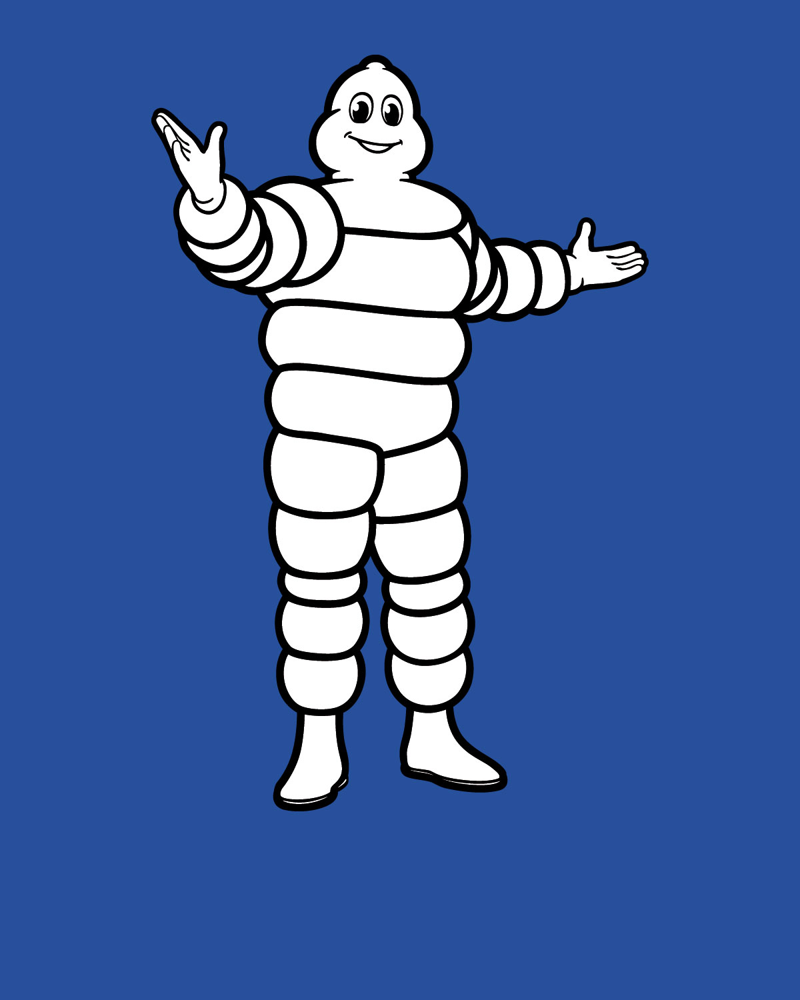
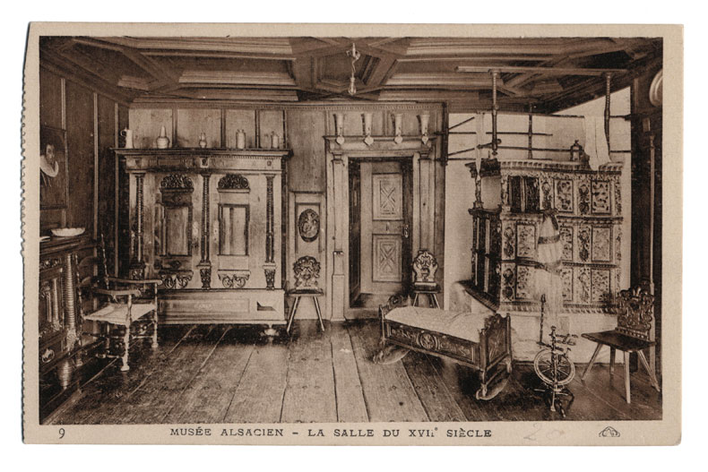
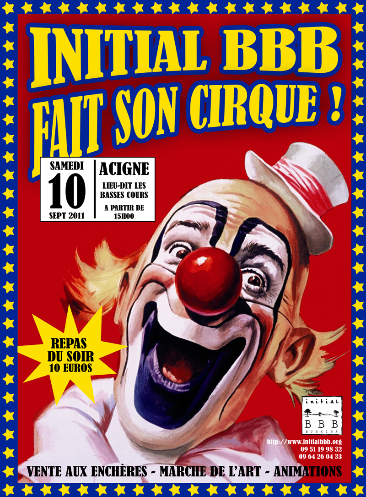
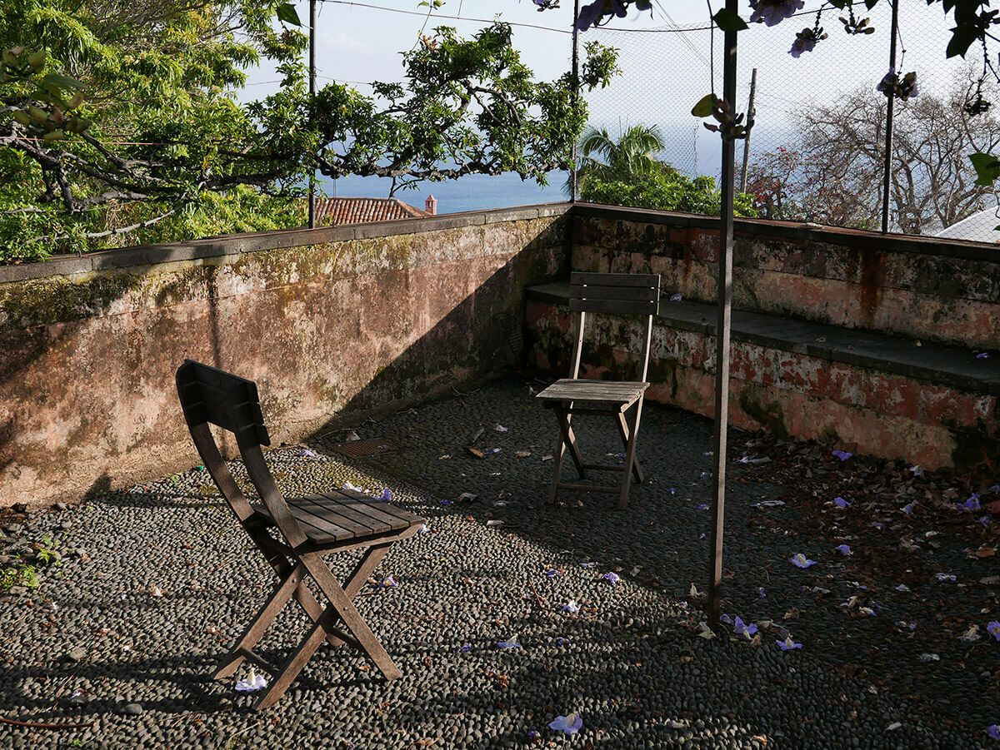
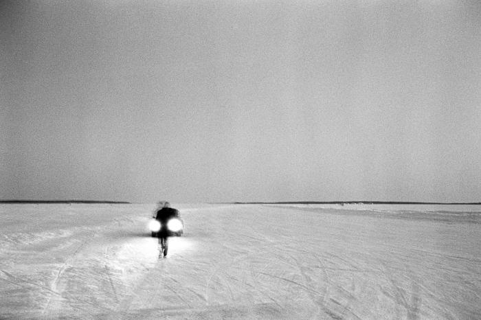

Mots
- 566 " […] my books are three-dimensional objects and very hard to replace with electronic books. If people come to me, they come for something special or better: they expect something new. I think the Internet and e-readers make what I am doing much more clear."
- 559 " If you really loved me, you would choose a better font to get me back “
- 79 " Il faut confronter des idées vagues avec des images claires. "
- 81 " Les aigles ne volent pas avec les pigeons. "
- 561 "Don't confuse legibility with communication. Just because something is legible doesn't mean it communicates and, more importantly, doesn't mean it communicates the right thing."
- 72 "En effet l'universalisme n'est pas abstrait, et bien qu'il le prétende, il n'est pas désincarné. Dans le foisonnement déroutant des textes, quand on finit par décrypter la règle de droit qui institue le sujet de droit, c'est à dire le 'citoyen universel' dont nous parle l'idéologie républicaniste, on découvre aussi qu'elle lui donne un visage, flouté par les euphémismes et la pseudo-généralité, mais identifiable. Il ressemble à quelqu'un qu'on connaît. Il a les traits (la façon de vivre, les occupations et les préoccupations, les prérogatives) d'un homme, d'un blanc, et d'un hétérosexuel. Est-ce si surprenant, alors, que les autres se révèlent non-conformes à ces normes 'universelles' faites en réalité par lui et seulement pour lui ?
- 77 "Femme totale, pomme de chair, feu de lune,
épais parfum d'algues, boue forgée de lumière,
quelle obscure clarté s'ouvre entre tes colonnes?
Et quelle antique nuit touche les sens de l'homme?"
- 560 "Form follows function – that has been misunderstood. Form and function should be one, joined in a spiritual union. "
- 78 "Hommes bons qui aiment ont des karmas de crème. Hommes sauvages qui tuent ont des karmas qui puent"
- 565 "I mean, everyone puts their history into their work."
- 80 "L'absence de graphisme produit autant d'effet que la présence de graphisme. Ce qu'on voit influence notre vie et ce qu'on ne voit pas l'influence tout autant."
- 567 "Limitations are an important thing in design in general because they offer solutions."
- 74 "Lorsque l'on insère nos propres discours dans ces formes, on les souille. On les assombrit. On les fait nôtres et c'est notre revanche finale. On devient une partie du langage de l'autorité, une partie de l'histoire."
- 562 "Most people who use Helvetica, use it because it's ubiquitous. It's like going to McDonald's instead of thinking about food. Because it's there, it's on every street corner, so let's eat crap because it's on the corner. "
- 568 "Now, when we talk about globalization, we talk about making everything the same. This I find very uninteresting, because what is usually lost is any sense of indigenousness."
- 75 "Qui se croit libre de préjugés, subit leur ascendant de façon inconsciente et incontrôlée, comme une vis a tergo. Qui ne veut pas reconnaître les jugements qui le déterminent, ne saura pas même pas voir les choses qui se montrent à lui à la lumière de ces jugements."
- 563 "Type is saying things to us all the time. Typefaces express a mood, an atmosphere. They give words a certain coloring. "
- 76 "Un texte écrit par un écrivain minoritaire que s'il réussit à rendre universel le point de vue minoritaire, que s'il est un texte littéraire important."
- 558 "Work your ass off. Don’t be an asshole."
- 564 "You're always a child of your time, and you cannot step out of that. "
- 806 135.5 dB
- 747 212
- 132 24959
- 70 A voix nu
- 704 Abel et Gordon
- 83 ABM studio
- 251 Abri
- 252 Absense
- 637 Abécédaire
- 253 Accessibilité
- 707 Acne Studios
- 582 Adobe
- 229 Adobe Creative Suite
- 517 Adrien M et Claire B (Compagnie)
- 254 Affichage sauvage
- 255 Affiche
- 120 Affinity Designer
- 84 Agnès Dahan Studio
- 463 AIDS Timeline
- 256 Alcool
- 656 Alerte
- 257 Algorithme
- 258 Aliénation
- 259 Amalgame
- 260 Amalgame
- 261 Amateur
- 547 Amateurisme
- 665 Animisme
- 505 Annihiler
- 0 Anormal
- 116 ANRT
- 262 Anthropocène
- 263 Anthropologie
- 264 Anthropologie
- 265 Anthropologie culturelle
- 760 Anthropomorphisme
- 794 Antispécisme
- 571 Apichatpong, Weerasethakul
- 266 Apocalypse
- 267 Apocalypse
- 512 Apple
- 268 Archaïque
- 241 Architecture Oblique
- 513 Arduino
- 269 Art génératif
- 655 Artefact
- 629 Arts Décoratfs (Musée des)
- 244 Arts Décoratifs (musée des)
- 126 Asphyxiante Culture
- 724 Atelier Irradié
- 85 Atelier Müesli
- 653 Aum Shinrikyō
- 705 Autocollant
- 270 Autorité
- 271 Autre
- 226 B2 (Éditions)
- 589 B42 (Édition)
- 224 B42 (éditions)
- 731 Back Cover
- 143 Badbadbad studio
- 754 Bader, Darrren
- 460 Bains mystiques
- 574 Balise
- 573 Balise
- 572 Balise
- 171 Balland, Ludovic
- 551 Balloon
- 496 Barnbrook, Jonathan
- 514 Barry, Robert
- 144 Bass, Saul
- 162 Bass, Saul
- 117 Bauhaus
- 145 Baur, Ruedi
- 1 Beau
- 682 bell hooks
- 755 Beloufa, Neil
- 772 Benoit Delepine
- 131 Berlin Atonal
- 803 Bernard, Pierre
- 31 BETC
- 63 Bibendum
- 529 Bibliothèque Fantastique (La)
- 497 Bil'ak, Peter
- 58 Bill, Max
- 753 Bischof, Beni
- 272 Bitmap
- 273 Blanc
- 192 Blues & Haïkus
- 186 Boekie Woekie
- 610 Boite
- 146 Bonnefrite
- 147 Boom, Irma
- 274 Bootleg
- 666 Botanique
- 33 Bouchain, Patrick
- 111 Boyau
- 223 Brain magazine
- 464 Brexit
- 502 Brito
- 275 Bulle
- 86 Bureau 205
- 494 Bureau Borsche
- 608 Burlesque
- 222 Butt Magasine
- 584 BuzzFeed
- 278 Cadre
- 280 Cadre
- 276 Cadre
- 279 Cadre
- 277 Cadre
- 102 Cage, John
- 281 Cagole
- 569 Cairn / Karn
- 40 Calle, Sophie
- 506 Capillotracter
- 38 Capsule hotel
- 176 Carcasonne, Guy
- 781 Carlos Amorales
- 282 Carnet
- 148 Carson, David
- 283 Carte
- 612 Carte
- 498 Carter, Matthew
- 581 Casa de Serralves
- 247 Cash, Johnny
- 284 Casquette
- 60 Cassady, Neal
- 173 Cassandre
- 285 Cataclysme
- 604 Catalogue
- 751 Cattelan, Maurizio - autobiographie on autorisée
- 193 Ce que le sida m'a fait, Art et activisme à la fin du XXe siècle
- 585 Celui qui pourrait changer le monde
- 286 Censure
- 515 Centquatre-Paris
- 720 Cereal Magazine
- 664 Chaman
- 288 Chaos
- 287 Chaos
- 516 Charette
- 698 Charuet, Cléo
- 289 Chaussettes
- 761 Cheval
- 87 Children of the Light
- 290 Chirurgie
- 248 Chopin
- 773 Christophe Salengro
- 746 Chroniques de Jérusalem
- 194 Chroniques graphiques
- 291 Circulation
- 556 Cirque
- 293 Citoyen
- 62 Citroën 2 CV
- 292 Cité
- 295 Classe
- 294 Classe
- 634 Classement
- 195 Classer, dominer: Qui sont les "autres" ?
- 586 Clickbait
- 41 Closky, Claude
- 296 CMJN
- 185 CNAP
- 700 CNSAD
- 699 Code Academy
- 613 Code Morse International
- 175 Col Mao
- 297 Col roulé
- 2 Collaboratif
- 298 Collage
- 299 Collectif
- 301 Collection
- 300 Collection
- 587 Comic sans
- 503 Comic sans MS
- 302 Comic strip
- 3 Commun
- 303 Communauté
- 304 Composition
- 305 Concaténation
- 100 Conditionnal Design
- 507 Conditionner
- 651 Conformisme
- 685 Contre-Culture
- 306 Contrefaçon
- 233 Contrepèterie
- 518 Copier
- 307 Copyright
- 4 Corporate
- 309 Corps
- 308 Corps
- 110 Corps utopique
- 310 Couleur
- 59 Cox, Paul
- 722 Cox, Paul
- 485 Crisco
- 150 Crouwel, Wim
- 149 Crouwel, Wim
- 667 Culte
- 640 Cyanotipe
- 786 Cyrillique
- 471 D'une certaine gaieté
- 552 DaFont.com
- 788 Damso
- 714 Danilovic, Ljubisa
- 519 Dasein
- 42 De Cointet, Guy
- 474 Dead History
- 701 DeCointet, Guy
- 196 Design As Art
- 168 DeValence
- 89 DeValence
- 151 Di Sciullo, Pierre
- 703 Didactique
- 784 Die Antwoord
- 588 Digital native
- 237 Diplomatie
- 520 DIS Magazine
- 658 Doctrine
- 614 Document
- 677 Doomsday Clock
- 312 Dos
- 659 Doublet lexical
- 762 Doublure
- 465 DREAM
- 499 Dupré, Xavier
- 737 Dystopie
- 615 Décalage
- 607 Découverte
- 687 Désobéissance civile
- 5 Déterminé
- 311 Détournement
- 702 E+K
- 187 ECAL
- 142 Emigre
- 319 Empowerment
- 320 Empreinte
- 177 En quoi le sida a changé ma vie
- 90 Encore Heureux
- 321 Encre à solvant
- 322 Engagement
- 323 Ennui
- 672 Enquête
- 324 Enseigne
- 88 ETC (Collectif)
- 676 Ethics For Design
- 136 Ethics for Design
- 328 Ethnobiologie
- 466 Europe After The Rain II
- 620 Every Noise At Once
- 174 Excoffon, Roger
- 329 Extérieur
- 694 Fablab
- 590 Facebook
- 669 Fake news
- 657 Fanatisme
- 692 Fanzine
- 152 Faucheux, Pierre
- 521 Ferme du Buisson
- 609 Feuille A4
- 478 FIP
- 679 First Things First
- 678 First Things First 2000
- 43 Fishinger, Oskar
- 331 Flamme
- 332 Flou
- 706 Flèche
- 486 Fonts in use
- 333 Football
- 64 Footix
- 91 Formaboom
- 644 Forme
- 673 Formes Vives
- 93 Formes Vives
- 92 Formes vives
- 183 Forty Part Motet
- 711 Fotokino
- 555 Fraktur
- 782 Francis Bacon
- 645 Froment, Aurélien
- 335 Frontière
- 334 Frontière
- 648 Fröbel, Friedrich
- 330 Féminité
- 780 fête foraine
- 752 Galler, Thomas
- 123 Game boy
- 680 Garland, Ken
- 476 Gazette du Mauvais goût
- 178 Gerner, Jochen
- 759 Giorno, John
- 522 GitHub
- 153 Glaser, Milton
- 336 Glitch Art
- 523 God
- 44 Gonzalez-Torres, Felix
- 638 Gouache
- 337 Goût
- 605 Graphie
- 580 Graphème
- 480 Graphê
- 338 Gravure
- 339 Gravure
- 340 Grille
- 341 Grille
- 179 Groc, Florent
- 771 Groland
- 591 Grootens, Joost
- 94 Group Material
- 95 Guerrilla Girls
- 107 Habiter
- 342 Hacking
- 716 Hamburger Bahnhof Museum
- 743 Hans Fallada, vie et mort du buveur
- 481 Hara-Kiri
- 343 Harmonie
- 188 HEAR
- 491 Helmo
- 592 Helvetica
- 45 Hergé
- 344 Hiérarchie
- 345 Hiérarchie
- 46 Holzer, Jenny
- 346 Homard
- 690 Horizontal
- 524 HTML
- 7 Humanoïde
- 347 Humour
- 103 Hurwitz, Justin
- 47 Hustwit, Gary
- 348 Hypertexte
- 96 Icinori
- 350 Icône
- 349 Icône
- 352 Identité
- 351 Identité
- 579 Idiome
- 353 Idéologie
- 354 Illusion
- 357 Image
- 356 Image
- 355 Image
- 799 Imagier
- 358 Impression numérique
- 234 Impulsion
- 8 In-situ
- 508 Inclure
- 525 Index Grafik
- 487 Index Graphique
- 360 Individu
- 359 Indépendant
- 9 Indéterminé
- 504 Infini
- 361 Insolation
- 362 Installation
- 363 Intelligence artificielle
- 10 Interactif
- 364 Interaction
- 365 Interface
- 235 Intuition
- 366 Intérieur
- 674 Is this your futur?
- 792 Island of Sadness
- 623 It's better to ask forgiveness than permission
- 488 It's Nice That
- 367 Itinéraire
- 500 Jacno, Marcel
- 628 Jaffe, Shirley
- 729 Journal de France
- 671 Journalisme Citoyen
- 670 Journalisme social
- 97 Juste Ciel
- 766 Kaaris
- 526 Katrantzou, Mary
- 619 Kiblind
- 368 Kinect
- 681 Kinross, Robin
- 108 Kiosque
- 527 KIT pédagogique
- 125 Kodak
- 775 Kourtrajmé
- 245 KW Institute for Contemporary Art
- 744 L'aimant
- 198 L'Expérience esthétique
- 635 L'homme et ses signes
- 199 L'image écrite, ou, La déraison graphique
- 137 La Bombe
- 200 La Distinction, Critique sociale du jugement
- 246 La Gaîté Lyrique
- 130 La liberté d'offenser, le sexe, l'art et la morale.
- 732 La piste rouge, colonisation, travail forcé et sorcellerie dans le sud-est camerounais
- 119 La place
- 231 La Typographie moderne : Un essai d'histoire critique
- 528 La vie criminelle d'Archibald de La Cruz
- 750 La vie et la mort des œuvres d'art
- 593 Langage
- 369 Langage
- 725 Large Projects
- 530 LCD
- 745 Le Chat du Rabbin
- 630 Le Chateau, Rentilly
- 727 Le Désert Russe
- 802 Le Monte-en-l'air
- 189 Le Pavillon de l'Arsenal
- 129 Le Prince
- 154 Le Quernec, Alain
- 201 Le Spectateur émancipé
- 783 Le Tag Parfait
- 202 Le Triple jeu de l'art contemporain
- 531 Le Vaisseau
- 127 Le Vertige du Funambule
- 65 Les Cahiers d'Esther
- 203 Les Chiens de garde
- 66 Les Noceurs
- 138 Les nouveaux chiens de garde
- 69 Les Objets introuvables
- 205 Les Totems de l'atome
- 206 Les Vagues
- 204 Les États et empires du lotissement Grand Siècle, Archéologie d’une utopie
- 370 Lettrage
- 636 Lettre
- 207 Libre-échange_x000D_
- 776 Libération
- 501 Licko, Zuzana
- 371 Lien
- 627 Ligne
- 372 Ligne
- 373 Ligne
- 242 Ligne claire
- 660 Linguistique comparée
- 532 Linux
- 374 Lisibilité
- 631 Liste
- 375 Lithographie
- 376 Livre d'artiste
- 710 Lobster Theremin
- 377 Logiciel
- 36 Love hotel
- 641 Ludique
- 791 Lunchtype
- 114 Là où les putains n'existent pas
- 643 Légende
- 777 M le Magazine du Monde
- 717 Maat Museum
- 778 Mad Men
- 378 Maelström
- 379 Maelström
- 533 Main d’Œuvre
- 467 Maison de La Celle-Saint-Cloud
- 489 Makers and founders
- 208 Malevil
- 238 Manichéen
- 691 Manifeste
- 632 Manipuler
- 577 Mansplaining
- 11 Manuel
- 472 Mapperthore, Robert
- 380 Mapping vidéo
- 381 Maquette
- 382 Maquillage
- 385 Marge
- 384 Marge
- 383 Marge
- 386 Marouflage
- 509 Maroufler
- 163 Martens, Karel
- 801 Martin, Malte
- 180 Marx, Stefan
- 387 Mascotte
- 170 Massin, Robert
- 646 Mast, Emily
- 181 Mathieu, Thomas
- 570 Matin Brun
- 48 Matisse, Henri
- 220 Matière Grise
- 388 Matière noire
- 135 Mauvais goût
- 712 McCall, Anthony
- 624 McCall, Anthony
- 800 McCall, Anthony
- 164 Mellier, Fanette
- 389 Meme
- 57 Messe pour un corps
- 534 Metahaven
- 713 Metsäranta, Kimmo
- 155 Millot, Philippe
- 190 Mine
- 594 Minimalisme
- 697 Minuscule
- 391 Module
- 67 Moebius
- 805 MOMEM, Museum of Modern Electronic Music
- 139 Mon Oncle
- 109 Monadologie
- 611 Monotype
- 663 Monsanto, une enquête photographique
- 675 Monsanto: A Photographic Investigation
- 392 Montage
- 647 Montessori, Maria
- 470 Mouse, Mickey
- 484 Mr Bean
- 809 MU (collectif)
- 468 Musée JuÏf de Berlin
- 12 Mystique
- 390 Mémoire
- 492 Müesli (atelier)
- 668 Naturaliste
- 726 Neo Neo
- 61 Neruda, Pablo
- 39 Nhow hotel
- 393 Nid
- 721 Nieves Books
- 394 Noir (couleur)
- 395 Non-lieu
- 98 NONPOROUS
- 13 Normal
- 595 Norman door
- 396 Norme
- 397 Norme
- 652 Nostalgie
- 642 Nuancier
- 398 Nucléaire
- 622 Néoprisme
- 14 Objectif
- 399 Objet
- 596 Obsolescence
- 475 OCR-A
- 166 Office / Kontor
- 618 Offline
- 400 Offset
- 156 Oliver, Vaughan
- 209 On the Road
- 401 Open Source
- 402 Open-ended meaning
- 695 Open-source
- 403 Opprimé
- 736 Optical Sound
- 404 Ordre
- 172 OstenGruppe
- 141 Out Of The Dark
- 15 Ouvert
- 405 P'tite'bière
- 406 Packaging
- 774 Paillasson
- 548 Paint.net
- 696 Palimpseste
- 708 Pan European Recording
- 250 Pantone
- 483 Pan
- 407 PAO
- 639 Papier Peint (Musée du)
- 408 Parcours
- 34 Parent, Claude
- 807 Paris Musique Club
- 210 Parler d'amour au bord du gouffre
- 409 Parodie
- 719 Parra
- 410 Partage
- 510 Participer
- 16 Particulier
- 578 Patois
- 411 Pause-café
- 37 Pavillon Circulaire
- 412 Paysage
- 71 Pecknold, Sean
- 118 Perec, Georges
- 649 Perez, Eloiza
- 157 Perrottet, Vincent
- 414 Pharmakon
- 575 Phonologie
- 730 Photojournalisme
- 49 Pictures Generation
- 133 Pictures
- 787 Pieter Hugo
- 415 Piratage
- 416 Pixel
- 417 Plagiat
- 535 Plagier
- 101 PLM
- 140 Plogoff, des pierres contre des fusils
- 17 Pluridisciplinaire
- 418 Pochoir
- 211 Pocket Atlas of remote Islands
- 709 Podhajský, Leif
- 749 Poisson d'Avril
- 230 Posca
- 461 Poudre mystique
- 212 Pour une critique du design graphique
- 419 Pouvoir
- 758 Prince, Richard
- 19 Privé
- 18 Privé
- 625 Problematic
- 221 Processing
- 421 Processus
- 549 Profane
- 422 Programmation
- 423 Promenade
- 424 Promenade
- 425 propagande
- 511 Propager
- 426 Protocole
- 420 Présence
- 50 Prévieux, Julien
- 21 Public
- 427 Public
- 20 Public
- 413 Périurbain
- 536 Qu'est-ce que le contemporain ?
- 626 Quadriallage
- 763 Que veulent les images ?
- 213 Quelque chose de noir
- 482 Qui ? Résiste
- 51 Rafman, Jon
- 733 Ramper, Dédoubler, collecte coloniale et affect
- 113 Rams, Dieter
- 112 Randonneuse
- 428 Recherche
- 537 Reddit
- 779 Religion
- 431 Reproduction
- 432 Responsabilité
- 757 Revue Faire
- 538 Rhin
- 684 Riot Grrrls, Chronique d'une révolution punk féministe
- 539 Risibles amours
- 495 Risographie
- 121 Roman-photo
- 158 Rudnick, David
- 22 Rural
- 52 Ruscha, Ed
- 433 RVB
- 430 Règles (du jeu)
- 429 Références
- 459 Référent
- 688 Révolte
- 686 Révolte
- 689 Révolution
- 240 Saleté
- 239 Saleté
- 718 Salier, Edouard
- 554 Sample
- 621 Sandwich Puissant
- 159 Saville, Peter
- 462 Savon mystique
- 808 Scale (collectif)
- 53 Scher, Paula
- 160 Schmid, Christina
- 54 Schwitters, Kurt
- 606 Schéma
- 654 Secte
- 769 Seghal, Tino
- 214 Semeur d'espoir - entretiens
- 756 Shermann, Cindy
- 182 Shrigley, David
- 550 ShutterStock
- 437 Signalétique
- 23 Signalétique
- 768 Signer, Roman
- 477 Slanted
- 469 Smiling Sun (The)
- 106 Sneckdown
- 796 Social justice warrior
- 553 Soixante millions de graphistes?
- 734 Sonore Visuel
- 24 Spontané
- 215 Stigmate: les usages sociaux des handicaps
- 715 Stohead
- 438 Stub (la)
- 99 Studio Feixen
- 597 Style
- 439 Style
- 25 Subjectif
- 440 Subjectivation
- 723 Submachine
- 441 Sujet
- 633 Surface
- 540 Swartz, Aaron
- 442 Symbole
- 443 Système
- 444 Système
- 445 Système
- 434 Sémiologie
- 435 Série
- 436 Sérigraphie
- 446 Tampons
- 598 Tasty
- 236 Tautologie
- 599 Technologie
- 447 Technè
- 124 Teenage Engineering
- 650 Template maker
- 448 Temps
- 493 Ter Bekke & Behage
- 161 Teschner, Frédéric
- 683 The Artist as Curator
- 798 The impossible burger
- 184 The Visitors
- 32 The Wall
- 790 This, Hervé
- 165 Thorgerson, Storm
- 105 Théorie du chaos
- 216 Théorie du corps amoureux
- 191 Théâtre de Poche
- 449 Titre
- 541 Tombolo Presses
- 693 Tract
- 735 Transient Festival
- 249 Trap (musique)
- 616 Trax Magazine
- 26 Trivial
- 600 Tumblr
- 804 Twin, Aphex
- 601 Twitter
- 452 Typographie
- 451 Typographie
- 450 Typographie
- 490 Typomanie
- 243 Typophoto
- 134 Typorama
- 738 Uchronie
- 662 Ukiyo-e
- 55 Ulrich Obrist, Hans
- 473 Un coup de dés jamais n'abolira le hasard
- 128 Un design de livre systématique
- 217 Uncoporate Identity
- 27 Unique
- 28 Universel
- 453 Upcycling
- 29 Urbain
- 454 Urbanisme
- 740 Urgence
- 739 Urgence
- 455 Usager, -ère
- 795 Validisme
- 35 Venturi, Robert
- 30 Vernaculaire
- 457 Vide
- 169 Vier5
- 218 Vivre de paysage, ou l'impensé de la Raison
- 765 Vivre par(mi) les écrans
- 458 VJing
- 789 Voguing
- 728 Voice Of Space
- 227 Volumiques (Éditions)
- 770 Von Trier, Lars
- 542 Vox-Atypi (classification)
- 602 Vox
- 546 Vulgarité
- 793 Véganisme
- 115 Vénus : confessions à nu
- 456 Vêtement
- 167 Wagenbreth, Henning
- 56 Wagon, Gwenola
- 748 Waisting time on the Internet
- 543 Warburg, Aby
- 68 Ware, Chris
- 767 Wurm, Erwin
- 583 Wurtz, Bill
- 228 Xavier Barral éditions
- 544 Xerox
- 797 Xerox
- 219 Xerox Book
- 661 Yokoo, Tadanori
- 785 Yougoslavie
- 603 YouTube
- 122 Zones (éditions)
- 82 “If you look through design history and you see something that looks really radical, that’s what you’re going to be doing now. If you think that’s nice, that’s what you’ve already been doing. If you think it’s tired, that’s what you were doing five years ago. But if you think it’s ugly, that’s what you’re going to be doing in five years.”
- 232 Ayurveda
- 557 « Si tout était parfait, tu n’apprendrais jamais rien et tu ne grandirais jamais »
- 73 À l'heure actuelle, missionner des artistes pour créer du lien " sur des territoires déshérités culturellement et socialement est un phénomène courant. [...] Le collectif La forge [...] travaille régulièrement pour des projets d'animation artistique participatifs auprès des publics défavorisés. Valérie Debure, membre du groupe, raconte que dans le paysage culturel, les mêmes recettes sont souvent appliquées. Elle rappelle que la qualité d'un projet est déterminére par la façon dont il émerge " du terrain ", luxe accordé trop rarement et souvent à quelques artistes en qui les collectivités territoriales ont déjà " confiance ". L'entre-soi induit par ce circuit, comme le fait que les collectivités territoriales préfèrent toujours des projets définis à l'avance et politiquement lisses, laisse penser à Debure que ce type d'intervention vient parfois faire diversion sans permettre une action en profondeur. "
- 104 Écartelage
- 313 Échec
- 6 Éclectique
- 576 Écocide
- 315 Écriture
- 314 Écriture
- 316 Édifice
- 317 Édition
- 225 Éditions 100 pages
- 318 Émancipation
- 325 Équilibre
- 326 Équilibre
- 327 Ésotérisme
- 479 Étapes
- 617 Étapes
- 197 Études sur le collectif Grapus, 1970 -1990
- 741 Évacuation
- 742 Évacuation
Définitions
- 0 Qui est contraire à la norme et de ce fait provoque la surprise, l'inquiétude ou la réprobation.
- 1 Qui suscite un plaisir esthétique d'ordre visuel ou auditif.
- 2 Qui fait appel à la collaboration de chacun, contributif, participatif.
- 3 Qui appartient à plusieurs choses ou personnes, qui est simultanément le fait de plusieurs choses ou personnes, ou qu’on partage avec d’autres.
- 4 La communication corporate regroupe l’ensemble des actions de communication qui visent à promouvoir l’image de l’entreprise ou d’une organisation vis à vis de ses clients et différents partenaires.
- 5 Ce qui est soumis à la loi d'un déterminisme.
- 6 Se dit d'une chose qui manifeste cette capacité ou cette complaisance à choisir dans des catégories très diverses.
- 7 Être vivant ou robot d'apparence humaine.
- 8 Dans le lieu précis où quelque chose se trouve.
- 9 Dont les limites dans le temps et dans l'espace ne sont pas précisément définies.
- 10 Se dit d'un support de communication favorisant un échange avec le public.
- 11 Exécuté(e) à la main, sans l'aide de machines.
- 12 Qui concerne les pratiques, les croyances visant à une union entre l'homme et la divinité.
- 13 Qui est conforme à la norme, à l'état le plus fréquent, habituel; qui est dépourvu de tout caractère exceptionnel.
- 14 Qui existe en soi, indépendamment du sujet pensant.
- 15 Qui n'est pas protégé des influences extérieures, dans lequel les influences extérieures peuvent pénétrer.
- 16 Qui est à part.
- 17 Où sont représentées plusieurs disciplines, plusieurs domaines de recherche.
- 18 Qui a lieu dans l'intimité, sans public, qui concerne un petit nombre de personnes.
- 19 Dont seuls quelques particuliers peuvent faire usage, où le public n'est généralement pas admis
- 20 Auquel tout le monde peut participer, prendre part.
- 21 Qui concerne tout un peuple, l'ensemble de la population.
- 22 Qui appartient aux champs.
- 23 Qui donne un signalement, une description.
- 24 Que l'on fait de soi-même, de sa propre initiative, qui se laisse aller à son propre mouvement, à son impulsion naturelle sans se laisser freiner ou entraver par les blocages du conformisme, de la raison, de la réflexion, de la volonté, etc.
- 25 Qui ne correspond pas à une réalité, à un objet extérieur, mais à une disposition particulière du sujet qui perçoit.
- 26 Qui est grossier, vulgaire, qui concerne les éléments qu'une société condamne comme étant contraires aux bonnes mœurs, au bon usage, à la bienséance.
- 27 Qui est seul de son espèce ou qui, dans son espèce, se distingue des autres par certains traits.
- 28 Qui s'étend à l'univers entier, qui embrasse la totalité des êtres et des choses.
- 29 De la ville.
- 30 Propre à un pays, à ses habitants. Synonymes : autochtone, domestique, indigène. Coutumes vernaculaires. Avec l'agriculture, le tissage et la poterie, on voit se généraliser le travail du bois (...). À ce stade appartiennent la plupart des constructions « vernaculaires » élevées dans le monde.
- 31 Agence de publicité réalisant des campagnes d'affichage ou vidéos pour des firmes comme Lacoste, Air France, Canal Plus...
- 32 The Wall est le onzième album du groupe de rock progressif britannique Pink Floyd, et leur second double album.
- 33 Scénographe et maître d'oeuvre Parisien, il est membre de l'atelier Construire. Il est un pionnier du réaménagement de lieux industriels en espaces culturels.
- 34 Architecte français à l'origine du mouvement de l'architecture oblique et de la conception (entre autre) des centrales nucléaires françaises.
- 35 Robert Charles Venturi Jr. est un architecte américain, fondateur principal de la firme Venturi, Scott Brown and Associates. Il est l’une des figures majeures de l’architecture du vingtième siècle et a révolutionné, aux côtés de sa femme et associée Denise Scott Brown, la façon dont les architectes américains concevaient et dessinaient leur environnement. Penseur emblématique du post-modernisme, Venturi s’est notamment intéressé aux éléments architecturaux trouvables dans les rues de Las Vegas.
- 36 Le love hotel (ラブホテル, rabu hoteru, en français « hôtel d'amour ») est, au Japon, un type d'hôtels que l’on peut réserver à l’heure ou à la nuit, offrant de l'intimité et de la discrétion pour des couples afin d'avoir des relations sexuelles. Les chambres des hôtels d'amour ou love hotels, généralement à thème, comprennent une décoration originale et parfois même extravagante ainsi que de nombreux accessoires pour répondre à tous les fantasmes des clients (rame de métro, cabinet de gynécologie, bondage, miroirs, lits ronds, baignoires transparentes…). Les love hotels sont souvent fréquentés par les jeunes couples, qui vivent encore chez leurs parents, mais peuvent également servir à la prostitution. En 2014, selon les acteurs du secteur, le Japon compterait 20 000 à 30 000 love hotels, classés en « établissements de plaisir » ou en « simples hôtels ». Leur chiffre d'affaires global se monterait à 4 000 milliards de yens (29 milliards d'euros). Il en coûte pour un chambre en moyenne 30 à 50 euros pour quelques heures, ou plus de 75 euros pour une nuit.
- 37 Petite construction singulière, le pavillon circulaire n’a rien de rond : son nom illustre le processus de fabrication qui l’a vu naître, suivant les principes de l’économie circulaire.
- 38 Les hôtels capsule (カプセルホテル, kapuseru hoteru, de l'anglais capsule hotel) sont des hôtels typiquement japonais qui ont la particularité d’optimiser au maximum l’espace d’occupation et dont les chambres se limitent donc à une simple cabine-lit. Les cabines de ces hôtels sont constituées d’un tube généralement en plastique ou en fibre de verre, ont une surface moyenne de deux mètres sur un pour une hauteur d’un mètre vingt-cinq et sont souvent équipées d’une télé, qui est à peu près la seule activité possible autre que lire ou dormir. Ces capsules sont superposées par deux et alignées le long d’un couloir. La taille des hôtels est variable : ils peuvent proposer d’une cinquantaine à plus de sept cents capsules. Les bagages sont en principe situés dans un autre endroit que la cabine, par exemple à l’entrée du couloir, dans un casier.
- 39 Hotel sur front de la Spree (Berlin) à l'architecture contemporaine. Mixte entre gratte ciel, verres et briques rouges (architecture scandinave).
- 40 Sophie Calle est un artiste plasticienne, photographe, femme de lettres et réalisatrice française. Son travail d'artiste consiste à faire de sa vie, et notamment des moments les plus intimes, une œuvre.
- 41 Partant d'une analyse des moyens et des fins de l'art, Claude Closky examine, depuis maintenant une vingtaine d’années, les systèmes d'information, de représentation et d’organisation du monde. Poussant leurs logiques internes jusqu'à leur propre point d’effondrement et d’anéantissement, il agence, classe, répertorie, ordonne, désordonne, désorganise de l'intérieur. Il met véritablement en œuvre une théorie subjective de l’information et des médias qui obéit à deux mouvements apparemment contradictoires : l'ellipse et l'accumulation. Cette navigation entre les objets, les signes et les images qui codifient et informent notre univers prend au piège les techniques de la communication par infiltration. Les clichés et autres mots d’ordre ainsi véhiculés sont détournés et retournés pour une réflexion sur la construction de l'identité, tant individuelle que collective.
- 42 Guy de Cointet, né en 1934 à Paris et mort en 1983 à Los Angeles, est un artiste français actif en Californie.
- 43 Oskar Fischinger est un peintre et un réalisateur de cinéma d'animation allemand. Il réalise notamment dans les années 1920 et 1930 des films abstraits d'animation en volume à base de pâte à modeler. Avec Fantasia, Walt Disney s'inspire en partie de son travail.
- 44 L'artiste Felix Gonzalez-Torres est né en 1957 à Guaimaro (Cuba). Il quitte ce pays en 1971, avec sa sœur Gloria, pour l'Espagne où il séjournera jusqu'en 1979. À partir de 1979, il étudie la photographie à New York, au Pratt Institute puis au Whitney Independant Study Program. Entre 1984, date de sa première exposition personnelle (Printed Matter, New York) et le 6 janvier 1996, jour de sa mort à Miami, Felix Gonzalez-Torres aura eu le temps de tracer un parcours dont la devise pourrait être cette « scie » que les Français du XIXe siècle ont répétée à l'envi : « Glissez, mortels, n'appuyez pas. » Son œuvre se tient sur un fil, celui qui sépare l'intimité et l'espace public, l'éphémère du monde et les choses durables, la douceur des heures heureuses et la violence du malheur.
- 45 Hergé, de son vrai nom Georges Remi, est un auteur belge de bande-dessinée, le créateur des Aventures de Tintin. Ces dernières sont publiées pour la première fois en 1929 dans le supplément hebdomadaire du journal Le Vingtième Siècle dédié à la jeunesse, Le Petit Vingtième. La première histoire de Tintin à paraître fut Tintin, reporter au pays des Soviets puis suivirent Tintin au Congo et Tintin en Amérique. En parallèle à Tintin, Hergé crée d’autres séries comme Quick et Flupke et Jo, Zette et Jocko. C’est en 1946 qu’est créé Le Journal Tintin dont Hergé sera le rédacteur en chef. En 1976, Hergé achève ce qui sera son dernier album Tintin et les Picaros.
- 46 Pour Jenny Holzer (née en 1950 à Gallipolis en Ohio), cette artiste américaine, la toute première femme à s'être vue récompensée par le lion d'or à la 44e Biennale de Venise en 1990, le texte constitue une matière première polysémique depuis la seconde moitié des années 1970. S'appuyant autant sur le choc visuel de la typographie que sur la simplicité de ses phrases, entre réflexion prosaïque et philosophie zen, message quasi politique et confidence, Jenny Holzer alterne les supports et les formats. [...] Jouant l'infiltration avec des affirmations parfois elliptiques, Holzer ne prend aucun plaisir à raconter une histoire linéaire mais sait davantage attirer l'attention d'un passant, d'un lecteur « automatique » et blasé.
- 47 Réalisateur et photographe indépendant, à l'origine de nombreux documentaires tel que Hevetica.
- 48 Henri Matisse né le 31 décembre 1869 au Cateau-Cambrésis, et mort, le 3 novembre 1954, à Nice, est un peintre, dessinateur, graveur et sculpteur français.
- 49 La Pictures Generation, génération des images, tient son nom de l'exposition Pictures qui se tient à New-York en 1977. Initiallement formée par Sherry Levine, Robert Longo, Troy Brauntuch, Philip Smith et Jack Goldstein, le groupe atteint une trentaine d'artistes. [...] Cette génération, abreuvée d'images, traque les stéréotypes. [...] Dans un monde saturé d'images, où, selon Sherry Levine, faute d'original et d'originalité, il reste encore à reproduire des reproductions, ces artistes font de l'appropriation leur principal mode opératoire en usant de la citation, de références et de symboles éculés, ils entendent sapper les notions d'auteur, d'originalité et d'unicité de l'oeuvre d'art. On parle à propos de leur travail d'art de l'approptiation.
- 50 Le travail, le management, l’économie, la politique, les dispositifs de contrôle, les technologies de pointe, l’industrie culturelle sont autant de « mondes » dans lesquels s’immisce la pratique de Julien Prévieux. A l’instar des Lettres de non-motivation qu’il adresse régulièrement depuis 2000 à des employeurs en réponse à des annonces consultées dans la presse, détaillant les motivations qui le poussent à ne pas postuler, ses œuvres s’approprient souvent le vocabulaire, les mécanismes et modes opératoires des secteurs d’activité qu’elles investissent pour mieux en mettre à jour les dogmes, les dérives et, in fine, la vacuité. Adoptant sciemment la posture de l’individu confronté à des pans entiers de la société qui, à bien des égards, se retrouvent déshumanisés, Julien Prévieux développe une stratégie de la contre- productivité, ou de ce que le philosophe Elie During nommait, dans un récent texte sur sa pratique, le « contre-emploi ». Christophe Gallois
- 51 Artiste, cinéaste et essayiste québécois. Il s'intéresse principalement à l'impact de la technologie sur la conscience collective contemporaine.
- 52 Edward Ruscha, né le 16 décembre 1937 à Omaha, Nebraska, est un peintre, photographe et réalisateur américain. Il est connu pour ses peintures et dessins incluant des mots ou des phrases, ainsi que pour ses livres d'artistes qui ont marqué l'histoire de l'art des années 1960 à la fois dans le pop art et l'art conceptuel.
- 53 Graphiste et peintre américaine, travaillant au sein du studio Pentagram.
- 54 Kurt Schwitters, né le 20 juin 1887 à Hanovre, en Allemagne, et mort le 8 janvier 1948 (à 60 ans), à Ambleside, en Angleterre, est un peintre, sculpteur et poète allemand qui a incarné l'esprit individualiste et anarchiste du mouvement dada, dont il fut l'un des principaux animateurs de Hanovre. En parallèle à dada, il a créé un mouvement qu'il a appelé Merz. Il a exercé une influence importante sur les néo-dadas américains, Robert Rauschenberg en particulier, qui lui a emprunté l'idée de ses combine-paintings et ses collages.
- 55 Figure majeure de l'art contemporain, Hans Ulrich Obrist est le curateur du moment, sur tous les fronts, toutes les images, partout en même temps. Il ne se téléporte pas, mais travaille d'arrache pied pour promouvoir aussi bien des jeunes artistes pour l'instant exposés dans des espaces run-space, que pour des artistes initiés voir pop-stars aux quarte coins du monde.
- 56 Co-fondatrice du projet Nogo voyages, du collectif Cela Etant et du laboratoire de recherche LOPH, elle réalise de nombreuses installations vidéos, des pièces filmiques, sonores en France et à l’étranger comme le projet Globodrome, Hypnorama, le Musée de l'imaginaire terroriste et le film Cyborgs dans la brume. Diplômée de l’Atelier de Recherches Interactives et de l’Ecole Nationale Supérieure des Arts Décoratifs de Paris, elle enseigne comme Maître de conférence à l’Université Paris 8.
- 57 Performance pendant laquelle l'artiste distribua les tranches d'un boudin issu de son propre sang. Recette de boudin au sang humain : Prendre 90 cm3 de sang humain liquide (le contenu de trois seringues grand modèle), 90g de gras animal, 90g d’oignons crus, un boyau salé ramolli à l’eau froide puis épongé, 8g de sel, 5g de quatre-épices, 2g d’aromates et de sucre en poudre. Hacher la moitié du gras, couper le reste en dés et couper de même les oignons en dés et les faire blanchir cinq à six minutes à l’eau salée, les égoutter et les laisser refroidir. Faire fondre le gras haché, ajouter les oignons et les faire cuire un quart d’heure à feu très doux, y mélanger le gras coupé en dés et laisser cuire sept à huit minutes. Retirer la casserole du feu et mêler peu à peu le sang humain à la graisse. Tourner alors le liquide sur le feu jusqu’à ce qu’il soit légèrement lié (10 à 12 minutes). Ajouter les différents ingrédients. Nouer le boyau à un bout, introduire un entonnoir dans l’autre extrémité, remplir avec le mélange, nouer et mettre sur une grille dans une casserole en couvrant avec de l’eau chaude fortement salée. Mettre le récipient sur le feu jusqu’à ébullition et le retirer aussitôt. Lorsque le boudin est raffermi, l’égoutter, le couvrir avec un linge et le laisser refroidir. Couper le boudin en tronçons et le faire griller.
- 58 Artiste fondamental qui a incarné la modernité de façon exemplaire. À la fois architecte formé au Bauhaus, peintre abstrait (il fut élève de Kandinsky et Klee), cofondateur du mouvement de l’Art concret (poursuivant la pensée de Théo van Doesburg), mais aussi graphiste, typographe, scénographe d’exposition et designer, certaines de ses réalisations font désormais partie des grands classiques du 20ᵉ siècle.
- 59 Artiste, graphiste, illustrateur, scénographe français qui s’illustre dans la pluridisciplinarité et la multiplicité des techniques qu’il explore.
- 60 Neal Cassady est un poète et écrivain américain, compagnon de route de Jack Kerouac sur lequel il a eu beaucoup d'influence. Neal Cassady inspire à Kerouac le personnage de Dean Moriarty dans son livre Sur la route. Neal Cassady est une figure incontournable de la Beat Generation mais aussi du mouvement psychédélique des années 1960.
- 61 Pablo Neruda (nom de plume), est un poète, écrivain, diplomate, homme politique et penseur chilien. Il est considéré comme l'un des quatre grands de la poésie chilienne. Mort officiellement d'un cancer 12 jours après le coup d'État du 11 septembre 1973 au Chili, l'hypothèse d'un assassinat est de plus en plus évoquée dans les années 2010 par le gouvernement chilien et les experts.
- 62 La Citroën 2 CV (pour « deux chevaux »), familièrement appelée Deuche ou Deudeuche, est une voiture populaire française produite par Citroën entre le 7 octobre 1948 et le 27 juillet 1990. Le prototype 1939 et le dernier modèle de 1990. Avec un peu plus de 5 100 000 d'exemplaires elle est la quatrième voiture française la plus vendue derrière la Renault Clio (environ 12 300 000 d'exemplaires), la Peugeot 206 (environ 10 000 000 d'exemplaires) et la Renault 41 (un peu plus de 8 100 000 voitures).
- 63 Bibendum, aussi appelé Bonhomme Michelin, est la mascotte de Michelin, la manufacture française des pneumatiques. Créé en 1898, il est devenu emblématique de la marque. Son nom provient de l'expression « Nunc est Bibendum » d'Horace ( « c'est maintenant qu'il faut boire » ).
- 64 Footix est la mascotte de la Coupe du monde de football 1998 qui se déroulait en France. Il a été créé par Fabrice Pialot, musicien et graphiste.
Footix est un coq, symbole de la France, dressé sur ses pattes, possédant des bras et des mains. Son corps est bleu, une large collerette rouge entoure sa tête qui est jaune.
Son nom se termine en « -ix » en référence au stéréotype des Gaulois dont le nom se terminerait toujours par « -ix » selon la bande dessinée Astérix. Son succès fut vraiment au rendez-vous et associé officiellement aux compétitions. Il a figuré sur des séries de cartes téléphoniques, des enveloppes commémoratives de la Poste, de nombreux objets publicitaires.
- 65 Les Cahiers d'Esther racontent les histoires d'une fillette à ses 10, 11 et 12 ans. Esther est la fille d'une amie de Riad Sattouf ; elle lui raconte ses annecdoctes et histoires de la vie.
- 66 « La vie est une fête où les gens sont bienvenus ou pas bienvenus » comme l'a dit une fois un homme dans un beau costume taché de bière avec l'accent flamand.
- 67 Mœbius est l'un des fondateurs de la maison d'édition Les Humanoïdes Associés, éditrice du magazine Métal hurlant. Il participe également à la conception graphique de films comme Alien et Tron. Son impact sur la bande dessinée populaire en tant que Giraud autant que celui de la science-fiction en tant que Mœbius font de lui l'un des dessinateurs francophones majeurs du XXe siècle. À partir de la fin des années 1960, Jean Giraud illustre une série de magazines et de livres de science-fiction dans lesquels il aborde des thèmes plus personnels et moins conventionnels. Ces illustrations sont signées Mœbius, pseudonyme inspiré du ruban de Möbius inventé par le mathématicien allemand August Ferdinand Möbius. Ce pseudonyme est utilisé pour la première fois dans une bande dessinée intitulée L’Homme du xxie siècle, publiée en mai 1963 dans le numéro 28 d’Hara-Kiri. Mœbius apparaît une dizaine de fois dans Hara-Kiri jusqu’au numéro 40, sorti en 1964. Par la suite, Jean Giraud n'utilisera plus cette signature sur une planche de bande-dessinée jusqu'en 1971, mais il continuera à s'en servir pour ses illustrations de science-fiction. En 1970 il rencontre Alejandro Jodorowsky pour qui il réalise l'affiche du film El Topo.
- 68 De Jimmy Corrigan aux Building Stories en passant par Quimby the Mouse, Chris Ware (né en 1967) a marqué comme peu de dessinateurs la bande dessinée contemporaine. Son art romanesque, son génie formaliste, son amour de la bande dessinée ancienne, son rapport compliqué à l’art contemporain (il est l’un des auteurs de bandes dessinées les plus souvent exposés dans les musées américains), sa manie de l’autodépréciation en font un artiste passionnant et à facettes.
- 69 Catalogue d’objets introuvables publié en 1969 fonctionne comme une parodie de catalogue de vente. Chaque objets est accompagné d’une courte description.
- 70 Podcast sur 5 épisodes de 30 minutes chacun, sur une personnalité publique.
- 71 Sean Pecknold est un cinéaste de Seattle. Il a remporté le UK Music Video Award 2012 pour la meilleure vidéo d'animation pour "The Shrine / An Argument" pour Fleet Foxes. Il a réalisé d'autres clips pour Grizzly Bear, Beach House et Here We Go Magic, Ikea, Sony, BBC Knowledge, Dreamworks et Smartwater.
- 74 Citation de Felix-Gonzalez Torres. Lorsque l'artiste emploie des références formelles au minimalisme, c'est pour mieux s'infiltrer dans ce qui a représenté l'autorité pour l'histoire de l'art et mieux sapper son hégémonie.
- 80 Impact graphique.
- 81 Synonyme: « On ne mélange pas les torchons avec les serviettes. »
- 82 Observation critique des tendances en matière de création.
- 83 ABM est un studio de design graphique, de productions numériques et imprimées pour des clients tels que Les Rencontres de la Photographie d'Arles ou la Cité des Sciences à Paris.
- 84 Studio de design graphique français qui travaille sur de nombreux catalogues d'exposition et expositions.
- 85 Atelier de design graphique réalisant notamment le graphisme de la revue TRAM
- 86 Bureau 205 est un bureau de design graphique fondé par Damien Gautier en janvier 2010. Il revendique une approche globale par la spécificité des savoir-faire qu'il propose. La typographie et le dessin de caractères, la composition et la mise en page sont des atouts majeurs de l'équipe. Le bureau aussi bien à des identités visuelles, des logos, qu’à des éditions, du dessin de caractère, du packaging ou de la signalétique.
- 87 Children of the Light c'est la collaboration des deux artistes scénographes Christopher Gabriel et Arnout Hulskamp. Il se sont rencontrés à l'occasion d'une résidence au club Trouw Amsterdam. Ils ont tendance à mystifier le public en créant des scénographies et des installations abstraites et sphériques. Ils ont notamment réalisé la scénographie des concerts de Nicolas Jaar et de Darkside.
- 88 Né à Strasbourg en septembre 2009, le Collectif Etc a pour volonté de rassembler des énergies autour d’une dynamique commune de questionnement de l’espace urbain. Par le biais de différents médiums et de différentes compétences, le collectif se veut être un support à l’expérimentation.
- 89 Actif dans les domaines de la communication visuelle, du design graphique, de la typographie et dans la direction artistique de projets éditoriaux, le studio deValence conçoit, depuis sa création en 2001, des publications, des identités visuelles, des objets numériques, des signalétiques, et des caractères typographiques pour des contextes et des échelles variés, tant publics que privés.
- 90 Agence d'architecture qui travaille sur le réemploi des matériaux.
- 91 Studio de design graphique, ayant notamment réalisé l'identité visuelle de diverses expositions du musée des Beaux arts de Lyon.
- 92 Forme Vives est un atelier de communication politique, utopique et exigeant. Il regroupe aujourd’hui trois joyeux graphistes-dessinateurs – Nicolas Filloque, Adrien Zammit et Geoffroy Pithon – installés entre Brest, Nantes et Marseille. Leur travail se focalise notamment sur des sujets politiques et sociaux. Ils collaborent avec des associations à but non lucratifs, des collectifs militants et des collectivités avec l’ambition de produire des formes qui soient des prolongements cohérents et heureux à leurs pratiques.
- 93 « Formes Vives est un atelier de communication politique, utopique et exigeante. Il regroupe aujourd’hui trois joyeux graphistes-dessinateurs, Nicolas Filloque, Adrien Zammit et Geoffroy Pithon, installés entre Brest, Nantes et Marseille. Notre travail se focalise sur des choses qui en valent la peine notamment des sujets politiques et sociaux. Nous collaborons avec des associations à but non lucratif, des collectifs militants et des collectivités, avec l’ambition de produire des formes qui soient des prolongements cohérents et heureux à leurs pratiques. »
- 94 Collectif d'artiste actif à New-York entre 1989 et 1996. Il a été fondé entre autres par Julie Ault, Tim Rollins et Mundy McLoughlin. Ils ont été rejoint par Felix Gonzales-Torres et d'autres artistes. Ils préfèrent les expositions collaboratives aux individuelles, l'engagement communautaire à l'exclusivité et les lieux alternatifs à la galerie. Le Group material demande « à chacun de s'interroger sur la culture qu'il tient pour acquise ». Le Group Material a adopté des postures activistes sur des sujets sensibles, ce qui s'illustre dans l'AIDS Timeline project, qui a cherché à montrer la complexité politique et culturelle de la réception de la maladie.
- 95 Les Guerrilla girls sont des vengeresses masquées féministes [...]. Elles utilisent des faits, de l’humour et des images choquantes pour révéler la discrimination et la
corruption dans la politique, l’art, le cinéma et la pop culture. Elles minent l’idée d’une narration traditionnelle
en révélant ce qui est présupposé, sous-entendu, négligé, et tout bonnement injuste.
- 96 Duo d'artistes qui publie éditions et affiches mêlant illustration et graphisme.
- 97 Atelier de conception graphique ayant notamment réalisé l'identité visuelle de Nova Tunes.
- 98 NONPOROUS est un studio de design graphique et d'édition américain.
- 99 Studio de design indépendant à Lucerne en Suisse composé de Felix Pfäffli et Raphael Leutenegger. Ils travaillent internationalement pour des marques comme Nike, Google, Hermès ou le New York Times. Ils travaillent aussi plus localement pour des institutions comme le Wanderlust ou les Nuits Sonores en France, la Lucerne University of Applied Sciences and Arts, Südpol ou encore le Luzerner Theater en Suisse.
- 100 Collectif de graphistes hollandais. Depuis le printemps 2008 Luna Maurer, Edo Paulus, Jonathan Puckey et Roel Wouters se réunissent tous les mardis à la table de la cuisine de Luna. En plus de travailler sur le manifeste de conception conditionnelle ils organisent des ateliers hebdomadaires de conception conditionnelle et publient les résultats sur leur site Web.
- 101 La Compagnie des Chemins de fer de Paris à Lyon et à la Méditerranée, communément désignée sous le nom de Paris-Lyon-Méditerranée ou son sigle PLM, est l'une des plus importantes compagnies ferroviaires privées françaises entre sa création en 1857 et sa nationalisation en 1938, lors de la création de la SNCF..
Desservant le Sud-Est de la France, et notamment la Côte d’Azur, la Provence, les Cévennes, et les Alpes, le PLM était la compagnie par excellence des départs en villégiature. La gare parisienne du PLM était la Gare de Lyon.
- 102 John Milton Cage Jr. est un compositeur, poète et plasticien américain. Élève de Schönberg, John Cage s'est illustré comme compositeur de musique contemporaine expérimentale et comme philosophe. Il est également reconnu comme l'inspirateur du mouvement Fluxus, du groupe espagnol Zaj et des expérimentations musicales radicales qui accompagnaient les chorégraphies de la Merce Cunningham Dance Company. Il y a d'ailleurs exercé la fonction de directeur musical puis de conseiller musical jusqu'à sa mort en 1992.
- 103 Justin Hurwitz est un compositeur de musique de film et scénariste américain. Il est notamment connu pour ses collaborations avec le cinéaste Damien Chazelle.
- 104 L'image {...} s'y désarticule de manière infinie, définissant une géographie théâtralisée dans ses nouveaux replis.
- 105 Théorie étudiant les phénomènes dans lesquels intervient le hasard, mais qui présentent des régularités pouvant être décrites mathématiquement.
- 106 Une étendue révélée par l'enneigement qui permet de distinguer la surface réellement occupée par les usagers d'un espace donné.
- 107 « Habiter » signifie « être-présent-au-monde-et-à-autrui ». Loger n’est pas « habiter ». L’action d’habiter possède une dimension existentielle. « Habiter » c’est déployer votre être dans le monde qui vous environne et auquel vous apportez votre marque et qui devient vôtre. Si pour Heidegger, l’habiter en tant que mode d’être, est un enracinement, pour Lévinas « la maison choisie est tout le contraire d’une racine. Elle indique un dégagement, une errance qui l’a rendu possible. » Ainsi, pour le premier, « être homme veut dire : être sur terre comme mortel, c’est-à-dire : habiter » et c’est en ce sens qu’il peut être dit qu’on habite le monde ; pour le second, au contraire, la demeure est arrachement au monde, condition du recueillement.
- 108 Le kiosque dans le paysage selon François Jullien : « La fonction du kiosque est — mais sans annonce, sans mystique ni communion — de retirer la séparation. On y est à la fois dedans et dehors, exposé et abrité. [...] Il n'y a donc même plus à distinguer entre « kiosque » et « non-kiosque », là où il est et là où il n'est pas , c'est-à-dire à prétendre l'assigner et le chercher à sa place, à vouloir y accéder et se fixer un but, qu'on atteint ou qu'on atteint pas. Le « kiosque » est partout où, cédant à la connivence, je laisse venir à moi, mais moi n'étant plus « moi », de l'ego — et c'est cela « réaliser ». Le kiosque dès lors est dans l'entre, c'est-à-dire en aucun lieu propre, ayant sa « propriété » : il est partout dans l'entre-paysage, quand on sait l'instaurer. Comme aussi, en retour : le paysage est partout où je peux — je sais — y trouver un kiosque. »
- 109 La Monadologie de Leibniz a été écrite en français en 1714. Leibniz définit la monade comme les atomes de la nature, les éléments du monde, les parties qui composent le tout. Il affirme les deux grands principes rationaliste, le principe de raison suffisante et le principe de non-contradiction, et montre pourquoi Dieu a créé le meilleur des mondes possibles.
- 110 Conférence radiophonique, Michel Foucault arpente le corps comme un territoire. Espace à priori limité, personnel, imposé à chacun mais espace que nous partageons en commun.
- 111 Tube de caoutchouc, gonflé d’air ou d’un gaz comprimé, et qui est fixé à la jante d’une roue pour amortir les chocs, inventé en 1888.
- 112 Type de bicyclette conçue pour la pratique du cyclotourisme qui se différencie du vélo de course par un équipement privilégiant la robustesse, le confort et la sécurité aux dépends du poids, avec notamment des pneumatiques plus larges, des garde-boue, porte-bagages et éclairage fixes.
- 113 Designer industriel allemand contemporain, étroitement associé aux produits de consommation de la société Braun et à l'école fonctionnaliste du design industriel.
- 114 Documentaire réalisé par Ovidie qui raconte les dérives dans la politique de l'État suédois pour « éradiquer la prostitution ». Eva-Marree Smith Kullander est tuée par le père de ses deux enfants de plus de 30 coups de couteau, dans les bureaux des services sociaux suédois. Elle l'avait en effet quitté quelques années plus tôt, pour violences conjugales en emmenant ses enfants avec elle. Pour subvenir aux besoins de sa famille, elle devient alors escort-girl. Cette « travailleuse du sexe » a donc travaillé pendant deux semaines sous le nom de « Jasmine petite », pour ensuite se voir dénoncer aux services sociaux par l'une de ses proches, et retirer par la suite la garde de ses enfants sans aucunes enquêtes préalables.
- 115 Au Danemark dans un studio improvisé, face à la caméra, des jeunes femmes parlent sans détour du sexe, du désir et de la frustration.
- 116 L'Atelier national de recherche typographique (ANRT), initialement dénommé Atelier national de création typographique (ANCT), était un lieu de formation et de réflexion autour de la création typographique. Placé sous la tutelle du ministère français de la Culture, l'ANRT était sous la responsabilité de la Délégation aux arts plastiques.
- 117 La Staatliches Bauhaus est une école d'art allemande, fondée en 1919 à Weimar (Allemagne) par Walter Gropius. Par extension, Bauhaus désigne un courant artistique concernant, notamment, l'architecture et le design, la modernité mais également la photographie, le costume et la danse. Ce mouvement posera les bases de la réflexion sur l'architecture moderne, et notamment du style international.
- 118 Georges Perec est un écrivain et verbicruciste français né le 7 mars 1936 à Paris 19e et mort le 3 mars 1982 à Ivry-sur-Seine (Val-de-Marne). Membre de l'Oulipo à partir de 1967, il fonde ses œuvres sur l'utilisation de contraintes formelles, littéraires ou mathématiques, qui marquent son style.
- 119 Le livre s’ouvre avec la mort du père de la narratrice, le 25 juin 1967, deux mois après que celle-ci ait été reçue au Capes de Lettres. La demeure familiale accueille les préparatifs de l’enterrement. En compagnie de sa famille, et en écoutant les messages de soutien de voisins et de proches, la narratrice éprouve un certain malaise. La messe et l’enterrement ont lieu, après quoi tout le monde se retrouve au café du quartier pour le repas. La narratrice accompagne sa mère dans les démarches administratives puis rentre chez elle, où elle forme le projet d’écrire sur la relation qu’elle entretenait avec son père. Pour fuir tout pathos, elle se refuse au romanesque et entreprend de décrire les faits le plus froidement possible.
- 120 Affinity Designer est un éditeur graphique vectoriel pour Apple macOS et Microsoft Windows de Serif Europe.
- 121 Né en 1947 en Italie, le roman-photo a constitué le plus gros succès éditorial de l’après-guerre, et restera pendant plus de vingt ans le best-seller de la littérature populaire en Méditerranée. Les lecteurs – en majorité des lectrices – se comptaient par millions ; les revues dans lesquelles ils étaient publiés passaient de main en main et c’est ainsi que dans les années soixante, on estime qu’un Français sur trois lisait des romans-photos.
- 122 « Nous entrons dans une phase de réaction et de résistances, un long hiver dans lequel des batailles s’annoncent. Il nous faudra des espaces pour construire de nouvelles offensives où il sera possible, sans perdre la mémoire, de fourbir de nouvelles armes, de conduire de nouvelles expérimentations, mais aussi de retrouver d’anciens chemins de traverse. Au-delà des « fortifs », les anciennes fortifications de Paris, il y avait un espace en friche, une bande de terre sur laquelle on n’avait pas le droit de construire. Sur cette zone réservée s’étaient bâties des habitations de fortune, des constructions légères, faites de bric et de broc, qui n’avaient pas le droit d’être là, mais qui occupaient le sol : c’était la « zone ». Les « zones », ce sont des espaces périphériques, détournés et souvent louches, marginaux et subalternes, où se trament les rébellions. Zones voudrait être un espace de résistance éditoriale. Centré sur la contre-culture, l’activisme et les nouvelles formes de contestation, en lien avec les mouvements sociaux et en prise avec les nouvelles théories critiques, il accueille tous les genres et tous les formats. Le fil conducteur sera la résistance à l’oppression, qu’il s’agisse d’en décrire les nouvelles formes, d’en retracer l’histoire, d’en révéler le fonctionnement et les techniques, mais aussi d’esquisser, à travers le récit des anciennes luttes et des conflits du présent, d’ici et d’ailleurs, le visage d’une nouvelle gauche de combat et d’ouvrir la voie à des alternatives concrètes. »
- 123 Console portable de jeu vidéo 8-bits de quatrième génération.
- 124 Enregistrer et sampler des voix en utilisant huit moteurs différents au graphisme d'inspiration japonaise par des suédois. Ce sont associés à Cheap Monday pour créer leur collection de pockets operator de poches.
- 125 Kodak (officiellement : Eastman Kodak Company) est une entreprise américaine fabriquant des produits et fournissant des services dans le domaine de la photographie, du cinéma, de la radiologie et de l'impression. L'un de leur produit phare est encore aujourd'hui l'appareil photo jetable, moyen de création et de pression sociale utilisé à des fins plus ou moins heureuses.
- 126 « [...] Jean Dubuffet a construit son œuvre sur des données différentes de celles qui avaient conventionnellement cours. Dans le même temps, il s’est passionné pour ce que lui-même a dénommé l’Art Brut, lequel s’épanouit en plein champ, du délire parfois, et partout sur les chemins d’ici et d’ailleurs. Il s’agit, en effet, d’échapper à cette sorte de violence exercée par le pouvoir intellectuel – allié du pouvoir social – au moyen d’un excès d’informations dites culturelles qui tendent à faire accroire à tout un qu’il participe à la créativité, qui devrait être le propre de l’art, et qu’il jouit ainsi de cette liberté dont celui-ci est indéparable. Où en sommes-nous en 1986 ? Le combat n’a pas pris fin entre-temps. Asphyxiante culture demeure d’actualité. Ayant compris que l’ordre social est l’émanation de l’ordre culturel – et non le contraire (et qui veut contrôler l’un doit préalablement s’assurer de l’autre), chaque pouvoir – celui-ci comme celui-là – n’a-t-il pas continué à empêcher d’éclore les œufs nouveaux pondus. De sorte que la culture, institutionnalisée, publicitaire, prévaut toujours dans l’attente de cette autre, souhaitée par Jean Dubuffet, qui désignerait « l’actif développement de pensée individuelle ». Que l'on fait de soi-même, de sa propre initiative; qui se laisse aller à son propre mouvement, à son impulsion naturelle sans se laisser freiner ou entraver par les blocages du conformisme, de la raison, de la réflexion, de la volonté, etc.
- 127 « Parce qu’il contribue à la mise en forme de contenus et à l’organisation des conditions de circulation des biens matériels et immatériels, le design graphique est toujours une recherche d’équilibre entre son instrumentalisation par les pouvoirs économiques, politiques et l’attitude critique des designers à l’égard de ces pouvoirs. Le vertige naît de la rupture de cet équilibre. Le capitalisme cognitif et l’industrie culturelle connaissent les compétences du design graphique. Assimilé à un emballage créateur de plus-value, il contribue à favoriser l’extension d’un formatage esthétique mondialisé. Faut-il renoncer à la fonction critique du designer ? Faut-il accepter de faire le deuil d’une capacité à accompagner les individus dans la lecture de la complexité ? Au contraire, il s’agit d’interroger et d’actualiser cette fonction critique en investissant ce qui constitue aujourd’hui le terreau commun : la culture numérique. [...] »
- 128 La conception d'un livre suit-elle uniquement un processus logique et réfléchi ? Du choix d'une famille de caractères, et de son corps, à celui de la disposition des blocs de texte, le designer graphique et typographe suisse Jost Hochuli étudie le rôle décisif que joue l'instinct dans les différentes étapes de planification d'un ouvrage. Un design de livre « systématique » ? a été écrit à l'occasion d'une conférence présentée pour la première fois à Munich en 2007. S'appuyant, à titre d'exemples, sur cinq ouvrages issus de son travail, Jost Hochuli revient sur les questionnements soulevés lors de leur conception et sur l'importance de l'intuition dans une réflexion rationnelle.
- 129 Comment devenir prince et le rester, analysant des exemples de l'histoire antique et de l'histoire italienne de l'époque. Parce que l'ouvrage ne donnait pas de conseils moraux au prince comme les traités classiques adressés à des rois, et qu'au contraire il conseillait dans certains cas des actions contraires aux bonnes mœurs, il a été souvent accusé d'immoralisme, donnant lieu à l'épithète machiavélique.
- 130 Dans cet ouvrage, l’auteur se concentre sur les discours ayant trait au statut moral et politique des représentations sexuelles explicites, qu’elles soient visuelles ou écrites et il repère à l’œuvre une véritable censure, un vrai désir de réprimer Mais au nom de quoi ?
- 131 Le Berlin Atonal est un festival de son et lumière et d'arts visuels fondé dans le Berlin Ouest en 1982.
- 132 Période durant laquelle se sont déroulées, en France, des manifestations étudiantes, ainsi que des grèves générales et sauvages. Un très grand nombre d’objets graphiques marquées par une esthétique fait main ont vu le jour pendant cet événement.
- 133 Exposition organisée par Douglas Grimp au Metropolitan Museum de New York en 1977. Elle donnera naissance à la Pictures Generation.
- 134 Exposition rétrospective du graphiste français Philippe Apeloig qui s’est tenue au musée des Arts Décoratifs de Paris en 2013. L’exposition a donnée lieu à une publication du même nom.
- 135 Qui heurte, choque les convenances ou les susceptibilités.
- 136 12 designers et chercheurs, venant de 8 villes européennes, discutent ensemble de l’impact, parfois néfaste, du design sur nos sociétés et des chemins à emprunter pour que le designer travaille pour le bien de tous.
- 137 Une simulation des lendemains d’une attaque nucléaire en Angleterre, jugé trop alarmant et réaliste pour la population (en pleine guerre froide) la BBC refusa de diffuser le film.
- 138 Les nouveaux gardiens de l’ordre établi sont journalistes, éditorialistes, experts médiatiques. Lorsque l’information est produite par les grands groupes industriels du Cac40, la presse peut-elle encore jouer un rôle de contre-pouvoir démocratique ? En 1932, l’écrivain Paul Nizan publiait Les chiens de garde pour dénoncer les philosophes et les écrivains de son époque qui, sous couvert de neutralité intellectuelle, s’imposaient en véritables gardiens de l’ordre établi. Aujourd’hui, les chiens de garde sont journalistes, éditorialistes, experts médiatiques, ouvertement devenus évangélistes du marché et gardiens de l’ordre social. Sur le mode sardonique, LES NOUVEAUX CHIENS DE GARDE dénonce cette presse qui, se revendiquant indépendante, objective et pluraliste, se prétend contre-pouvoir démocratique. Avec force et précision, le film pointe la menace croissante d'une information produite par des grands groupes industriels du Cac40 et pervertie en marchandise.
- 139 Monsieur Arpel, riche industriel et fier de sa maison futuriste bardée de gadgets technologiques à l'utilité improbable, veut éviter que son beau-frère, M. Hulot, personnage rêveur et bohème, n'influence son fils. Il va essayer de lui confier un emploi dans son usine afin de l'éloigner.
- 140 Documentaire tourné à Plogoff et alentours, au cours de la lutte contre la création d'une centrale nucléaire dans le village de Plogoff en Sud-Finistère.
- 141 Fonderie Zurichoise, à l'origine de caractères de titrage et typographies originales.
- 142 Fonderie et magazine créés par Zuzana Licko et son mari Rudy VanderLans en 1984, suite à l'émergence de la PAO et du travail sur ordinateur. La fonderie et le magazine servent de terrain d'expérimenttions graphiques pour de nombreux typographes.
- 143 Bráulio Amado Design Studio, alias BADBADBAD, est un designer graphique et illustrateur originaire du Portugal. Il a travaillé en tant que deisgner chez Pentagram puis a rejoint Bloomberg Businessweek en tant que directeur artistique.
- 144 Saul Bass est un graphiste américain, célèbre pour son travail dans le domaine cinématographique, il a collaboré avec les plus grands réalisateurs, à la fois pour la création de génériques et pour la conception d'affiches.
- 145 Designer franco-suisse revendiquant une forme d'interdisciplinarité dans son travail, qui tourne autour de la parole, des mots et de l'occupation de l'espace dans un but culturel, civique et social. Enseignant à l'ENSAD Paris.
- 146 Benoît Bonnemaison-Fitte (ou Bonnefrite, ou Bonfrit, c’est selon l’humeur) est un drôle de gus. Depuis une quinzaine d’années, dans son village de Haute-Garonne, il creuse un sillon peu commun dans le monde du dessin et du graphisme. La plupart du temps, ses images se retrouvent sur des supports de communication, pour des compagnies de théâtre, des festivals, des programmations culturelles diverses et variées. Pour des soirées à la piscine du village aussi. Parfois, il dessine en direct sur des lectures, de la musique ou des spectacles. De temps à autre, il peint directement sur les murs des éléments de signalétique.
- 147 Née en 1960 au Pays-Bas, la graphiste Irma Boom aime les livres et les conçoit comme de véritables architectures, des constructions autonomes en matières et couleurs comme elle aime à le dire. Depuis plus de trente ans et plus de 300 ouvrages à son actif, elle n’a eu de cesse de repousser les limites du design traditionnel du livre. Explorant les nombreux paramètres formels de celui-ci, dont le format, le papier, la structure et la reliure, tout en respectant sa longue tradition. Ses livres sont célébrés comme de véritables œuvres d’art à travers le monde entier, même si elle s’en défend, un certain nombre d’entre eux font d’ailleurs partie de la collection permanente des Bijzondere Collecties de l’Université d’Amsterdam (qui maintiennent ses archives vivantes), du MoMA de New York, du Centre Pompidou ou encore du Museum für Gestaltung de Zurich.
- 148 David Ray Carson est un graphiste et designer américain né le 8 septembre 1955 à Corpus Christi au Texas. Il est connu pour avoir cassé certains codes de la typographie afin de jouer avec les polices de caractères et de faire dialoguer les textes et l'image, en particulier dans ses mises en pages pour des magazines. Il a reçu de nombreux prix, et ses travaux les plus célèbres sont les mises en pages et les couvertures du magazine Ray Gun dont il était le directeur artistique. Son esthétique est souvent appelée « typographie grunge ».
- 149 Figure majeure du graphisme européen contemporain, Wim Crouwel fut aussi directeur du musée Boijmans van Beuningen de Rotterdam, de 1985 à 1993. Sa production, marquée par la rigueur d’un héritage moderniste, révèle également de profondes affinités avec l’art de son époque et reflète une pratique étendue du design, appliquée tant au domaine culturel qu’au domaine commercial : création typographique, identités visuelles, signalétique, affiches, édition, scénographie d’expositions.
- 150 Figure majeure du graphisme européen contemporain, Wim Crouwel, né en 1928, fut aussi directeur du musée Boijmans van Beuningen de Rotterdam, de 1985 à 1993. Sa production, marquée par la rigueur d’un héritage moderniste, révèle également de profondes affinités avec l’art de son époque et reflète une pratique étendue du design, appliquée tant au domaine culturel qu’au domaine commercial : création typographique, identités visuelles, signalétique, affiches, édition, scénographie d’expositions.
- 151 Graphiste, typographe, artiste français qui mêle littérature, poésie et expérimentations graphiques et s’illustre dans le domaine de la culture.
- 152 L'une des figures majeures de l'édition française après la seconde guerre mondiale [...] se définissant comme un architecte du livre et comme un écrivain de l'espace.
- 153 Graphiste et typographe américain, cofondateur du Studio Push Pin et auteur du logotype "I Love NY".
- 154 Affichiste et graphiste français, proche de Grapus et engagé sur les questions politico-sociales.
- 155 Graphiste français qui se présente comme un « dessinateur de livre », enseignant à L'Ensad. Travaille principalement sur des livres d'exposition et avec les Éditions Cent Pages, situées près de Grenoble.
- 156 Graphiste anglais au style assez expérimental, Vaughan Oliver développe un style plastique proche des univers de Lynch ou Joel-Peter Witkin. Son travail s'oriente vers des collaborations avec des groupes de musique de l'époque, comme les Cocteau Twins et les Pixies.
- 157 Vincent Perrottet est un graphiste français qui revendique un graphisme d’utilité publique, responsable et engagé. Il a travaillé notamment avec le collectif Grapus, a créé plusieurs collectifs (collectifs Courage, Les Graphistes associés) avec des designer-artistes tels que Gérard Paris-Clavel, Pierre di Sciullo…
- 158 Graphiste et typographe anglais ayant suivi des études d'histoire de l'art et observé l'émergence d'internet, dont il combine les codes graphiques lors de la réalisation de visuels pour la musique électronique, l'univers de la mode, et l'édition.
- 159 Directeur artistique anglais. Il doit notamment sa notoriété pour le design de pochettes de disque qu'il conçoit pour des artistes de la Factory Records, par exemple pour Joy Division et New Order.
- 160 Graphiste allemande, qui a été en résidence à la HEAR en 2017.
- 161 Graphiste français dont le travail concernait principalement les milieux artistiques. Son travail plastique explorait aussi l'importance croissante des écrans, et notamment des pixels. Membre de l'Alliance Graphique Internationale, il a également remporté le prix de l'affiche et du graphisme de Chaumont en 2012.
- 162 Saul Bass est un graphiste américain. Célèbre pour son travail dans le domaine cinématographique, il a collaboré avec les plus grands réalisateurs, à la fois pour la création de génériques et pour la conception d'affiches.
- 163 Après avoir effectué ses études à l’école d’art d’Arnhem, aux Pays-Bas, il travaille depuis 1961 en tant que graphiste indépendant. Il a notamment réalisé des livres, affiches, timbres et cartes téléphoniques pour la poste néerlandaise, et réalisé des façades typographiques pour de nombreux bâtiments.
- 164 Graphiste française diplômée des Arts Décoratifs de Strasbourg. Ses principales activités sont centrées sur la typographie et la mise en page, essentiellement dans le domaine culturel. Son travail s’articule entre projets de commande et de recherche, autour de la question de l’objet imprimé.
- 165 Storm Thorgerson est un photographe, réalisateur et graphiste britannique. Il fonde, avec Aubrey Powell, un atelier graphique spécialisé dans la photographie créative, Hipgnosis. Il a créé les couvertures d'albums de très nombreux groupes et chanteurs, mais son travail réalisé pour Pink Floyd reste représentatif de son œuvre.
- 166 Ouvrage sur les photographies de Lars Tunbjork sur le thème du "bureau", de la grande Entreprise, du personnel au Japon.
- 167 Illustrateur et graphiste allemand qui fut l’un des premiers à utiliser exclusivement l’ordinateur. Son graphisme singulier et coloré, composé de pixels, forme un univers inflexible et rigoureux où tout est géométrique.
- 168 Actif dans les domaines de la communication visuelle, du design graphique, de la typographie et dans la direction artistique, le studio deValence s’est imposé, depuis sa création en 2001, comme un acteur central dans les champs culturels français et européen.
- 169 Studio de design au graphisme radical, formé en 2002 par Achim Reichert et Marco Fiedler, originaires du sud de l'Allemagne, installé à Paris et dont le travail, notamment pour le CAC Bretigny, a fait la renommée.
- 170 Robert Massin est une figure majeure en France du graphisme et de la typographie. Il est notamment connu pour son travail de mise en page des œuvres de Queneau ou Ionesco. Massin joue des lettres et de leurs formes. Dès les années 1950, il donne au livre une vraie valeur d’objet esthétique en expérimentant un graphisme dédié à l’alphabet tout entier.
- 171 Graphiste, photographe et typographe suisse, enseignant à l'ECAL et dont le travail en noir et blanc, la plupart du temps, accorde une grande place à la typographie. Il a récemment mis en avant son travail en photographie dans son dernier livre "American Readers at Home".
- 172 "Laboratoire de design" initié en 2002 à Moscou, le collectif OstenGruppe se spécialise dans l'affiche radicale et remporte de nombreux prix.
- 173 Cassandre, pseudonyme d'Adolphe Jean Marie Mouron est un graphiste, affichiste, décorateur de théâtre, lithographe, peintre et typographe français né en Ukraine. Il est principalement connu pour avoir dessiné le logo Yves Saint Laurent (1961), mais aussi pour ses affiches ou pour certaine de ses typographies comme le Bifur ou le Peignot.
- 174 Figure majeure de la typographie française, Roger Excoffon est particulièrement connu pour son travail au sein de la fonderie Olive. Il dessine notamment le Chambord (1945), le Vendôme (1952), Banco (1951), le Mistral (1953), le Choc (1955), ou l’Antique Olive (1962-1966).
- 175 Le col Mao est une sorte de col. Il porte le nom de Mao car il s'agit de celui que portait Mao Zedong lorsqu'il dirigeait la République populaire de Chine. La politique de Mao ayant été une des plus meurtrières du xxe siècle, le terme col Mao pour désigner ce type de col est vivement critiqué, au même titre que la moustache d'Hitler.
- 176 Guy Carcassonne est un juriste français spécialiste du droit constitutionnel, professeur des universités en droit public à l’université Paris Ouest Nanterre La Défense. Sa réflexion porte notamment sur l’idée républicaine, une éventuelle Sixième République, le quinquennat, l’élection du président de la République, et l’histoire des institutions. Il s’est prêté en 1996 au difficile exercice du commentaire constitutionnel avec son ouvrage La Constitution. Contrairement à son collègue de l’IEP de Paris Olivier Duhamel, qui considère la Ve République comme viciée à la base et s’est rallié à l’idée de la création d’une VIe par révision constitutionnelle, Carcassonne défend la constitution de 1958 et considère qu’elle est suffisamment souple pour permettre toute évolution du système politique. Il est particulièrement hostile au cumul des mandats qu’il considère comme l’un des éléments majeurs du déclin du Parlement.
- 177 Riche d’informations, convoquant un grand nombre de noms, d’événements, d’œuvres qui, d’être ainsi réunis, forment la trame d’une mémoire de l’art, d’une mémoire politique, d’une mémoire personnelle. La volonté de faire exister ces diverses mémoires entremêlées dans un discours n’est pas sans évoquer le AIDS Memorial Quilt, une volonté de faire exister au présent et de transmettre la mémoire de ceux et celles qui, nombreux, ont été tués par le sida : la mémoire comme forme non de la nostalgie mais de la survivance.
- 178 Auteur-dessinateur-plasticien, Jochen Gerner, diplômé de l'École Nationale Supérieure des Beaux-Arts de Nancy, voyage et séjourne dans le monde entier et plus particulièrement à Berlin, Brasilia, Lille, New York, Paris et Téhéran. Il réalise des dessins pour l'édition et la presse (Libération, Le Monde, Les Inrockuptibles, The New York Times, Granta Books...). Membre de l'OuBaPo (Ouvroir de Bande dessinée Potentielle), il conçoit des livres d'images et d'expérimentations graphiques et est publié par un bon nombre de maisons d’éditions (L'Association, Automne 67, l'Ampoule, éditions du Rouergue, éditions Drozophile, B.ü.L.b comix, éditions Milan).
- 179 Illustrateur.
- 180 Illustrateur et graphiste pour le label de musique électronique Smallville Records.
- 181 Thomas Mathieu tient un blog depuis 2006, ouvert lors de ses études de bandes dessinées à École supérieure des arts Saint-Luc à Bruxelles. Il est principalement connu pour être le créateur en 2013 du Projet Crocodiles, un tumblr dans lequel il illustre des situations quotidiennes de sexisme envers les femmes et de harcèlement de rue où les hommes sont représentés par des crocodiles anthropomorphes. Une polémique est née à la suite de l'annulation de l'exposition de 15 planches du projet dans les rues de Toulouse en novembre 2014.
- 182 David Shrigley est un illustrateur qui a notamment réalisé le clip pour la chanson Good Song du groupe Blur. Il a réalisé plusieurs livres dont Weak Messages Create Bad Situations: A Manifesto. Son style se caractérise par un trait simpliste et des thèmes volontairement idiots, le plus souvent accompagné d'une phrase absurde. Le tout évoque un dessin d'enfant chargé d'une lucidité percutante. Toutes ses créations jouent sur une forme d'humour, que ce soit pour faire passer un message joyeux ou macabre.
- 183 Forty-Part Motet (« Motet à quarante voix ») est une installation sonore réalisée par Janet Cardiff en 2001. Il s'agit d'une restitution de chacune des voix chantant le morceau Spem in alium de Thomas Tallis.
- 184 The Visitors est une installation d'art vidéo créée en 2012 par Ragnar Kjartansson. Kjartansson a nommé la pièce pour The Visitors. La pièce a été commandée par le Musée Migros de Zurich et a été l'une des expositions inaugurales du musée.
- 185 Le Centre national des arts plastiques (Cnap) est un établissement public du ministère de la Culture. Il concourt à la vitalité de la scène artistique française dans le champ des arts visuels. Il assure la gestion du patrimoine contemporain national, veille à sa présentation publique, et encourage et soutient la création dans ses différentes formes d’expression (peinture, performance, sculpture, photographie, installations, vidéo, multimédia, arts graphiques, métiers d’art, design, design graphique).
- 186 Librairie de livres d'artistes, beaucoup d'exemplaires uniques.
- 187 Une école qui fait des belles images et sent les Nike neuves. À éviter pour ceux qui veulent rester originaux.
- 188 Une école remplie de gens merveilleux située à Mulhouse et Strasbourg. Comporte trois sites. Recommandée aux communicants humoristes et artistes en devenir.
- 189 Le Pavillon de l’Arsenal est le Centre d'information, de documentation et d'exposition d'Urbanisme et d'Architecture de Paris et de la métropole parisienne.
- 190 Endroit où se réunissent les étudiants pour fêter la fin de leur calvaire quotidien, et le début de leur gueule de bois. Lieu sacré pour les profanes.
- 191 Théâtre inter-communautaire co-dirigé par les acteurs du Joli Collectif.
- 192 Blues and Haikus est le deuxième album du romancier et poète américain Jack Kerouac. Il est sorti en 1959. Sur l'album, les lectures de poésie de Kerouac sont accompagnées par les saxophonistes de jazz Al Cohn et Zoot Sims. L'album est inclus dans le coffret CD Jack Kerouac Collection.
- 193 Elisabeth Lebovici, autrice, historienne et activiste, revient sur les enjeux de la création politique et artistique des années sida.
- 194 La maison d’édition Tind a rencontré le graphiste Philippe Apeloig au début de l’année 2014. Elle l’a invité à écrire et à tenir une chronique régulière qui s’est révélée être un regard personnel et intime sur le monde du graphisme. Chroniques graphiques est le livre réunissant les quatre premières chroniques déjà parues dans la revue (retravaillées à l’occasion), augmentées de six nouvelles inédites. La conception d’une affiche, la vie d’un imprimeur, le choix d’un directeur artistique, les liens ambivalents qu’entretiennent les professionnels… Philippe Apeloig, tour à tour sensible et caustique, ne néglige aucun détail, et s’arrête avec acuité sur les tournants et les travers de son métier.
- 195 Cet ouvrage examine les dynamiques de pouvoir à l'oeuvre entre le dominant pris comme référent universel et le minoritaire particularisé.
- 196 Dans cet ouvrage, Bruno Munari détruit le mythe de l'artiste vedette et lui substitue le personnage du designer. L'auteur se livre à des critiques impitoyables de la création de son époque, trop statique et trop complexe. Il appelle de ses voeux des formes en mouvement, en transformation et prône la simplicité et l'équilibre, se réclamant ainsi de l'esthétique asiatique.Dans ces textes regroupés dans les années 1960, Munari annonce les évolutions auxquelles on peut assister aujourd'hui. Celles qui conduisent à des passerelles entre art et design, et qui mettent en avant une création mouvante, générative et en évolution permanente. Bruno Munari (1907-1988), célèbre designer, plasticien, peintre et sculpteur milanais, est connu pour ses recherches en communication visuelle.
- 197 Cet ouvrage rassemble le travail de théorisation mené par plusieurs chercheurs autour de la pratique du collectif Grapus.
- 198 "Contempler un tableau ou un paysage, écouter une pièce de musique, s’immerger dans un univers sonore, lire un poème, voir un film : telle est l’expérience esthétique. Or, dans chaque culture humaine, elle est de toutes les expériences communément vécues à la fois la plus banale et la plus singulière. Singulière car elle a pour condition qu’on s’y adonne sans autre but immédiat que cette activité elle-même; banale, car elle n’en demeure pas moins de part en part une des modalités de base de l’expérience commune du monde. Elle exploite le répertoire de l’attention, de l’émotion et du plaisir mais elle leur donne une inflexion particulière, voire paradoxale. Il s’agit donc, démontre Jean-Marie Schaeffer, de comprendre non pas l’expérience des œuvres d’art dans sa spécificité, mais l’expérience esthétique dans son caractère générique, c’est-à-dire indépendamment de son objet."
- 199 L’écriture ne reproduit pas la parole, elle la rend visible. Elle est née de la combinaison du langage, qui structure le groupe et régit ses échanges internes, avec l’image, qui permet au groupe d’accéder au monde invisible où sa parole n’a pas cours. Dans une telle combinaison, le médium déterminant n’a pas été le langage mais l’image, et le support de l’image a joué un rôle beaucoup plus essentiel que ses figures.
- 200 En s’interrogeant donc sur les causes des préférences esthétiques, Pierre Bourdieu étudie ce qui les détermine, c’est-à-dire d’une part “le capital culturel” autrement dit le niveau d’instruction, et, d’autre part, “le capital économique”, soit la situation sociale. Et, en analysant ensuite les transformations du rapport entre les différentes classes sociales et le système d’enseignement, il distingue, à l’intérieur de chaque classe, des principes généraux de conduite que l’on retrouve dans chaque domaine et qui permettent d’établir un “système” des styles de vie. En fait, quand on parle de culture, on parle, sans le savoir, de classe sociale, et la politique ne fait pas exception aux lois de la culture et du goût.
- 201 "Celui qui voit ne sait pas voir" : telle est la présupposition qui traverse notre histoire, de la caverne platonicienne à la dénonciation de la société du spectacle. Elle est commune au philosophe qui veut que chacun se tienne à sa place et aux révolutionnaires qui veulent arracher les dominés aux illusions qui les y maintiennent. Pour guérir l’aveuglement de celui qui voit, deux grandes stratégies tiennent encore le haut du pavé. L’une veut montrer aux aveugles ce qu’ils ne voient pas: cela va de la pédagogie explicatrice des cartels de musées aux installations spectaculaires destinées à faire découvrir aux étourdis qu’ils sont envahis par les images du pouvoir médiatique et de la société de consommation. L’autre veut couper à sa racine le mal de la vision en transformant le spectacle en performance et le spectateur en homme agissant. Les textes réunis dans ce recueil opposent à ces deux stratégies une hypothèse aussi simple que dérangeante : que le fait de voir ne comporte aucune infirmité ; que la transformation en spectateurs de ceux qui étaient voués aux contraintes et aux hiérarchies de l’action a pu contribuer au bouleversement des positions sociales; et que la grande dénonciation de l’homme aliéné par l’excès des images a d’abord été la réponse de l’ordre dominant à ce désordre. L’émancipation du spectateur, c’est alors l’affirmation de sa capacité de voir ce qu’il voit et de savoir quoi en penser et quoi en faire. [...] "
- 202 "Depuis le début du XXe siècle, et plus radicalement depuis les années cinquante, les avant-gardes artistiques réitèrent sous différents angles l’opération qui consiste à transgresser une frontière et, en la transgressant, à la donner à voir frontières de l’art lui-même tel que le définit le sens commun (beauté, expressivité, signification, pérennité, exposabilité, et jusqu’aux matériaux traditionnels que sont la peinture sur toile et la sculpture sur socle), frontières matérielles du musée, frontières mentales de l’authenticité, frontières éthiques de la morale et du droit. À cette déconstruction des principes canoniques définissant traditionnellement l’œuvre d’art, les différentes catégories de publics tendent bien sûr à réagir négativement, en réaffirmant – parfois violemment – les valeurs ainsi transgressées. Mais peu à peu, les médiateurs spécialisés [...] intègrent ces transgressions en élargissant les frontières de l’art, provoquant ainsi de nouvelles réactions – et de nouvelles transgressions toujours plus radicales, obligeant les institutions à toujours plus de permissivité, et instaurant une coupure toujours plus prononcée entre initiés et profanes."
- 203 Essai critique à propos des philosophes des années 30.
- 204 Des hommes de l’avenir, qui explorent un lotissement pavillonnaire en déshérence (à 16 km au sud-ouest de Versailles), essaient de comprendre pourquoi les lotissements – la création urbaine et architecturale la plus en vogue de la seconde moitié du XXe siècle – ont connu un tel succès. Quel idéal, caché dans cette forme d’habitat venue des États-Unis, a réussi à ce point? Pourquoi? Qu’est-ce qui en a fait l’extraordinaire adaptabilité et résistance? Quelle utopie politique a présidé à leur réalisation? Ces habitants de nulle part – ce sont des nomades – font ainsi l’archéologie du rêve d’une maison à soi, où reconstituer une vie qui rassemblerait tous les traits d’une Arcadie à la fois familiale et communautaire, fondée sur l’égalité et la propriété.
- 205 Entretient en fusion avec l'architecte des centrales nucléaires françaises: Claude Parent.
- 206 Roman le plus expérimental de Virginia Woolf. Il consiste en monologues parlés par les six personnages du roman : Bernard, Susan, Rhoda, Neville, Jinny, et Louis. Percival, le septième personnage, est aussi important, bien que les lecteurs ne l'entendent jamais parler lui-même. Les monologues sont interrompus par neuf brefs interludes à la troisième personne, qui détaillent une scène côtière à différents moments du jour, de l'aube au crépuscule.
- 207 Dialogue entre le sociologue Pierre Bourdieu et l'artiste Hans Haacke au sujet des possibilités d'actions liées à leurs positions respectives.
- 208 La qualification de science-fiction peut être considérée comme exagérée, concernant ce roman, puisque seule la situation de départ (la destruction de la civilisation humaine par une explosion d'origine inconnue mais probablement atomique) rejoint le thème post-apocalyptique, alors très populaire en science-fiction. Tout le reste du roman raconte comment un groupe de survivants miraculés relève le défi de la reconstruction d'une société humaine dans des conditions archaïques. De ce point de vue, on peut dire que le roman relève du genre de la robinsonade. De nombreux thèmes sont abordés dans ce roman : la religion, la politique, la place des femmes dans la société, le monde rural, le rôle du chef, certes sous l'angle d'une mini-communauté mais qui renvoient à notre société.
- 209 L'un des romans fondateurs de ce que Kerouac nomma lui-même la «Beat Generation». Toutefois le terme de Beat Generation fut avant tout un raccourci commode qui permit aux médias d'instituer en mouvement littéraire ce qui était surtout la conjonction d'individus singuliers : même s'ils partagent un goût pour la prose spontanée et le surréalisme, l'écriture de Jack Kerouac ne ressemble pas à celle d'Allen Ginsberg, et celle de Ginsberg est elle-même éloignée de celle de William Burroughs.
- 210 Ceux qui surmontent un traumatisme éprouvent souvent une impression de sursis qui démultiplie le goût du bonheur et le plaisir de vivre ce qui reste encore possible. Olga a subi une blessure physique et psychique grave à l’âge de 18 ans. Elle a tout juste commencé de vivre que déjà il lui faut apprendre une autre manière d’être au monde. En puisant dans ses ressources intellectuelles et physiques, elle a utilisé ce que son entourage lui proposait afin de devenir une autre. L’homme qu’elle a épousé a conjugué sa manière d’aimer avec cette femme particulière. Et l’enfant qui naîtra de cette union devra s’attacher à ces parents singuliers dont il recevra un héritage psychique hors du commun. Dans cet essai vibrant sur le bonheur, Boris Cyrulnik démontre que même ceux qui ont de graves blessures affectives peuvent les transformer en grand bonheur. Il veut montrer comment on s’engage dans le couple avec son histoire et son style affectif, ses blessures et ses victoires. Et comment on transmet aux enfants une énigme qui invite à l’étrangeté et à la créativité.
- 211 Recensement graphique des Iles oubliées du globe terrestre.
- 212 Comment le logo du Centre Pompidou a-t-il été créé? Une théorie urbaine peut-elle s’exprimer dans la conception matérielle d’un livre? Le design graphique a-t-il servi la cause des femmes? Les textes réunis dans cet ouvrage racontent des histoires de signes et d’objets: identités visuelles, affiches et imprimés divers, livres, pochettes de disque ou caractères typographiques. La production de nombreux graphistes est examinée à travers des champs variés, de l’architecture au jazz, de l’art contemporain à la littérature et à l’édition pour la jeunesse.
- 213 "Quelque chose de noir" est le recueil consacré au deuil de Jacques Roubaud, après la mort de son épouse. Ce recueil a été rédigé plusieurs années après la mort d'Alix Cleo (environ 3 ans plus tard). En effet, il hésita un temps, comme il le dit lui-même à plusieurs reprises dans le recueil, à cesser toute activité poétique (ce qu'il appelle «l'aphasie»).
- 214 Ce long entretien est l'occasion pour Pierre Rabhi de s'adresser aux autres, mais aussi à lui-même, comme il ne l'avait jamais fait jusqu'à présent. Et d'approfondir sa réflexion tout en restant, selon son habitude, concret, humain, terrien. Et plus que jamais philosophe et poète.
- 215 Erving Goffman décrit dans cet ouvrage ce qu'il nomme "stigmate" et son rôle dans la distinction entre les hommes et les anormaux.
- 216 Michel Onfray oppose l'idéal ascétique pythagoricien, juif, platonicien et chrétien - qui suppose la misogynie, la haine du désir et des plaisirs, la condamnation de la chair, le mépris du corps, le pouvoir absolu du mâle - à l'idéal hédoniste cyrénaïque, cynique, épicurien, qui invente la liberté amoureuse, la chair sans culpabilité, le célibat joyeux et l'égalité libertine des hommes et des femmes.
- 217 Principalement conçu pour parler des principes de Sealand (un projet mené par le collectif Metahaven) cet ouvrage a prit de l'ampleur et regroupe finalement des projets et dialogue au sujet de design d'identité et geopolitique.
- 218 «En définissant le paysage comme "la partie d’un pays que la nature présente à un observateur", qu’avons-nous oublié? Car l'espace ouvert par le paysage est-il bien cette portion d’étendue qu’y découpe l’horizon? Car sommes-nous devant le paysage comme devant un "spectacle"? Et d’abord est-ce seulement par la vue qu’on peut y accéder – ou que signifie "regarder"? En nommant le paysage "montagne(s)-eau(x)", la Chine, qui est la première civilisation à avoir pensé le paysage, nous sort puissamment de tels partis pris. Elle dit la corrélation du Haut et du Bas, de l’immobile et du mouvant, de ce qui a forme et de ce qui est sans forme, ou encore de ce qu’on voit et de ce qu’on entend... Dans ce champ tensionnel instauré par le paysage, le perceptif devient en même temps affectif; et de ces formes qui sont aussi des flux se dégage une dimension d’"esprit" qui fait entrer en connivence. Le paysage n’est plus affaire de "vue", mais du vivre. Une invitation à remonter dans les choix impensés de la Raison; ainsi qu’à reconsidérer notre implication plus originaire dans le monde.»
- 219 This book exhibition—also known as The Xerox Book—was organized and published by Seth Siegelaub in 1968. Both presenting a range of artists associated with Siegelaub’s curatorial practice and utilizing unconventional modes of exhibition, this book marks ongoing attempt by Siegelaub to show work outside of the gallery setting, and his first time showing an exhibition in book form. Furthermore, Siegelaub asked each artist in the exhibition to create 25 pages of work that responded to the photocopy format. Though the Xerox process proved financially unfeasible—the works ultimately being reproduced through the more conventional printing press—the book continued to be referred to as “The Xerox Book,” preserving its association with the then-new photocopy technology.
- 220 L'épuisement des ressources et l’accumulation des déchets interrogent aujourd’hui les conditions futures de production de l’architecture. Et si construire passait d’abord par le réemploi des matériaux qui existent en leur trouvant une seconde vie?
- 221 Processing (autrefois typographié Proce55ing) est une bibliothèque Java et un environnement de développement libre (sous licence GNU GPL), créé par Benjamin Fry et Casey Reas, deux artistes américains. Processing est le prolongement « multimédia » de Design by numbers, l'environnement de programmation graphique développé par John Maeda au Media Lab du Massachusetts Institute of Technology. Processing est tout particulièrement adapté à la création plastique et graphique interactive. Le logiciel fonctionne sur Macintosh, Windows, Linux, BSD et Android. Il est basé sur la plate-forme Java — il permet d'ailleurs de programmer directement en langage Java.
- 222 Butt est l'endroit où les gays peuvent parler franchement de leurs idées, du travail et de la vie sexuelle.
- 223 Actualité branchouille décalée via internet.
- 224 B42 publie des ouvrages consacrés au design graphique, à la typographie, aux cultures populaires et à la création contemporaine, des écrits de designers et d'artistes ; des livres qui interrogent l'univers visuel dans lequel nous vivons. Textes majeurs de l'histoire du design graphique et de la typographie côtoient des expériences individuelles ou collectives contemporaines.
- 225 Les éditions Cent Pages publient de la littérature contemporaine aussi bien qu'elles éditent ou rééditent des textes anciens, oubliés ou introuvables. Le catalogue se divise en deux collections : la collection Rouge-gorge et la collection Cosaques. La première est dédiée aux formes du roman tandis que la deuxième se concentre sur l'essai, le pamphlet et le manifeste. Outre les choix éditoriaux la singularité des éditions Cent Pages s'exprime via sa ligne graphique résultant d'une collaboration entre le graphiste Philippe Millot et Olivier Gadet.
- 226 Les collections B2 se proposent d'édifier un "cabinet de curiosités" architectural arpentant, dans le temps et dans l'espace, de Los Angeles à Vladivostok et de l'an mil à nos jours,
une infinité d'espèces d'espaces et d'hétérotopies baroques...
- 227 Les éditions volumiques est une maison d’édition dédiée au livre en papier considéré comme une nouvelle plateforme informatique, ainsi qu’un laboratoire de recherche sur le livre, le papier et leurs rapports avec les nouvelles technologies.
- 228 Publication d'ouvrages sur les acteurs du monde de l'art tels que Koudelka, Sophie Calle, Martin Parr, Depardon, Anette Messager...
- 229 Ensemble d'outils numériques de conception visuelle.
- 230 POSCA est un marqueur peinture tout support. Professionnels, amateurs et enfants utilisent le POSCA dans des domaines aussi variés que les loisirs créatifs, la décoration, les activités éducatives, les beaux-arts, la création professionnelle, le bricolage.
- 231 S’appuyant sur le postulat de Jürgen Habermas selon lequel la modernité est un «projet inachevé», Robin Kinross situe les débuts d’une véritable pratique moderne de la typographie aux alentours de 1700, avec la publication, en Angleterre, du premier traité de typographie, les Mechanik exercises (1683-1684) de Joseph Moxon, et la création du romain du roi en France. Il livre ici une histoire de la typographie moderne envisagée dans un sens large, bien au-delà du modernisme formel, en privilégiant les démarches et les praticiens qui, en Europe ou aux États-Unis, ont su articuler savoir et pratique – à l’instar des réformateurs anglais ou des membres de la nouvelle typographie. En prenant en compte les avancées et le contexte dans lequel les typographes opèrent, Robin Kinross met ainsi l’accent sur les aspects sociaux, politiques, techniques et matériels qui informent leur pratique.
- 232 L'ayurveda est une forme de médecine traditionnelle originaire de l'Inde également pratiquée dans d'autres parties du monde. L'āyurveda, ayurvéda ou encore médecine ayurvédique – en devanāgarī : आयुर्वॆद, la « science de la vie », de āyus (vie)1 et veda (science, ou connaissance)2 – puise ses sources dans le Véda, ensemble de textes sacrés de l'Inde antique. En l'occurrence, il s'agit d'une approche médicale holistique datant de la civilisation védique et toujours en vigueur aujourd'hui. En Inde, depuis novembre 2014, elle est promue par le ministère du Yoga fondé par le Premier ministre Narendra Modi5. L'Ayurveda demeure une forme de médecine traditionnelle encore vivace en Asie du Sud et reconnue comme telle par l'Organisation mondiale de la santé. En Occident, il est considéré comme une médecine alternative.
Des critiques de cette médecine existent cependant en ce qui concerne notamment l'utilisation de métaux lourds tels que le plomb, le mercure ou l'arsenic s'ils ne sont pas soumis aux procédés de purification traditionnels et utilisés dans les quantités prescrites.
- 233 La contrepèterie ou abusivement le contrepet est un jeu de mots consistant à permuter certains phonèmes, lettres ou syllabes d'une phrase afin d'en obtenir une nouvelle, présentant souvent un sens indécent masqué par l'apparente innocence de la phrase initiale. Jusqu'au début du xxe siècle, les termes antistrophe et équivoque étaient également employés comme synonymes. Joël Martin se plaît à définir le contrepet comme «l'art de décaler les sons que débite notre bouche», cette définition étant elle-même une contrepèterie («L'art de dessaler les cons que débouche notre bite»).
- 234 Force psychique spontanée et irrésistible, qui pousse à l'action.
- 235 Connaissance directe et immédiate qui ne s’appuie pas sur la raison.
- 236 Procédé rhétorique ou négligence de style consistant à répéter une idée déjà exprimée, soit en termes identiques (ex. au jour d'aujourd'hui), soit en termes équivalents (monter en haut).
- 237 Tact, habileté dans les relations avec autrui, dans la négociation d'une affaire...
- 238 Dont le jugement est peu nuancé, qui classe en deux catégories qui s'opposent, par exemple: le bien et le mal, les bons et les méchants.
- 239 Chose méprisable, contraire à la morale, à l'honneur; chose dénuée de délicatesse; action malhonnête, basse, vile, faite dans l'intention de nuire à quelqu'un.
- 240 Chose sans valeur, sans importance, négligeable qui cause ou peut causer des désagréments; chose néfaste, mauvaise.
- 241 Conçut par Claude Parent, ce mouvement architectural est régie par l'élévations de plans inclinés.
- 242 La ligne claire est un style de dessin, mais aussi plus largement narratif visant à être le plus lisible possible. C'est un mouvement qui influença grandement le monde de la BD franco-belge.
- 243 «Qu’est-ce que la typophoto? […] La typophoto est l’information représentée visuellement de la manière la plus précise. Chaque époque a sa propre manière de voir. Notre époque est celle du film, de la publicité lumineuse, de la simultanéité d’événements perceptibles par les sens. […] La typographie de Gutenberg, qui s’est maintenue presque jusqu’à nos jours, utilise essentiellement la dimension linéaire. En introduisant le procédé photographique, on l’a enrichie d’une nouvelle dimension […] qu’initièrent les revues illustrées, les affiches et les travaux typographiques […]. L’apparition d’une typographie tendant à exprimer la vie contemporaine au moyen d’une exploitation des effets visuels du matériel typographique […] est un phénomène tout à fait récent. […] Ce nouveau type de travaux sera […] optique et synoptique […]. On tente aujourd’hui d’exploiter le potentiel expressif de la typographie.»
- 244 Le musée des Arts Décoratifs de Paris est un musée parisien qui a pour objectif la valorisation des beaux-arts appliqués et le développement de liens entre industrie et culture, création et production. Il conserve l'une des plus importantes collections d'arts décoratifs au monde. Le musée poursuit l'objectif qui a présidé à sa fondation : « entretenir en France la culture des arts qui poursuivent la réalisation du beau dans l’utile ».
- 245 KW Institute for Contemporary Art est l’une des plus importantes institutions consacrée à l’art contemporain en Allemagne. KW n’a pas de collection : c’est un laboratoire qui présente les dernières évolutions de la culture contemporaine nationale et internationale par le biais d’expositions, d’ateliers d’artistes et de manifestations et qui contribue activement à son développement en coopérant avec des artistes et des institutions ou sur commande.
- 246 Ancien théâtre aujourd'hui mué en maison de création et d'innovation ouverte à tous en plein coeur de Paris, la Gaîté Lyrique est le lieu où confluent art, innovation et numérique. La transgression par le spectacle, l'immersion par les images, l'obsession par la musique et le questionnement de l'identité par le genre sont ici les maîtres mots d'une programmation qui laisse libre court à l'émerveillement, l'apprentissage, et la transmission.
- 247 Johnny Cash est un chanteur, acteur, guitariste et auteur-compositeur de musique country américain. Il a également pratiqué les styles rock'n'roll, rockabilly, blues, folk ou encore gospel. Johnny Cash est connu pour sa voix de baryton caractéristique et ses basses profondes.
- 248 Frédéric François Chopin est un compositeur et pianiste virtuose d'ascendance franco-polonaise. Reconnu comme l'un des plus grands compositeurs de musique de la période romantique, Frédéric Chopin est aussi l'un des plus célèbres pianistes du xixe siècle. Sa musique est encore aujourd'hui l'une des plus jouées et demeure un passage indispensable à la compréhension du répertoire pianistique universel. Avec Franz Liszt, il est le père de la technique moderne de son instrument et son influence est à l'origine de toute une lignée de compositeurs tels que Gabriel Fauré, Maurice Ravel, Claude Debussy, Sergueï Rachmaninov ou Alexandre Scriabine.
- 249 Style de musique écouté pour améliorer la productivité des graphistes et typographes. D'une richesse insondable, une bible musicale qui fédère le champs des arts graphiques.
- 250 La gamme Pantone, ou Pantome matching System et une gamme de couleurs pures définie par l'Entreprise Pantone. Les couleurs du nuancier sont utilisées en fonction des besoins pour des impressions le plus souvent en aplat ou éventuellement tramées. L’utilisation d’une encre de couleur spécifique permet d’obtenir le résultat attendu, contrairement à la quadrichromie utilisant les trois couleurs primaires (cyan, magenta, jaune) ainsi que le noir, et dont on sait qu'il permet de reproduire par mélanges toutes les autres teintes de couleurs, mais avec des incertitudes quant au rendu lorsqu’on désire avoir une couleur très précise.
- 251 Dispositif, couvert ou non, servant à protéger.
- 252 Fait pour quelqu'un ou quelque chose de ne pas exister ou de manquer.
- 253 Le principe d’une accessibilité généralisée, quel que soit le type de handicap, est désormais inscrit dans la loi (loi du 11 février 2005). Une définition interministérielle de l’accessibilité, élaborée en avril 2006, précise que « l’accessibilité requiert la mise en œuvre des éléments complémentaires, nécessaires à toute personne en incapacité permanente ou temporaire pour se déplacer et accéder librement et en sécurité au cadre de vie ainsi qu’à tous les lieux, services, produits et activités. La société, en s’inscrivant dans cette démarche d’accessibilité, fait progresser également la qualité de vie de tous ses membres ».
- 254 L’affichage sauvage est un affichage réalisé en dehors des supports et espaces réglementés prévus à cet effet. Interdit par la loi, l’affichage sauvage est souvent un affichage politique ou un affichage publicitaire lié à des opérations de « street marketing » ou de guerilla marketing.
- 255 Support de publicité ou de propagande destiné à être vu dans la rue et plus généralement dans les espaces publics. Imprimée sur papier, sur du tissu ou des supports synthétiques, elle adopte des dimensions variables, pouvant aller jusqu'à plusieurs mètres. Elle gagne ses lettres de noblesse à la fin du XIXe siècle avec des illustrateurs comme Jules Chéret ou Alphonse Mucha et des peintres comme Toulouse-Lautrec, qui ne dédaignent plus y avoir recours comme moyen d'expression.
- 256 Seule boisson à couler dans la gorge et le sang des graphistes à partir de la fin de semaine. C'est-à-dire le mercredi soir.
- 257 Ensemble des règles opératoires propres à un calcul, suite de règles formelles.
- 258 Privation de libertés, de droits humains essentiels éprouvée par une personne ou un groupe social sous la pression de facteurs permanents ou historiques qui l’asservissent à la nature ou à une classe dominante.
- 259 Opération d'imprimerie consistant à effectuer un tirage sur la même feuille, de documents différents et divers afin de réduire les coûts de tirage.
- 260 Blague douteuse (voire drôle) mettant en parallèle un mot ayant deux significations différentes.
- 261 Personne qui s'adonne à une activité artistique, sportive, pour son plaisir et sans en faire profession, par opposition au professionnel.
- 262 C’est le chimiste Prix Nobel Paul J.Crutzen qui a popularisé la notion d’Anthropocène pour désigner une nouvelle ère géologique caractérisée par l’influence majeure de l’homme sur le milieu terrestre qui aurait débuté en 1784. L’Anthropocène désigne la période ( comme par exemple le Mésozoïque ou le Cénozoïque ) la plus récente de l’histoire de la terre au cours de laquelle l’environnement global est - ou a été ?- modifié par les sociétés humaines. De plus en plus utilisée dans les sciences de l’environnement mais aussi dans les media et le discours sociopolitique, cette notion issue d’abord des sciences de l’atmosphère et de la terre s’est propagée dans toutes les sciences, des sciences de la vie jusque que dans les sciences humaines. C’est essentiellement au sein de la géographie environnementale qu’elle se développe actuellement. La notion d’Anthropocène intègre les autres changements environnementaux globaux induits par les impacts des activités humaines, en particulier sur la « biosphère ».
- 263 Étude générale de l'homme sous le rapport de sa nature individuelle ou de son existence collective, sa relation physique ou spirituelle au monde, ses variations dans l'espace et dans le temps.
- 264 L’étude de l’homme dans son ensemble, en tant qu’il appartient au règne animal et à la nature physique.
- 265 Étude des croyances et des institutions d’un groupe, conçues comme fondement des structures sociales, et envisagées dans leur rapports avec la personnalité.
- 266 Écrit du judaïsme ou du christianisme ancien, et contenant, généralement sous forme de visions, des révélations notamment sur la fin des temps._x000D_
- 267 Catastrophe comparable à la fin du monde.
- 268 Du bas latin archaicus, emprunté au grec ancien arkhaĩos « du début, ancien, vieux » début, commencement, « je suis le premier ».
- 269 L'art génératif est une création artistique généralement numérique se basant sur des algorithmes pour concevoir des œuvres se générant d'elles-mêmes et/ou non déterminées à l'avance.
- 270 Pouvoir légalement conféré à une personne, à un groupe humain de régir l'ensemble ou une partie du corps social, de régler les affaires publiques.
- 271 Permet de distinguer, de différencier, par rapport à une première partie donnée ou connue (un, les uns) servant de point de référence, une ou plusieurs personnes, un ou plusieurs éléments à l'intérieur d'une seconde partie.
- 272 Une image matricielle, ou « carte de points » (de l'anglais bitmap), est une image constituée d'une matrice de points colorés. C'est-à-dire, constituée d'un tableau, d'une grille, où chaque case possède une couleur qui lui est propre et est considérée comme un point. Il s'agit donc d'une juxtaposition de points de couleurs formant, dans leur ensemble, une image.
- 273 En typographie : espace vide entre deux lignes. Le blanc est omniprésent dans toute création graphique. Il permet à l’œil de circuler dans une composition, il créé des pauses, du rythme.
- 274 Un bootleg (terme anglais), parfois traduit disque pirate, est un disque qui peut contenir l'enregistrement d'un concert fait depuis le public par un spectateur ou sur la table de mixage par un sonorisateur peu regardant, et cela sans aucune autorisation. Le bootleg peut aussi contenir des « outtakes » de studio (chansons rejetées pour un album, etc.), des démos, des répétitions, et même des interviews radio. Par extension, le disque (45 tours, EP, LP, CD, etc.) est produit par des « bootleggers » et vendu dans des circuits parallèles, à partir de copies de tels enregistrements, voire vendus par l'enregistreur (aussi taper) lui-même. Un tel enregistrement est considéré comme illégal, frauduleux, dans la mesure où il n'est pas réalisé par les ayants droit (maison d'édition ou interprètes eux-mêmes).
- 275 Seul moyen d'expression pour des éléments inanimés. Permet de créer une zone de dialogue ou de pensée.
- 276 Moulure saillante, unie ou décorée de sculptures, entourant un motif ou simplement un panneau uni.
- 277 Ensemble des filets entourant une annonce.
- 278 Bordure de bois, de métal, de marbre, etc., qui entoure un tableau, un miroir, une photographie, tout autre objet qu'elle protège et décore.
- 279 Désigne un objet délimitant.
- 280 Bordure de bois, de métal, de marbre, etc., qui entoure un tableau, un miroir, une photographie... tout autre objet qu'elle protège et décore
- 281 Jeune femme extravertie, un peu écervelée et vulgaire.
- 282 Petit livre ou registre de poche où l'on inscrit des comptes ou des notes. Outil du graphiste ou designer. Souvent rempli de notes rapides, de croquis, de relevés en tous genre.
- 283 Représentation graphique conventionnelle, sur un support de carton, de toile, etc., de données concrètes ou abstraites localisées sur le globe terrestre.
- 284 Couvre-chef visant à protéger les idées du designer tout en lui conférant une aura mystérieuse. Indispensable pour parfaire la panoplie du graphiste (de préférence noire).
- 285 [En parlant de la surface du globe terrestre] Grand bouleversement causé par un phénomène naturel destructeur.
- 286 Action de censurer, d'interdire tout ou partie d'une communication quelconque.
- 287 Confusion générale des éléments de la matière, avant la formation du monde.
- 288 Ensemble de choses sens dessus dessous et donnant l’image de la destruction, de la ruine, du désordre.
- 289 Espace d'expression personnelle, ouverture vers l'humour et la bonne humeur dans l'uniforme du designer, dont le teint sera réhaussé par ce détail bigarré.
- 290 Partie de la médecine qui comporte une intervention manuelle et instrumentale.
- 291 Action d'aller et venir en utilisant les voies de communication et/ou selon un trajet bien défini.
- 292 Groupe d'hommes libres constituant une société politique indépendante, ayant son gouvernement, ses lois, sa religion et ses mœurs propres.
- 293 Membre d'un État et qui de ce fait jouit des droits civils et politiques garantis par cet État.
- 294 Division hiérarchisée de personnes ou de choses que distingue la valeur.
- 295 Division des unités linguistiques selon leur fonction ou leur sens.
- 296 La quadrichromie ou CMJN (cyan, magenta, jaune, noir) (en anglais CMYK, cyan, magenta, yellow, key) est un procédé d'imprimerie permettant de reproduire une large gamme de couleurs à partir de trois couleurs élémentaires, un bleu appelé cyan, un rouge dit magenta et un jaune auxquelles on ajoute le noir, dit Key au sens de valeur en anglais.
- 297 Armure de laine (noire) portée avec aisance par les designers. Essentiel pour conjurer le mauvais sort, repousser les fautes de goût et flatter la silhouette en toute saison.
- 298 Procédé de composition consistant à assembler et coller sur un support des fragments de matériaux hétérogènes; œuvre composée selon ce procédé (lorsqu'il s'agit uniquement de papiers, on dit aussi papier collé).
- 299 Groupe de personnes travaillant ensemble de leur propre initiative, le plus souvent sous leur propre direction, vers des objectifs communs.
- 300 Ensemble non fini (le plus souvent classé) d'objets réunis par un amateur, en raison de leur valeur scientifique, artistique, esthétique, documentaire, affective ou vénale.
- 301 Ensemble non fini (le plus souvent classé) d'objets réunis par un amateur, en raison de leur valeur scientifique, artistique, esthétique, documentaire, affective ou vénale.
- 302 Un comic strip, ou simplement strip, est une bande dessinée de quelques cases disposées en une bande le plus souvent horizontale. Ce nom provient de la juxtaposition des termes anglais « comic » (comique, amusant, drôle) et « strip » (bande, bandeau).
- 303 Une véritable communauté se compose d'individus – pas de simples
échantillons de l'espèce, pas de couples – qui se respectent les uns les autres dans leur individualité et leur intimité, établissent entre eux des contacts intellectuels et affectifs – en esprits libres ayant des relations libres – et coopèrent à l'achèvement de buts communs.
- 304 Terme utilisé pour décrire la disposition des éléments graphique au sein d'une mise en pages, son efficacité est décrite [...] avec des termes comme équilibre, contraste, circulation du regad, etc.
- 305 Figure qui consiste à enchaîner les propositions d'une période en reprenant un mot de la proposition précédente.
- 306 Reproduction frauduleuse d'une œuvre ou d'une monnaie.
- 307 Droit que se réserve un auteur ou son cessionnaire pour protéger l'exploitation, pendant un certain nombre d'années, d'une œuvre littéraire, artistique ou scientifique.
- 308 Le corps est exprimé en points, l'unité de mesure de la typographie. Celle-ci est aujourd'hui standardisée : un point pica équivaut à 1/72 de l'inch, le pouce anglo-saxon, ou 0,351 millimètre. Issu des anciens caractères en plomb, le corps était autrefois par la hauteur physique de la pièce elle-même. Ainsi, le corps étant une valeur absolue, la taille réelle d'une lettre dans un certain corps variera en fonction des familles de caractères. Cette relation entre corps et taille de caractère est encore moins évidente pour les typographies numériques.
- 309 La partie matérielle d'un être animé considérée en particulier du point de vue de son anatomie, de son aspect extérieur.
- 310 Qualité de la lumière que renvoie un objet et qui permet à l'œil de le distinguer des autres objets, indépendamment de sa nature et de sa forme. La couleur est la perception visuelle de la répartition spectrale de la lumière visible.
- 311 Action de détourner quelque chose, une voie; dérivation, changer la trajectoire ou le but initial d'un objet.
- 312 Dans un volume broché ou relié, partie opposée à la tranche de gouttière.
- 313 Résultat négatif d'une tentative, d'une Entreprise, manque de réussite, défaite, insuccès, revers.
- 314 L’écriture est un moyen de communication qui représente le langage à travers l'inscription de signes sur des supports variés. C'est une forme de technologie qui s'appuie sur les mêmes structures que la parole, comme le vocabulaire, la grammaire et la sémantique, mais avec des contraintes additionnelles liées au système de graphies propres à chaque culture.
- 315 Système de signes graphiques servant à noter un message oral afin de pouvoir le conserver et/ou le transmettre.
- 316 Ouvrage architecturale conçut en fonction de sa finalité.
- 317 Préparation d'une œuvre en vue de sa publication. Travail du designer graphique de mise en page, de mise en livre (ou mise en forme s’il s’agit d’une édition numérique) de contenu textuel et/ou iconographique.
- 318 Action de (se) libérer, de (s')affranchir d'un état de dépendance; état qui en résulte.
- 319 [Théorie] élabor[ée] aux États-Unis [...] ancr[ée] dans une vision philosophique qui donne la priorité au point de vue des opprimés, afin que ces derniers puissent s’exprimer mais aussi acquérir le pouvoir de surmonter la domination dont ils font l’objet.
- 320 Trace naturelle laissée par un contact, par la pression d’un corps sur une surface.
- 321 Encre utilisée en sérigraphie.
- 322 Fait de prendre parti sur les problèmes politiques ou sociaux par son action et ses discours.
- 323 Sentiment de lassitude coïncidant avec une impression plus ou moins profonde de vide, d'inutilité qui ronge l'âme sans cause précise ou qui est inspiré par des considérations de caractère métaphysique ou moral.
- 324 Indication (sous forme d'emblème, d'objet symbolique, d'inscription) apposée sur un établissement commercial pour le signaler au public ; indication de la raison sociale d'un commerce. Enseigne d'auberge ; enseigne électrique, lumineuse, rouge ; servir d'enseigne.
- 325 Accord visuel entre les différents éléments graphiques composants un imprimé. On dit d'une mise en pages qu'elle est équilibrée lorsque les formes, proportions, matières, couleurs et valeurs, participent à la création d'une harmonie visuelle.
- 326 Juste rapport, proportion harmonieuse entre des éléments opposés ou convenable pondération des parties d'un ensemble; p. méton. état de stabilité qui en résulte.
- 327 Se dit de tout enseignement réservé à un cercle restreint d'auditeurs. L'Esotérisme, est la doctrine suivant laquelle la Science ne doit pas être (divulguée) vulgarisée, mais communiquée seulement à des adeptes connus et choisis en raison de leur intelligence et de leur moralité.
- 328 L’ethnobiologie est une branche des sciences de l’homme qui étudie les interrelations des sociétés humaines avec leur environnement, à travers les savoirs et les savoir-faire. elle englobe l’ethnozoologie (relations avec le monde animal) et l’ethnobotanique (relations avec le monde des plantes).
- 329 [En parlant d'une chose ou d'un être considéré en lui-même et pour lui-même] Qui est au contact avec le dehors.
- 330 Ensemble des traits psychologiques considérés comme féminins.
- 331 Une flamme postale, ou oblitération mécanique, est une oblitération qui comprend, en plus du cachet donnant le lieu et la date de prise en charge du pli par les services postaux, une illustration ou un texte généralement inscrit dans un rectangle. Les flammes postales font l'objet de collection par les philatélistes. Ces flammes peuvent avoir différents buts : commercial, touristique, pédagogique, etc.
- 332 Caractère léger, adouci ou péj., lâche, peu net, des contours, des coloris.
- 333 Sport opposant deux équipes de onze joueurs dont chacune s'efforce d'envoyer un ballon de forme sphérique à l'intérieur du but adverse en le frappant et le dirigeant principalement du pied, éventuellement de la tête ou du corps, mais sans aucune intervention des mains que les gardiens de but seuls peuvent utiliser.
- 334 Limite, point de séparation entre deux choses différentes ou opposées.
- 335 Toute espèce de barrage, défense, obstacle que l'on peut ou doit franchir.
- 336 Le glitch art est l'esthétisation d'erreurs analogiques ou numériques, comme des artéfacts ou des bugs, par corruption de code ou de données ou manipulations d'appareils électroniques (comme le circuit bending).
- 337 Le jugement en lui-même et, p. ext. l'ensemble des habitudes et des éléments esthétiques ou intellectuels choisis et constituant la mode de l'époque.
- 338 Travail d'art, d'artisanat ou d'industrie utilisant l'incision ou le creusement, à l'aide d'un instrument tranchant ou d'un mordant, pour confectionner un élément imprimant, en relief ou en creux, destiné à la reproduction d'une image ou d'un texte par impression ou par frappage.
- 339 Action de tracer sur une planche de métal, de bois, etc., à l’aide d’un outil tranchant ou d’un acide, une image qui doit être multipliée par impression sous forme de gravure (estampe) ; graver les poinçons destinés à la frappe de caractères d’imprimerie, de médailles, etc.
- 340 Ensemble de lignes verticales et horizontales agencées de manière à pouvoir composer un ensemble d'éléments de manière armonieuse.
- 341 Réseau de lignes horizontales et verticales qui s'entrecroisent pour formuler une grille servant de structure à la mise en pages et permettant d'organiser les différents éléments graphiques qui la composent.
- 342 Le hacking peut s'apparenter au piratage informatique. Dans ce cas, c'est une pratique visant à un échange « discret » d'informations illégales ou personnelles. Cette pratique, établie par les hackers, apparaît avec les premiers ordinateurs domestiques. Le hacking peut se définir également comme un ensemble de techniques permettant d'exploiter les failles et vulnérabilités d'un élément ou d'un groupe d'éléments matériels ou humains.
- 343 Combinaison spécifique formant un ensemble dont les éléments divers et séparés se trouvent reliés dans un rapport de convenance, lequel apporte à la fois satisfaction et agrément.
- 344 Organisation distinctive par le biais de variations d'échelle, de placement, de couleur et de nombreux autres paramètres. [...] En hiérarchisant ainsi les éléments, les graphistes guidentle lecteur [...] en révélant chaque élément dans un ordre bien précis.
- 345 Organisation fondée sur un ordre de priorité entre les éléments d'un ensemble ou sur des rapports de subordination entre les membres d'un groupe.
- 346 Animal des fonds marins à la chair délicieuse, plongé dans l'eau bouillante avant dégustation. Nom également donné aux glorieux sportifs de la HEAR, perdants magnifiques et dignes qui se jouent de la compétition pour privilégier le plaisir de jouer ensemble. Des exemples de vertu.
- 347 Élément à inclure le plus souvent possible dans ses projets, au risque d'être austère et de manquer de finesse.
- 348 Technique ou système permettant, dans une base documentaire de textes, de passer d'un document à un autre selon des chemins préétablis ou élaborés lors de la consultation._x000D_
_x000D_
- 349 Dans la classification de Peirce : type de signe qui opère par similitude de fait entre deux éléments; p. ex. : le dessin représentant une maison et la maison représentée.
- 350 Représentation artistique de la divinité ou de sujets à caractère religieux.
- 351 La « personnalité » d'une Entreprise exprimée visuellement, en interne ou externe, à travers une stratégie de marque distinctive. Une charte comprend habituellement un logo, une palette de couleurs spécifiques, une mise en pages type pour les documents et les packagings, et un cahier des charges régissant la disposition de n'importe quel élément, afin de conserver une cohérence à tous les niveaux de l'Entreprise.
- 352 Ensemble des traits ou caractéristiques qui, au regard de l'état civil, permettent de reconnaître une personne et d'établir son individualité au regard de la loi.
- 353 Ensemble plus ou moins cohérent des idées, des croyances et des doctrines philosophiques, religieuses, politiques, économiques, sociales, propre à une époque, une société, une classe et qui oriente l'action.
- 354 Apparence dépourvue de réalité.
- 355 Représentation (ou réplique) perceptible d'un être ou d'une chose.
- 356 1. Reproduction visuelle d'un objet réel. Reproduction inversée (d'un objet qui se réfléchit). Voir son image dans la glace. Synonyme : reflet. Sciences : reproduction (d'un objet) par l'intermédiaire d'un système optique. Image réelle et image virtuelle (en optique). Représentation (d'un objet) par les arts graphiques ou plastiques. Livre d'images. Synonymes : dessin, figure, gravure, illustration. 2. Reproduction ou représentation analogique (d'un être, d'une chose). C'est l'image de son père. 3. Ce qui évoque une réalité. Donner une image très sombre de la situation. Synonyme : symbole. Image de marque symbole d'un produit, d'une firme, d'une personne ; représentation qu'on en a ; réputation. 4. Expression de l'abstrait par le concret, dans le langage. Une image neuve, banale. Synonymes : comparaison, figure, métaphore. 5. Mathématiques :
Élément d'un ensemble qui, par une relation déterminée (application), correspond à un élément (appelé antécédent) d'un premier ensemble.
6. Philosophie : Reproduction mentale d'une perception (ou impression) antérieure, en l'absence de l'objet extérieur. Image visuelle, auditive. 7. Produit de l'imagination, du rêve. Synonymes : illusion, vision.
- 357 Symbole ou représentation matérielle d'une réalité invisible ou abstraite.
- 358 L'impression numérique est une technique de reproduction permettant d'imprimer des documents directement depuis des données informatiques. Elle arrive avec la « révolution numérique » dans les années 1980 et permet la démocratisation de publications assistées par ordinateur.
- 359 Statut de travailleur permettant aux artistes/designers d’exercer une activité commerciale dans une structure dont ils fixent eux mêmes les conditions de travail.
- 360 L'être humain en tant que réalisant son type et possédant une unité et une identité extérieures de nature biologique.
- 361 Exposition par une source de lumière d'une plaque ou écran sensible à celle ci.
- 362 Une installation artistique est une œuvre d’art visuel en trois dimensions, souvent créée pour un lieu spécifique (in situ) et conçue pour modifier la perception de l’espace. Le terme « installation » apparu dans les années 1970 s’applique généralement à des œuvres crées pour des espaces intérieurs (galerie, musée) ; les œuvres en extérieur sont plus souvent désignées comme art public, land art ou intervention artistique.
- 363 Ensemble des théories et des techniques développant des programmes informatiques complexes capables de simuler certains traits de l'intelligence humaine (raisonnement, apprentissage…).
- 364 Action réciproque qu’exercent l’un sur l’autre deux ou plusieurs systèmes physiques.
- 365 Jonction entre deux matériels ou logiciels leur permettant d'échanger des informations par l'adoption de règles communes physiques ou logiques.
- 366 Qui est au dedans, dans l'espace compris entre les limites d'un corps.
- 367 Chemin, route à suivre ou suivie pour aller d'un lieu à un autre.
- 368 Kinect, initialement connu sous le nom de code Project Natal, est un périphérique destiné au matériel Microsoft avec la Xbox 360 pour la V1 et la Xbox One et Windows depuis la V2 permettant de contrôler une interface sans utiliser de manette. Il a été conçu par Microsoft en septembre 2008.
- 369 Tout système de signes permettant la communication.
- 370 Action de marquer par des lettres. En arts graphiques, tracé de lettres à la main, différent de la calligraphie. En bande dessinée, écriture manuscrite des textes, pouvant être aujourd’hui réalisée par typographie numérique.
- 371 Dans un document hypertexte, commande qui, à partir d’une zone activable, permet d’accéder à d’autres informations.
- 372 Suite de caractères manuscrits ou typographiques disposés sur une ligne horizontale.
- 373 Ligne séparant la route en deux.
- 374 Estimation de la facilité de lecture d'un texte en fonction de la qualité des caractères dans lesquels il est composé. Contrairement à la langue anglaise, le français ne fait pas de distinction entre legibility, facilité de lecture due à la typographie, et readability, clarté et simplicité du style.
- 375 Procédé de reproduction qui consiste à imprimer sur papier à l'aide d'une presse, un écrit, un dessin, tracé à l'encre grasse, au crayon gras sur une pierre calcaire.
- 376 Un livre d'artiste est une œuvre d'art prenant la forme ou adoptant l'esprit d'un livre. Les origines du livre d'artiste sont nécessairement liées à l'histoire de l'écriture, de la peinture, de l'impression (texte et image) et donc à l'évolution de l'« objet livre » en tant que tel. Le livre d'artiste emprunte différentes formes et présentations spatiales connues depuis l'Antiquité (volumen) et le Moyen Âge (codex).
- 377 En informatique, un logiciel est un ensemble de séquences d’instructions interprétables par une machine et d’un jeu de données nécessaires à ces opérations. Le logiciel détermine donc les tâches qui peuvent être effectuées par la machine, ordonne son fonctionnement et lui procure ainsi son utilité fonctionnelle.
- 378 Tourbillon marin très rapide, formant un profond gouffre, que provoquent des courants de marée dans un chenal des îles norvégiennes de Lofoten.
- 379 Figure littéraire : mouvement d’agitation intense qui entraîne irrésistiblement.
- 380 Le mapping vidéo, est une technologie multimédia permettant de projeter de la lumière ou des vidéos sur des volumes, de recréer des images de grande taille sur des structures en relief, tels des monuments, ou de recréer des univers à 360°.
- 381 Étape préliminaire dans le processus de création permettant d'organiser les différents éléments graphiques, comme la typographie, les photographies, les illustrations, de telle sorte que le résultat final puisse être appréhendé. Ce terme signifie également l'ensemble de l'organisation d'une création graphique.
- 382 Action de mettre en valeur les qualités esthétiques du visage et d'en dissimuler les défauts à l'aide de produits cosmétiques.
- 383 Espace vierge laissé entre le pourtour de ce qui est imprimé (texte, gravure) et le bord de la page.
- 384 Espace vierge laissé entre le pourtour de ce qui est imprimé (texte, gravure) et le bord de la page.
- 385 Espace situé sur le pourtour externe immédiat de quelque chose.
- 386 Maroufle est un nom masculin et un nom féminin. Le nom masculin appartient au vocabulaire de l’insulte. On s’est demandé si ce nom n’était pas lié au régionalisme grand marroufle, d’abord utilisé pour désigner un gros chat, puis, par allusion à la réputation de voleur et de paresseux de cet animal, un individu oisif et vivant d’expédients. Mais on s’accorde aujourd’hui à en faire un dérivé de maraud, autre mot dont l’origine est discutée, mais qui a à voir, lui aussi, avec les chats : on rattache le plus souvent ce nom à une racine onomatopéique mar-, qui imiterait le ronronnement ou le miaulement des chats – le maraud, comme le maroufle, étant d’abord décrié pour sa paresse.
- 387 Objet, personne ou animal considérés comme porte-bonheur, fétiches.
- 388 La matière noire est une mystérieuse composante matérielle probablement constituée de particules élémentaires mais en aucun cas de matière ordinaire, c'est-à-dire de protons, neutrons et électrons, et que l'on suppose répartie dans tout l'univers observable. Sans charge électrique et n'interagissant que très faiblement avec la matière ordinaire. Contrairement à la matière ordinaire, la matière noire n’est pas sensible à la force électromagnétique. De ce fait, elle ne peut absorber, refléter ou émettre de la lumière, ce qui la rend extrêmement difficile à détecter.
- 390 Faculté comparable à un champ mental dans lequel les souvenirs, proches ou lointains, sont enregistrés, conservés et restitués.
- 391 Élément juxtaposable, combinable à d’autres de même nature ou concourant à une même fonction
- 392 Film composé à partir de séquences empruntées à des films différents ; photographie recomposée à partir d'éléments appartenant à divers clichés. Des revues nouvelles sont apparues sur le marché de l'illustration d'actualité ; tels sont Vu, Voilà, Match où triomphe l'utilisation du montage photographique, combinant en une seule image composite des éléments d'origines diverses, et reconstituant ainsi une atmosphère comme le faisait autrefois le crayon (Civilis. écr.,1939, p.34-9).
- 393 Maison à oiseaux.
- 394 Seule couleur apparemment autorisée chez les designers, très répandue dans les champs du graphisme et de la mode. Tend à s'imposer en Suisse et creuse déjà son trou à Strasbourg. Synonyme occasionnel de joie contenue et de force de vie. Flatte le teint pâle.
- 395 Un espace interchangeable où l'être humain reste anonyme. Il s'agit par exemple des moyens de transport, des grandes chaînes hôtelières, des supermarchés, des aires d'autoroute, mais aussi des camps de réfugiés. L'homme ne vit pas et ne s'approprie pas ces espaces, avec lesquels il a plutôt une relation de consommation.
- 396 Règle, loi dans un domaine artistique, scientifique, technique ; conditions que doit respecter une réalisation ; prescription qu'il convient de suivre dans l'étude d'une science, la pratique d'une activité, d'un art.
- 397 État régulier, le plus conforme à l'étalon posé comme naturel, et par rapport auquel tout ce qui dévie est considéré comme anormal.
- 398 Énergie dégagée par la fission du noyau d'atomes lourds ou la fusion de noyaux d'éléments légers.
- 399 Ce qui est pensé ou représenté par l'esprit, indépendamment de toute réalité lui correspondant et du sujet ou de l'acte par lequel il est pensé ou représenté.
- 400 Procédé d'impression par double décalque, dans lequel le texte ou l'image à reproduire sont transférés de la surface imprimante, constituée par une plaque de métal encrée, sur le papier, par l'intermédiaire d'un cylindre en caoutchouc. L'Offset, est en fait un procédé d'impression qui est une amélioration de son ancêtre, la lithographie, par le remplacement de la pierre lithographique par une plaque cintrable, adaptée à un cylindre.
- 401 La locution open source permet de faire référence à tout logiciel dont les codes sont ouverts gratuitement pour l'utilisation ou la duplication, et qui permet de favoriser le libre échange des savoirs informatiques.
- 402 Sens ouvert. Ce terme, employé par Nancy Spector à propos l'oeuvre de Felix-Gonzalez Torres, désigne une volonté de faire reposer le sens des oeuvres dans les mains du spectateur.
- 403 « Il y a un moment où il faut sortir les couteaux. C'est juste un fait. Purement technique. Il est hors de question que l'oppresseur aille comprendre de lui-même qu'il opprime, puisque ça ne le fait pas souffrir : mettez vous à sa place. Ce n'est pas son chemin. Le lui expliquer est sans utilité. L'oppresseur n'entend pas ce que dit son opprimé comme langage mais comme un bruit. C'est la définition de l'oppression. [...] L'oppresseur qui fait le louable effort d'écouter (libéral intellectuel) n'entend pas mieux. Car même lorsque les mots sont communs, les connotations sont radicalement différentes. [...] Au niveau de l'explication, c'est tout à fait sans espoir. Quand l'opprimé se rend compte de ça, il sort les couteaux. Là on comprend qu'il y a quelque chose qui ne va pas. Pas avant. Le couteau est la seule façon de se définir comme opprimé. La seule communication audible. »
- 404 Disposition, distribution dans l'espace conforme à une loi, à des règles.
- 405 Exprime sont envie d'aller boire une bière apres les cours.
- 406 Technique d'emballage qui soigne la présentation dans une perspective publicitaire.
- 407 La publication assistée par ordinateur, communément abrégée PAO, consiste à préparer des documents destinés à l'impression à l'aide d'un ordinateur en lieu et place des procédés historiques de la typographie et de la photocomposition. La publication assistée par ordinateur se fait à l'aide de logiciels spécialisés, appelés logiciels de mise en page ou logiciels de PAO, semblables à des logiciels de traitement de texte ordinaires, mais où un accent particulier a été mis sur la disposition des textes et des images sur une page.
- 408 Déplacement déterminé accompli ou à accomplir d'un point à un autre.
- 409 Imitation satirique d'un ouvrage sérieux dont on transpose comiquement le sujet ou les procédés d'expression. Contrefaçon, imitation burlesque de quelque chose de respectable
- 410 Donner, recevoir, action de partager, de diviser en parts ; résultat de cette action ; manière de partager.
- 411 Pause dans le travail, dont l’espace de temps permet de boire un café.
- 412 Ensemble des conditions matérielles, intellectuelles formant l'environnement de quelqu'un, de quelque chose.
- 413 Désigne toute chose qui se situe dans les environs d'une ville ; se dit d'un lieu, bâtiment, quartier... situé dans la banlieue d'une métropole.
- 414 Tout objet technique est pharmacologique : il est à la fois poison et remède. Le pharmakon est à la fois ce qui permet de prendre soin et ce dont il faut prendre soin, au sens où il faut y faire attention : c’est une puissance curative dans la mesure et la démesure où c’est une puissance destructrice. En grec ancien, pharmakon désigne aussi bien le remède, le poison et le bouc-émissaire.
- 415 Action de s'accaparer une production artistique ou intellectuelle pour en faire son profit.
- 416 Le pixel est l'unité de base permettant de mesurer la définition d'une image numérique matricielle. Son nom provient de la locution anglaise picture element, qui signifie « élément d'image ».
- 417 Manque d'inspiration, de talent et de volonté condensés en un vol à peine déguisé et revendiqué comme original.
- 418 Feuille découpée de façon que la découpure forme un dessin que l’on reproduit sur la surface d’un objet, en passant sur cette feuille une brosse chargée de couleur.
- 419 Avoir l'autorité, la puissance de faire quelque chose.
- 420 Fait d'exister, de se trouver dans un lieu, dans un milieu, dans une substance, chez un individu.
- 421 Suite continue d’opérations, d’actions constituant la manière de faire, de fabriquer quelque chose.
- 422 Pour écrire un programme, on utilise un langage de programmation. Un logiciel est un ensemble de programmes (qui peuvent être écrits dans des langages de programmation différents) dédié à la réalisation de certaines tâches par un (ou plusieurs) utilisateurs du logiciel.
- 423 Cheminement mental, intellectuel.
- 424 Sortie, excursion vers des lieux relativement proches.
- 425 Action psychologique qui met en oeuvre tous les moyens d'information pour propager une doctrine, créer un mouvement d'opinion et susciter une décision.
- 426 Ensemble des règles, questions, etc., définissant une opération complexe
- 427 L'ensemble des gens intéressés, touchés par une manifestation intellectuelle ou artistique.
- 428 Activités intellectuelles, travaux ayant pour objet la découverte, l'invention, la progression des connaissances nouvelles ; conception que l'on a de cette activité.
- 429 Ensemble d'ouvrages, travaux, d'éléments matériels ou immatériels, artistique, littéraires, scientifique, etc. qui nourrissent un designer.
- 430 Ensemble des conventions que l’on doit admettre implicitement dans une situation donnée.
- 431 Le fait d'exécuter une copie, une imitation de quelque chose, à l'aide d'une technique, dans un format, une matière différents de l'original.
- 432 Obligation faite à une personne de répondre de ses actes du fait du rôle, des charges qu'elle doit assumer et d'en supporter toutes les conséquences.
- 433 Rouge, vert, bleu, abrégé en RVB est, des systèmes de codage informatique des couleurs, le plus proche du matériel. Les écrans d'ordinateurs reconstituent une couleur par synthèse additive à partir de trois couleurs primaires, un rouge, un vert et un bleu, formant sur l'écran une mosaïque trop petite pour être aperçue. Le codage RVB indique une valeur pour chacune de ces couleurs primaires.
- 435 Ensemble dont les éléments homogènes qui le composent sont ordonnés selon une ou plusieurs variables: le temps, la fonction, etc
- 436 La sérigraphie est une technique d’imprimerie qui utilise des pochoirs (à l'origine, des écrans de soie) interposés entre l’encre et le support. Les supports utilisés peuvent être variés et pas nécessairement plans (papier, carton, textile, métal, verre, bois, etc.). La sérigraphie permet d’imprimer des couleurs en tons directs pour des tirages en faible nombre, d’imprimer sur quasiment n’importe quel support. De plus, c’est un technique relativement peu couteuse.
- 437 Outil bibliographique alphabétique ou thématique se composant de notices réduites aux éléments de signalement (auteur, titre, adresse).
- 438 Pièce traditionnelle des maisons médiévales alsaciennes, qui était la seule chauffée en hiver.
- 439 Catégorie de l'esthétique permettant de caractériser l'organisation des formes verbales, plastiques, musicales, que l'histoire de l'art a identifiées et décrites comme ayant fait époque ou comme étant marquées par un artiste particulier.
- 440 La manière dont on doit se constituer soi-même comme sujet moral agissant en référence aux éléments prescriptifs qui constituent le code. Un code d'actions étant donné et pour un type déterminé d'actions.
- 441 Être vivant considéré dans son individualité et du point de vue de ses qualités, de ses besoins, de ses actions ou de son évolution.
- 442 Signe figuratif, être animé ou chose, qui représente un concept, qui en est l'image, l'attribut, l'emblème.
- 443 L'ensemble social, l'armature économique, politique, morale, idéologique d'une société considérée comme un ensemble social rigide et contraignant.
- 444 Ensemble ou sous-ensemble d'éléments, de symboles définis par des relations qu'ils entretiennent entre eux.
- 445 Ensemble de procédés, de pratiques organisées, destinés à assurer une fonction définie.
- 446 Plaque de métal ou d’élastomère gravée, qui, appliquée sur un coussin imprégné d’encre (dit tampon encreur), permet d’imprimer le timbre d’une société, d’une administration, etc.
- 447 La tekhnè ou technè, du grec τέχνη, désigne la « production » ou « fabrication matérielle », l’action efficace, chez les Grecs de l’Antiquité. Elle s’oppose chez Aristote à la praxis, qui est la sphère de l’action proprement dite.
- 448 Milieu indéfini et homogène dans lequel se situent les êtres et les choses et qui est caractérisé par sa double nature, à la fois continuité et succession.
- 449 Artifice typographique permettant de décomposer un texte long en grandes parties, à la manière des titres de chapitre des livres, ou titres de rubriques dans une brochure ou un rapport.
- 450 Outil indispensable du designer graphique, la typographie est une forma stabilisé, normalisée d’écriture. Elle permet de donner du caractère et d’incarner des mots composés sur un format. Il existe des milliers de typographies, des milliers de formes, il revient au graphiste de choisir une typographie adéquate pour chacun de ses projets.
- 451 Procédé d'imprimerie dans lequel l'impression est réalisée par des caractères en relief assemblés et mis en page
- 452 Art de la composition typographique. Les typographes considèrent un grand nombre de paramètres, du plus général, comme la lisibilité, au plus précis, comme le crénage.
- 453 Expression anglo-saxonne attribuée à l’architecte William McDonough et au chimiste Michael Braungart, qui l’ont détaillé dans leur livre Cradle to Cradle : Remaking the Way We Make Things (2002). L’upcycling consiste à utiliser des objets et des matériaux destinés à être jetés pour les réintroduire dans la chaîne de consommation, après leur avoir redonné une valeur, une utilisation différente, une destination originale par rapport à celle qui était originellement la leur. Cette action de recyclage s’insère dans une volonté plus large de développement durable.
- 454 Ensemble des sciences, des techniques et des arts relatifs à l’organisation et à l’aménagement des espaces urbains, en vue d’assurer le bien-être de l’homme et d’améliorer les rapports sociaux en préservant l’environnement.
- 455 Personne qui utilise un service (fréquemment un service public), qui emprunte habituellement un domaine, un lieu public ; p. ext. personne qui utilise quelque chose, un lieu.
- 456 Un vêtement est une pièce de l'habillement de dessus.
- 457 [En parlant de l’espace] Inoccupé par la matière._x000D_
- 458 Le VJing est un terme large qui désigne la performance visuelle en temps réel. Les caractéristiques du VJing sont la création ou la manipulation de l'image en temps réel via la médiation technologique et en direction d'un public, en synchronisation avec la musique. Le VJing a souvent lieu dans des évènements comme des concerts, clubs, festivals de musique, et en général associé à une autre performance artistique. Cela donne lieu à une performance multimédia qui peut inclure de la musique, des comédiens ou danseurs en même temps que de la vidéo live ou pré-enregistrée.
- 459 Ce à quoi le signe linguistique renvoie soit dans la réalité extra-linguistique ou univers réel, soit dans un univers imaginaire
- 460 Liquides colorés présentés dans une bouteille en plastique recouverte d'une étiquette au graphisme intéressant, se trouve plutôt dans les caraïbes.
- 461 Poudre mexicaine ayant un emballage au graphisme surprenant visant à résoudre nombre de problèmes (réussite scolaire, retour de l'être aimé, gain d'argent..). Objet mystique détenant un packaging.
- 462 Savons mexicains, ayant un emballage au graphisme surprenant visant à résoudre nombre de problèmes (réussite scolaire, retour de l'être aimé, gain d'argent..). Objet mystique détenant un packaging.
- 463 En 1989, les membres du Group Material — Doug Ashford, Julie Ault, Felix Gonzalez-Torres, et Karen Ramspacher — ont été invités par la galerie MATRIX au musée d'art de l'Université de Berkeley pour traiter du sujet du sida. Les artistes ont assemblé leurs recherches dans une vue d'ensemble, structurée par année, des circonstances dans lesquelles l'épidémie de sida est devenue une crise nationale. Parmi les objets d'enquête se trouvaient des événements des champs de la médecine, politique et statistique, des représentations du sida dans les média, et des réponses artistiques. L'AIDS Timeline fournit des informations de fond sur la large stigmatisation des personnes touchées par le sida, des documents sur l'impact que l'homophobie et le racisme ont eu sur la formation de politiques publiques et place ces structures dans un contexte sociopolitique plus vaste.
- 464 Fresque murale anti-brexit réalisée par Banksy en réaction au vote britannique pour la sortie de l'UE.
- 465 Par l'utilisation d'une écriture inhabituelle, l'artiste montre qu'il faut se forcer à voir que l'utilisation inconsidérée des mots par les médias les a rendus invisibles. En relation avec le temps que nous devons prendre pour déchiffrer une phrase comme « I have a dream », la fameuse phrase de Martin Luther King, la vitalité politique et la pertinence de ce message vont se répliquer dans un contexte intemporel et universel. La singularité de l'expression artistique mélangée à la pluralité des langues confère à ce message antiraciste sa puissance et son efficacité.
- 466 Vision surréaliste de la guerre, Europe réduite à l'anéantissement total.
- 467 Cette maison est plus qu'une simple habitation. Elle a évolué au file des années, au gré des humeurs, sous les mains de l'artiste, laissant ainsi l'oeuvre prendre le pas sur la demeure qui a peu à peu perdu sa commodité.
- 468 Oeuvre architecturale de Daniel Libeskind, qui vise à rendre compte d'une dimension émotionnelle et éprouvante de la Schoah, de part la plasticité du lieu et sa morphologie. Créant ainsi des parcours inconfortables, qui rendent la visite éprouvante.
- 469 The Smiling Sun a été créé en 1975 au Danemarck. Le mouvement anti-nucléaire à très vite adopté le logo. En 1977 the Smiling Sun devient une marque déposée.
- 470 Mickey Mouse est un personnage de fiction appartenant à l'univers Disney, apparaissant principalement dans des dessins animés, dans des bandes dessinées et des jeux vidéo. Véritable ambassadeur de la Walt Disney Company, il est présent dans la plupart des secteurs d'activité de la société, que ce soit l'animation, la télévision, les parcs d'attractions ou les produits de consommation. Mickey est utilisé comme un vecteur de communication et ses qualités doivent respecter la morale prônée par « Disney », que ce soit par Walt ou par l'Entreprise elle-même. Mickey Mouse est connu et reconnu dans le monde entier, sa célèbre silhouette formée de trois cercles étant devenue indissociable de la marque Disney.
- 471 Un organisme pluridisciplinaire d’éducation permanente. Son domaine de prédilection est la culture, entendue comme matière vivante et sociologique par essence. En travaillant cette matière sous l’angle du paradoxe et de la dérision, « D’une certaine gaieté » renvoie l’image d’un monde et d’une culture en complète mutation et invite les publics au questionnement et à la réflexion.
- 472 Décollage de sa carrière artistique avec ses photographies SM.
- 473 Poème de Stéphane Malarmé paru dans Cosmopolis en 1897. C’est l’un des premiers poèmes typographiques de la littérature française.
- 474 Typographie postmoderne combinant les caractérstiques d'une didone et d'une linéale géométrique. Elle est distribuée par Emigre.
- 475 Créé en 1966 par des ingénieurs de l’ECMA, l’OCR-A est un des premiers caractères optimisé pour reconnaissance optique qui répondait aux critères élaborés par l’U.S. Bureau of Standards. Son dessin est simple (dans une grille de 4 x 7) afin d’être facilement lu par une machine, mais reste difficilement lisible. L’OCR-A est conforme aux normes de 1981 de l’American National Standards Institute (ANSI). Le même dessin est également recommandé par la norme allemande DIN 66008.
- 476 La Gazette du Mauvais Gout est un concept original crée par Dora Moutot. À l’instar du premier magazine de mode français, appelé La Gazette du Bon Ton, La Gazette du Mauvais Goût est un média de repérage de tendances spécialisé dans tout ce qui n’est pas (encore) considéré de bon goût par l’opinion publique dans le domaine de l’art, de la culture, de la mode et du design.
- 477 Maison d'édition indépendante fondée en 2014 par Lars Harmsen et Julia Kahl. Leur magazine Slanted, publié deux fois par an, présente la scène graphique internationale avec à chaque numéro un pays.
- 478 Fip, une radio musicale éclectique : jazz, chanson française, musiques du monde, pop-rock, blues, musiques électroniques, classique, bandes originales de films. Moi je l'écoute souvent pour travailler ou préparer un dîner avec du vin.
- 479 Étapes est une revue bimestrielle française créée en 1994 par les éditions pyramyd. Elle traite du graphisme, du design, de l'image et de la création.
- 480 L’association Graphê a été créée en 1991 avec pour objectif majeur de promouvoir l’art typographique, d’organiser et de participer aux actions pour le développement de la lecture et la défense de la langue française.
Elle édite une revue adressée à tous ses adhérents. Celle-ci est diffusée trimestriellement, sans publicité, grâce au soutien des partenaires (Artic Paper et Stipa) et des adhérents de l’association.
La revue décrit l’actualité typographique ; les derniers travaux de créateurs de caractères, la mise en page, l’affiche, la gravure, la reliure…
- 481 Hara-Kiri est un magazine, créé en 1960 par une équipe dont les principaux animateurs sont François Cavanna et de Georget Bernier dit « Professeur Choron ». Ce journal satirique au ton cynique, parfois grivois, bénéficia d'un soutien télévisé discret de la part du réalisateur Jean-Christophe Averty (dont l'émission Les Raisins verts participait du même esprit) et connut un succès relativement important en France, à l'histoire riche en publicités radiophoniques provocantes (« Si vous ne pouvez pas l’acheter, volez-le ») et entrecoupée de quelques interdictions. Le magazine est d'abord vendu par colportage sur les trottoirs pour arriver dans les kiosques à la fin de la même année.
- 482 « Qui ? Résiste », douze numéros publiés par Pierre di Scuillo depuis 1983.
- 483 Titre d'une série de sculptures. L'auteur développe un monde qui s’exprime par des installations, des sculptures et des vidéos, dont les processus d’apparition sont liés à l’accident, au jeu, à la perturbation.
Les installations qu’il construit à partir de ces hypothèses ludiques sont la source de formes, sculptures et peintures murales qui, souvent par l’absurde, deviennent des formes inattendues, extraordinaires, et qui déjouent avec humour nos habitudes artistiques et sociales. Par exemple, l’invention de supports composés d’éléments quotidiens - chaises, tables, tabourets, coussins - rapidement associés pour supporter un corps qui imiterait la détente ou l’impulsion d’un sportif en action, est à la fois un objet étonnant, une parodie des corps rêvés des héros du stade et un commentaire intéressant sur l’histoire du socle dans la sculpture.
- 484 Mr Bean est une série télévisée britannique en 14 épisodes de 24 minutes, créée par Rowan Atkinson et Richard Curtis elle met en scène le personnage de Mr Bean, créé par Rowan Atkinson (qui joue lui-même le rôle de Mr Bean) alors qu'il était à l'université. Il s'agit, comme le décrit son créateur, d'un « enfant dans le corps d'un adulte » pour qui tout événement de la vie de tous les jours devient une source d'ennuis et prend parfois des proportions insoupçonnées. Il se caractérise également par sa tendance à trouver une solution totalement improbable à ses problèmes.
- 485 Dictionnaire de synonyme
- 486 Site internet de visualisation de typographie en contexte.
- 487 Site internet de ressources et d’actualités graphiques. Les articles d’Index Grafik traitent en majorité de design graphique et de typographie, mais peuvent aborder plus largement, les arts graphiques et le design. On y trouve des portraits de designers d’hier et d’aujourd’hui, des articles thématiques, des rendez-vous à ne pas manquer ou des comptes rendus d’évènements passés.
- 488 Site internet de veille graphique et de design.
- 489 Maker & Founders est une plateforme en ligne dédiée à l'interview de créateurs. Conception graphique de Côme de Bouchony.
- 490 Typomanie.fr est un site créé par Murielle Paris qui propose des actualités, de l’histoire, de la théorie, pour tous les amateurs de typographie et les typographes amateurs…
- 491 Helmo est un studio français fondé par Thomas Couderc et Clément Vauchez. Ce jeune studio basé à Montreuil a déjà travaillé pour le Palais de Tokyo, La Gaité Lyrique, le CCNR …
- 492 Müesli est un atelier de design graphique créé en 2008 par Mytil Ducomet & Léa Chapon. L’atelier travaille dans les champs du graphisme, de l’édition, de l’identité, de la signalétique et du web. Attentif à la conception globale du projet autant qu’à son exigence graphique et typographique, l'atelier développe un vocabulaire basé à la fois sur une approche conceptuelle et une vision graphique originale. La démarche du studio s’enrichie d’un travail d’auto-production allant de la typographie à l’illustration en passant par la gravure ou encore la sérigraphie.
- 493 L’Atelier ter Bekke & Behage est issu de la rencontre entre deux graphistes, Evelyn ter Bekke et Dirk Behage. Dédié au graphisme de création, l’atelier intervient sur l’ensemble du champ de la communication dite “d’utilité publique”: élaboration d’identités visuelles, éditions imprimés, typographie et création de caractères originaux, images/signes, éditions électroniques et sites multimédias, scénographie, signalétique. Les créations graphiques de ter Bekke & Behage s’appliquent au secteur public, musées et fondations, institutions nationales et internationales, expositions permanentes et temporaires, actions éducatives et culturelles.
- 494 Le bureau Mirko Borsche est un studio de design graphique basé à Munich.
- 495 C'est une photocopieuse/imprimante à la base destinée aux écoles, églises, petites structures et reprographes, essentiellement pour faire du tract ou de la petite affiche.
Elle a été conçue afin d'être économique pour le moyen tirage.
Elle permet d'imprimer plusieurs couches superposables comme en sérigraphie.
Ces caractéristiques en font une imprimante également intéressante
pour la petite édition graphique.
L'impression riso possède un rendu particulier et des limitations
comme la lenteur du séchage et de légers décalages entre les couches.
Le résultat possède donc les petites imperfections et le charme d'un procédé artisanal.
C'est une imprimante monochrome : elle n'imprime qu'une couleur à la fois.
C'est en passant la feuille plusieurs fois dans l'imprimante, avec à chaque fois un tambour différent,
que l'on peut faire de la bichromie (2 couches), trichomie (3 couches) ou quadricomie (4 couches)
(Tambour : élément encreur).
- 496 Graphiste et typographe anglais qui traite des questions politiques dans le design et ce qui l'entoure. Il est également le créateur de la fonderie Virus, qui propose des typographies proches de celles mises en avant par Emigre.
- 497 Typographe slovaque. Il a créé Typotheque, une fonderie typographique numérique et studio de graphisme, en 1999 à La Haye aux Pays-Bas. Entre 2000 et 2007 il cofonde et est corédacteur du magazine Dot dot dot avec Stuart Bailey. À partir de 2004, il est aussi scénographe de spectacles de danse en collaboration avec le chorégraphe Lukáš Timulak. Il est également professeur à la KABK.
- 498 Typographe anglais, créateur du Verdana, du Bell Centenial et du Georgia. Ses méthodes de travail, basées sur l'analyse des outils techniques à sa disposition, lui ont permis de s'adapter aux grands changements technologiques auxquels il a dû faire face durant sa carrière, notamment avec l'avènement des ordinateurs et des écrans comme supports de lecture.
- 499 Né en 1977 à Aubenas, Xavier Dupré a étudié les arts appliqués à Valence, le design graphique à Paris, et la calligraphie et la typographie au Scriptorium de Toulouse, sous la direction de Bernard Arin et Rodolphe Giuglardo. De 1999 à 2001, il travaille comme lettreur et typographe dans une agence de design packaging à Paris. Il a également collaboré à des écritures humanistiques expérimentales avec Lasdislas Mandel, célèbre créateur de caractères français, connu notamment par ses réalisations pour les annuaires téléphoniques. En 2001, il fait le choix de s’installer au Cambodge pour s’ouvrir à une vie différente et reprendre contact avec des racines familiales. Après quelques allées et venues entre le Sud-Est de l’Asie et l’Europe, il découvre l’Inde et l’océan Indien, où il vit désormais une bonne partie de l’année, préférant travailler en totale liberté, sans contrainte.
- 500 Graphiste auto-didacte et typographe français, il est le dessinateur des premiers paquets de cigarettes Gauloises ainsi que le créateur du caractère typographique utilisé pour France-Soir. Son travail, proche de celui d'Excoffon, est encore étudié aujourd'hui et ce, fait que certains de ses dessins de caractère demeurent inachevés.
- 501 Typographe américaine, co-fondatrice de la fonderie et de la revue Emigre avec son mari Rudy VanderLans.
- 502 Issu d’un premier dessin, le caractère prototype Tir na Nog (1995), le Brito est un hommage au pionnier de l’imprimerie que fut Jan Brito (1417-1484), originaire de Pipriac près de Rennes (Bretagne).
Le caractère Brito a été stabilisé et numérisé en 2011 par Fañch Le Henaff
avec la collaboration de Yoan De Roeck et Malou Verlomme.
- 503 Police de caractères populaire créée par Vincent Connare pour la société Microsoft en 1995.
- 504 Dans le cadre de la manifestation « Graphisme en France 2014 », le Centre national des arts plastiques (CNAP) a mis en œuvre la commande publique d’un caractère typographique disponible en téléchargement libre pour un large public. Ce caractère typographique, l’Infini, conçu par Sandrine Nugue, s’inscrit résolument dans la création la plus contemporaine et propose à tous de jouer avec les mots, avec les pictogrammes et les ligatures de manière ludique et créative.
- 505 Anéantir un ensemble abstrait, le détruire, le ruiner complètement.
- 506 Action de tirer par les cheveux.
- 507 Influencer fortement le comportement et l’opinion de quelqu’un, d’un groupe, et le plus souvent sans qu’ils se rendent compte du processus_x000D_.
- 508 Mettre, comprendre quelque chose dans autre chose qui le contient.
- 509 Dans l'argot, se dit d'une personne qui va embêter quelqu'un, le taquiner.
- 510 Prendre part activement à quelque chose.
- 511 Transmettre de proche en proche; étendre une zone de diffusion.
- 512 Multinationale américaine qui fournit des produits électroniques, des logiciels informatiques, et qui a avoué au grand public en 2017 la politique d'obsolescence programmée au sein de l'Entreprise. Désormais vous pouvez changer votre batterie d'iPhone6 gratuitement en vous déplaçant dans un applestore.
- 513 L’Arduino est une plateforme de prototypage électronique open-source, basée d’une part sur du matériel et d’autre part sur un ensemble de logiciels faciles à utiliser. Destiné aux artistes, amateurs, designers.
- 514 Robert Barry est né en 1936 à New York, où il vit et travaille encore aujourd’hui. Il est, avec Lawrence Weiner ou encore On Kawara (autres artistes ayant exposé au Consortium), l’une des figures de proue des premiers mouvements de l’art conceptuel. Robert Barry se distingue par la forme typographique de ses œuvres.
- 515 Situé dans le 19e arrondissement, le centquatre-paris est un espace de résidences, de production et de diffusion pour les publics et les artistes du monde entier. Pensé par son directeur José-Manuel Gonçalvès comme une plate-forme artistique collaborative, il donne accès à l’ensemble des arts actuels, au travers d’une programmation résolument populaire, contemporaine et exigeante. Lieu de vie atypique jalonné de boutiques, il offre également des espaces aux pratiques artistiques libres et à la petite enfance. Pour les start-ups qui intègrent son incubateur, il constitue un territoire d’expérimentation unique, à la croisée de l’art et de l’innovation.
- 516 Cette expression qui signifie être débordé, en retard sur la remise d’un projet (en particulier dans le secteur de l’architecture, de la pub ou des SSII) viendrait de l’Ecole des Beaux-Arts de Paris.
- 517 La compagnie Adrien M & Claire B crée des formes allant du spectacle aux installations dans le champ des arts numériques et des arts vivants. Elle est co-dirigée par Claire Bardainne et Adrien Mondot. Leur démarche place l’humain au centre des enjeux technologiques, et le corps au coeur des images, avec comme spécificité le développement sur-mesure de ses outils informatiques. Ils poursuivent la recherche d’un numérique vivant: mobile, artisanal, éphémère et sensible.
- 518 Reproduire fidèlement une œuvre originale.
- 519 Le mot allemand Dasein, littéralement « être-là », est l'infinitif substantivé du verbe allemand dasein, qui signifie, dans la tradition philosophique, « être présent ». Comme substantif, le mot apparu au XVIIe siècle avec le sens de « présence », est employé depuis le XVIIIe siècle dans sa traduction française en substitution au terme « existence ».
- 521 La Ferme du Buisson est centre culturel, située à Noisiel (Seine-et-Marne), et regroupant une scène nationale, un centre d'art et un cinéma.
- 522 Ce site propose des comptes professionnels payants, ainsi que des comptes gratuits pour les projets de logiciels libres. Le site assure également un contrôle d'accès et des fonctionnalités destinées à la collaboration comme le suivi des bugs, les demandes de fonctionnalités, la gestion de tâches et un wiki pour chaque projet.
- 523 Dans les top charts followers de compte meme sur Instagram, aujourd'hui God se présente comme l'un des plus drôles et des plus repostés.
- 524 L'HyperText Markup Language, généralement abrégé HTML, est le langage de balisage conçu pour représenter les pages web. C'est un langage permettant d'écrire de l'hypertexte, d'où son nom.
- 525 Site internet de graphisme.
- 526 Mary Katrantzou (née en 1983 à Athènes) est une créatrice de mode grecque qui vit et travaille actuellement à Londres.
- 527 Le kit pédagogique « Série graphique - Connaître et pratiquer le design graphique au collège », à destination des professeurs en collège, a été réalisé par le Centre national des arts plastiques et le réseau Canopé, en collaboration avec des professionnels de la pédagogie et des designers graphiques.
- 528 Un homme dispose, grâce à une boîte à musique magique, du pouvoir de faire mourir les femmes simplement en souhaitant leur mort : s'il imagine égorger, fusiller ou étrangler sa victime, celle-ci meurt effectivement égorgée, fusillée ou étranglée quelques instants plus tard.
- 529 La Bibliothèque Fantastique est une structure d'édition de livres d’artistes, dont les livres sont gratuits, sous licence art libre, et téléchargeables sur internet au format pdf, afin que tout le monde puisse les imprimer. La Bibliothèque Fantastique se pose dans une démarche de production d'œuvres d'art. La plupart de ses livres sont des créations originales, les autres sont des rééditions d'œuvres dont les auteurs ont choisi qu’elles soient libres de droits. La Bibliothèque Fantastique propose un discours du livre sur lui-même, ses livres sont faits de morceaux de livres épars, de pages, de phrases, de mots rencontrés par hasard.
- 530 Dispositif d'affichage à cristaux liquides.
- 531 Le Vaisseau est un centre de culture scientifique, technique et industrielle situé à Strasbourg. Destiné aux enfants et jeunes de 3 à 15 ans, il dépend du Conseil départemental du Bas-Rhin qui a été à l’initiative de sa création en 2005.
- 532 Système d'exploitation complet et libre, qui peut être utilisé en lieu et place de systèmes d'exploitation commercialisés, tels que Windows, de Microsoft. Il est accompagné de nombreux logiciels libres complémentaires, offrant un système complet aux utilisateurs.
- 533 Lieu pour l’imagination artistique et citoyenne
- 534 Metahaven, collectif de designers basé à Amsterdam, opère sur le fil entre politique et esthétique. Fasciné par les recoins obscurs du réseau, ce studio singulier fondé par Vinca Kruk et Daniel Van der Velden, qui répond à nos questions, utilise le design graphique pour questionner le pouvoir de l’image à l’ère d’Internet.
- 535 Emprunter à un ouvrage original, et p.méton. à son auteur, des éléments, des fragments dont on s'attribue abusivement la paternité en les reproduisant, avec plus ou moins de fidélité, dans une oeuvre que l'on présente comme personnelle.
- 536 La contemporaénité est une singulière relation avec son propre temps,auquel on adhère tout en prenant ses distances, elle est précisément la relation au temps qui adhère à lui par le déphasage et l’anachronisme.
- 537 Reddit est un site web communautaire de partage de signets permettant aux utilisateurs de soumettre leurs liens et de voter pour les liens proposés par les autres utilisateurs.
- 538 Le Rhin est un fleuve long de 1 320 kilomètres. Il prend sa source dans les Alpes suisses. Il longe ensuite : l'Autriche, le Liechtenstein qu'il sépare de la Suisse. Ensuite, il sépare l'Allemagne de la Suisse, puis de la France. Il traverse l'Ouest de l'Allemagne et les Pays-Bas. Il se jette dans la mer du Nord dans un delta commun avec la Meuse.
- 539 Les thèmes principaux sont l'amour et la fidélité, l'identité, l'être et le paraître, etc., tous les grands thèmes propres à Kundera. L'auteur veut jeter un regard "lucide et désabusé" sur la société. Il est souvent reconnu que ce recueil est « le point de départ de toute l'Entreprise romanesque de Milan Kundera ».
- 540 Informaticien, écrivain, meneur politique et hacktiviste américain. Fervent partisan de la liberté numérique, il consacra sa vie à la défense de la « culture libre ». Mort en 2013 il est un martyre d'internet.
- 541 Tombolo est une revue en ligne qui voudrait créer des liens entre les archipels du savoir sur le graphisme et plus si affinités, dans une forme critique propre, avec des contributeurs d’ici et d’ailleurs. Tombolo Presses, fondée par Alexandru Balgiu, Thierry Chancogne, Brice Domingues, Sacha Léopold et Pascal Trutin devient aussi une maison d'édition qui promouvoit des artistes, des designers d'ici et d'ailleurs.
- 542 En typographie, la classification Vox-Atypi permet de classer les polices de caractères en onze grandes familles. Inventée par Maximilien Vox en 1952, elle a été adoptée en 1962 par l'Association typographique internationale (ATypI).
- 543 Il développa à partir de 1926 une nouvelle approche de sa discipline en établissant des correspondances inattendues entre des reproductions d’œuvres parfois très éloignées dans le temps, le style et la technique, épinglées sur une toile noire puis photographiées avant d’être éventuellement modifiées. Son but principal était de déceler les survivances des formules du pathos (ou Pathosformeln), c’est-à-dire les représentations des émotions issues de l’art de l’Antiquité et leur résurgence pendant la Renaissance. Il nomma Atlas ce projet de cartographie mémorielle et mouvante du savoir visuel, interrompu par sa mort en 1929, mais de toute évidence inachevable dans son essence...
- 544 Xerox est une Entreprise américaine, basée dans le Connecticut, principalement reconnue comme étant l’inventeur du photocopieur xérographique (sur papier ordinaire) et le premier fabricant d'imprimantes. Son laboratoire, le PARC, inventa les interfaces à fenêtres.
- 545 Mains d’Œuvres est né d’une envie fondatrice : celle de transmettre la création à tous, de rendre la capacité d’imaginer, de ressentir et de créer notre société ensemble. A travers des expositions, concerts, spectacles, ateliers et rencontres pendant les processus de création vous explorerez des formes artistiques innovantes.
- 546 Qui est sans aucune élévation, qui est ordinaire, prosaïque, bas, commun.
- 547 Caractère de quelqu'un qui pratique une activité en amateur, sans jamais parvenir à la maîtrise du professionnel.
- 548 Paint.net est un logiciel de retouche photo freeware.
Le projet de développement a débuté à l'université d'État de Washington (WSU) avec le soutien de Microsoft. C'est un programme d'édition graphique gratuit, destiné aux systèmes d'exploitation Windows.
- 549 La revue Profane n’a qu’un seul objet d’intérêt: l’amateur, qu’il soit artiste, collectionneur, novice, spécialiste, admirateur ou simplement créateur occasionnel.
- 550 Shutterstock est un microstock qui offre des photographies et des clips sans redevance, mais soumis aux termes de l'une des deux licences proposées par la société (standard ou supérieure). Chaque photographie proposée peut être obtenue par abonnement limité ou sur demande. Les visiteurs du site peuvent visualiser gratuitement la collection complète du site. En avril 2010, la société se targuait d'offrir plus de 10 millions de photographies.
- 551 Le Balloon est une typographie scripte créée en 1939 par Max R. Kaufmann pour American Type Founders, en réaction à la sortie du Cartoon, créé par Howard Allen Traften en 1936 pour la fonderie Bauer. Existant en Light, Bold et Extra Bold, le Balloon est utilisé pour des livres, des séries télévisées et des films. Le logo de Nickelodeon, notamment, fut composé en Balloon de 1984 à 2009.
- 552 L'enfer typographique. Un tabou chez les graphistes.
- 553 Tumblr regroupant des affiches de villages, d'évènements locaux, et jugés de mauvais goût, faites par des amateurs.
- 555 La Fraktur est née d’une évolution de la textura, caractérisée par un resserrement extrême, des verticales très marquées et les courbes brisées évoquant l’arc de l’architecture gothique. Son nom vient précisément de son aspect brisé ou « fracturé », pour permettre aux mots de prendre moins de place et de rentrer sur une ligne. Elle est utilisée officiellement jusqu'en 1941 en Allemagne. Sa version manuscrite cursive était la Kurrentschrift, remplacée tardivement, et pour peu de temps, par la Sütterlinschrift. Les capitales sont en fait des majuscules : on les utilise en début de mot et de phrase, mais on ne compose pas de mots entiers en capitales : leur aspect compliqué et ornementé les rend difficilement lisibles. Certaines lettres capitales sont caractérisées par des sortes de volutes sinueuses appelées Elefantrüssel (trompe d’éléphant).
- 556 1 - Vaste enceinte à ciel ouvert ou tendue d'un velarium, au sol couvert de sable, entourée de gradins, dans laquelle on donnait des jeux publics (courses de chars, combats de fauves, de gladiateurs, etc.).
1.2- Piste entourée de gradins abritée dans un bâtiment en maçonnerie ou sous une toile de tente en forme de chapiteau où se donnent des spectacles variés.
- 557 Le droit à l'erreur existe pour le bien de tous : c'est l'échec qui nous permet de grandir et de nous améliorer.
- 569 Un cairn, ou montjoie, est un amas artificiel de pierres placé à dessein pour marquer un lieu particulier. On les trouve la plupart du temps sur les reliefs, les tourbières ou au sommet des montagnes. Ce terme est souvent utilisé en référence à l’Écosse, mais peut aussi être utilisé dans d’autres lieux._x000D_Le mot vient du pré-celtique et celtique *karn et par-delà du proto-indo-européen *kar (« pierre, rocher »). Le mot celtique a donné le mot écossais càrn qui a un sens beaucoup plus large : il peut désigner plusieurs types de collines ainsi que des amoncellements naturels de pierres. Le breton a le mot karn, que l’on retrouve dans la toponymie, là où il y a des cairns dolméniques : île Carn, Pors Carn, Carnac, Carnoët…_x000D_
- 570 L’État Brun, organisation politique fictive, interdit la possession de chiens ou de chats non bruns, officiellement pour des raisons scientifiques. Les protagonistes de la nouvelle, ne se sentant pas concernés, trouvent des raisons d’approuver cette loi. Cependant, un nouveau décret impose l’arrestation de tous ceux qui auraient eu un animal non brun dans le passé, ainsi que leur famille et leurs amis. Le titre fait référence aux « Chemises brunes », surnom donné aux miliciens nazis des SA. L’auteur a écrit cette nouvelle, comme un « coup de colère », après la révélation d’alliances de candidats avec le Front National au deuxième tour d’élections locales.Matin brun est une nouvelle universelle contre la pensée unique et ce que Pavloff appelle les « petites compromissions ». Ce livre a une portée universelle car les indications spatio-temporelles ne sont pas détaillées
- 571 Apichatpong Weerasethakul est un réalisateur, scénariste, producteur et artiste contemporain thaïlandais.Il mêle dans ses vidéos une large palette de références, de pensée bouddhiste et de culture populaire. Le cinéaste travaille la mémoire comme une matière fluide, hantée par les problématiques et le désir qui nous habitent tous.Au-delà de l’aspect plastique de ses œuvres, il y expose souvent une vision critique de la société thaïlandaise actuelle.Dans ses films, Weerasethakul respecte peu une succession chronologique de l’action. L’intrigue se répète à partir du milieu du film dans un contexte complètement bouleversé : de la société humaine à la jungle dans Tropical Malady, d’un hôpital ancien à un autre très moderne dans Syndromes and a Century. En effet, l’on retrouve dans son travail une conception binaire: elles sont montées en deux parties qui se répondent de façon quasi symétrique.Ses œuvres aiment partir d’une histoire évoquant un quotidien banal pour basculer à mi-chemin dans une imagerie poétique, onirique et mythologique. Le cinéaste cultive le goût du mystère et de la lenteur dans un style contemplatif inclassable qui confronte souvent le moderne à l’archaïque. Son cinéma illustre en réalité la part irrationnelle du désir, les vies multiples de l’homme et le voyage des âmes.
- 572 De manière générale, dans le domaine des transports, une balise est un dispositif volontairement conçu pour attirer l’attention sur un emplacement spécifique.
- 573 Dans le domaine maritime, une balise est un élément de la signalisation qui permet de faciliter la navigation._x000D_
- 574 Dans le domaine routier, une balise est un dispositif implanté pour guider les usagers ou leur signaler un risque particulier, par exemple signaler un accident ou des travaux de chantier.
- 575 La phonologie est la branche de la linguistique qui étudie l’organisation des sons au sein des différentes langues naturelles. Elle est complémentaire de la phonétique, qui s’intéresse aux sons eux-mêmes, indépendamment de leur emploi. La phonétique s’intéresse aux sons en tant qu’unités acoustiques produites par un mécanisme physiologique ; la phonologie, aux sons en tant qu’éléments d’un système._x000D__x000D_
- 576 Un écocide est un acte de destruction ou d’endommagement important d’un écosystème lié à un facteur anthropique, notamment par l’exploitation excessive de celui-ci dans le but de subvenir à d’autres processus ou systèmes (écophagie). Par exemple, les marées noires, la déforestation des forêts tropicales, l’assèchement de la mer d’Aral dû aux prélèvements excessifs par l’homme de l’eau des fleuves qui la constitue, sont parfois qualifiés d’écocide ou de « suicide écologique ». Ce néologisme est construit à partir des mots écosystème et génocide car il symbolise la destruction systématique et totale d’un écosystème._x000D__x000D_
- 577 Le mansplaining désigne la situation où un homme se croit en devoir d'expliquer à une femme quelque chose qu'elle sait déjà, généralement de façon paternaliste ou condescendante.
- 578 Le terme de patois est utilisé pour désigner les langues minoritaires en Belgique, en France, en Italie et en Suisse, dans certains contextes et parfois avec une connotation péjorative.
- 579 En linguistique, le terme « idiome » englobe le terme « langue », les termes qui désignent diverses espèces de langues et les variétés régionales et sociales d’une même langue._x000D_
- 580 En linguistique, un graphème est la plus petite entité d’un système d’écriture. Graphème simple : graphème composé d’une lettre, Graphème complexe : graphème composé de deux ou trois lettres. (exemple des ligatures).
- 581 La Casa de Serralves (traduction du portugais : maison de Serralves) est une maison située dans le Parc de Serralves à Porto. La maison contient en particulier le musée d’art contemporain de Serralves.
- 582 Entreprise informatique éditant des logiciels graphiques dont InDesign, Acrobat, Photoshop, Illustrator et Flash.
- 583 La construction de la maison a été commanditée par le deuxième Conde de Vizela, Carlos Alberto Cabral et réalisée par l’architecte José Marques da Silva dans le style « paquebot ». La maison est la propriété de la fondation de Serralves.
- 584 Entreprise américaine fondée en 2006 par Jonah Peretti et John S. Johnson III comme un laboratoire de contenus viraux, ayant chamboulé les médias en ligne.
- 585 Recueil de textes écrit par Aaron Swartz programmeur informatique, essayiste et hacker-activiste.
- 586 Appât à clic, terme désignant une pratique d'utilisation de titres racoleur, voire mensonger et sur des éléments sensationnels, émotionnels au détriment de la qualité ou de l'exactitude. Cette pratique influence le paysage du web.
- 587 La belle de toute, conçue par Vincent Connare pour une commande de Microsoft en octobre 1994, faussement accusée d'être moche.
- 588 Personne ayant grandi dans un environnement numérique. La notion d’enfant du numérique a été introduite par le TIME en 1982 où la première de couverture de ce magazine parle de « Computer Generation ».
- 589 Maison d'édition publiant des ouvrages consacrés au design graphique, à la typographie, aux cultures populaires et à la création contemporaine, des écrits de designers et d'artistes.
- 590 Réseau social crée en 2004 par Mark Zuckerberg. Facebook fait régulièrement l'objet de débats tant sur le plan politique que juridique, économique, culturel et social.
- 591 Graphiste, spécialisé dans le design d'information. Enseigne à Design Academy Eindhoven.
- 592 La plus belle de toute, créée en 1957 par Max Miedinger, qui l'a dessinée dans un objectif précis : atteindre l'harmonie optique la plus aboutie possible.
- 593 Moyen de communication modulable et personnalisable.
- 594 Le minimalisme est un mouvement social qui consiste reduire ses possessions et ne conserver que ce qui est essentiel.
- 595 Porte dont le design amène l'usager à la pousser dans le mauvais sens, nécessitant souvent un panneau explicatif.
- 596 Évolution tendant à rendre (quelque chose) périmé.
- 597 Façon particulière dont chacun s'exprime.
- 598 Studio culinaire appartenant à BuzzFeed, créateur et popularisateur style vidéo particulier. Leurs vidéos sont un des contenus les plus vues sur facebook.
- 599 L'étude des outils et des techniques.
- 600 Site de microblogging et réseau social fondé par David Karp en 2007, racheté par Yahoo en 2013.
- 601 Réseau social centré sur la publication de messages courts, appellés "tweets", originellement limité à 140 caractères. Créé en mars 2006.
- 602 Média en ligne américain, appartenant au groupe Vox Media. Le site a été fondé en 2014 par Melissa Bell et Ezra Klein. Particulièrement pour son approche originale et sa chaîne youtube.
- 603 Plateforme vidéo créée en 2005 et racheté par Google en 2006.
- 604 A.− Liste, établie dans un ordre donné, de noms de personnes ou de choses formant une collection. B.− P. ext. Brochure que propose un commerçant ou un grand magasin à ses clients et qui contient une liste d'articles accompagnés des prix, illustrations et autres renseignements concernant la vente.
- 605 Toute représentation écrite d'un mot ou d'un énoncé.
- 606 Représentation graphique réduite à l'essentiel, et souvent symbolique, mais où toutes les informations se trouvent données de façon précise.
- 607 Action de découvrir, de trouver, de faire connaître ce qui n'était pas connu.
- 608 Le burlesque est caractérisé par l'emploi de termes comiques, familiers voire vulgaires pour évoquer des choses nobles et sérieuses. Le sens du mot a évolué au cours des époques et selon les arts concernés. « Burlesque » se dit aujourd'hui couramment pour désigner un comique exagéré, extravagant qui repose généralement sur un décalage entre la tonalité et le sujet traité dans un texte.
- 609 Le format A4 est le format de papier d'impression le plus utilisé.
C'est le format standard de la majorité des imprimantes personnelles.
C'est le format de base d'une lettre ou d'une feuille de papier.
Les feuilles A4 se vendent généralement par ramette de 500 feuilles. Il peut être utilisé dans le cadre d'impression : de petites affiches, de menus, de magazines,
de bloc de papier, de chemise à rabat ... Le format A4 est le format roi dans la gamme A. Il est en effet le plus utilisé, que ce soit dans la vie familiale ou professionnelle. La très grande majorité des matériels d’impression personnels sont fabriqués pour le A4, et les imprimeurs professionnels en impriment plus que tous les autres formats. L’impression d’un format A4 étant très simple, il est largement diffusé sous forme de dépliant, plaquette, magazine, flyer publicitaire... Le format A4 mesure 210 x 297 millimètres ou 21 x 29,7 centimètres. Sa surface d'impression est de 625 cm² ou 0,062 m². La largeur du format A4 est égale à la longeur du format A5. La longeur du format A4 est égale à la largeur du format A3.
- 610 Contenant rigide en bois, carton, métal ou matière plastique, avec ou sans couvercle, dans lequel on met des objets ou des produits divers.
- 611 Un monotype, est une estampe unique obtenue par un procédé non reproductible. Contrairement à la technique de la gravure, dans laquelle la plaque est creusée, et conserve ainsi le tracé fait par l’artiste, le dessin est réalisé directement sur la plaque recouverte d’encre avec divers outils. Avec cette technique, l’artiste ne peut réaliser qu’un seul exemplaire.
- 612 Représentation conventionnelle, généralement plane, de phénomènes concrets ou même abstraits, mais toujours localisables dans l'espace.
- 613 Le code Morse international 1 ou l’alphabet Morse international, est un code permettant de transmettre un texte à l’aide de séries d’impulsions courtes et longues, qu’elles soient produites par des signes, une lumière, un son ou un geste.
- 614 Chose qui enseigne ou renseigne ; titre, preuve.
- 615 Déplacement dans l'espace ou le temps ; écart qui en résulte.
Manque de concordance entre deux choses, deux personnes, deux situations ; différence, écart.
- 616 TRAX est un magazine français mensuel, créé en 1997, consacré à la musique électronique et ses cultures.
- 617 Étapes est une revue bimestrielle française du graphisme, du design, de l'image et de la création produite par les éditions Pyramyd et aujourd'hui édité par une société indépendante : étapes éditions SAS. Elle traite, depuis mai 1994, de tout ce qui constitue la communication visuelle, qu’elle soit imprimée ou multimédia, et offre à ses lecteurs un panorama de l’actualité du design graphique international : affiche, édition, typographie, identité visuelle, packaging, sites Web, 3D, actualité des réalisations publicitaires, avis de professionnels, etc., dossiers sur les différents mouvements qui façonnent notre univers visuel...
- 618 L’ECAL/Ecole cantonale d’art de Lausanne publie le second numéro de OFFLINE, une revue semestrielle réalisée par les étudiants, ainsi que par quelques professeurs. Après la publication des mémoires de Master dans la collection Diversions éditée par l’ECAL, des étudiants de Bachelor (Arts Visuels, Cinéma, Design Graphique, Design Industriel, Media & Interaction Design, Photographie) et quelques-uns de leurs professeurs ont réalisé la revue OFFLINE pour partager, à leur tour, leurs réflexions avec un large public — notamment par le biais des mémoires de diplôme, mais aussi par le truchement de dossiers thématiques originaux, d’interviews de personnalités du monde de l’art et du design ou encore par le prisme de portfolios inédits. « Débranché », déconnecté momentanément de l’urgence de produire afin de pouvoir lever le nez du guidon et contempler le chemin parcouru, OFFLINE propose ainsi, deux fois par an, une sélection critique de ce qui a été fait, de ce qui a été dit, de ce qui a ému, amusé ou surpris, l’espace d’un semestre à l’ECAL.
- 619 Fondé en 2004, Kiblind Magazine est le média français dédié à la culture visuelle et l'illustration contemporaine. Basée à Lyon et Paris, son équipe forme également une agence spécialisée dans la communication visuelle, l'édition et les collaborations artistiques pour des lieux, des marques, des institutions ou des médias. A l'automne 2017, Kiblind ouvre son Atelier, à Lyon : un nouvel espace d’événements et de production pour développer le projet artistique du magazine, l’activité de l’agence et la réalisation d’objets créatifs, axés sur les éditions originales et les savoir-faire imprimés. Bienvenue dans le monde illustré et passionné de Kiblind : Magazine + Agence + Atelier.
- 620 Every Noise at Once est une véritable encyclopédie des genres musicaux. Discofox, cyber metal, coverchill, kizomba,... le répertoire est large et il y en aura pour tous les goûts. Projet ambitieux de Glenn McDonald, ingénieur principal de The Echo Nest (plate-forme de musiques et de données pour les développeurs et les entreprises médiatiques), Every Noise at Once est un algorithme qui reprend 1387 genres musicaux différents. Pour chacun d’entre eux, un exemple vous est fourni. Il vous suffit de cliquer.
- 621 Sandwich Puissant est un site internet créé par Gagoug. Il est composé de vidéos, de jeux et d'histoires absurdes. On peut notamment y trouver une bibliothèque intéractive où tout le monde peut créer des histoires.
- 622 Néoprisme est un magazine en ligne, qui redonne à la pochette d’album le statut qu’elle mérite : celui d'une véritable œuvre d’art.
- 623 Proverbe anglais.
- 624 Cinéaste avant-gardiste anglais né le 14 avril 1946 en Grande-Bretagne. Il est connu pour ses séries de films de « lumière-solide », dans lesquels il met en avant la source lumineuse, composant essentiel du cinéma.
- 625 Terme anglais utilisé pour indiquer que quelque chose est troublant, dérangeant ou controversé. Sur internet, ce mot est associé aux questions identitaires et à la justice sociale comme un terme général pour tout ce qui est offensant ou intolérant.
- 626 Disposition en carrés contigus ; ensemble des lignes qui divisent une surface en carrés.
- 627 Trait continu allongé, sans épaisseur.
Trait réel ou imaginaire qui sépare deux choses.
- 628 Shirley Jaffe est une peintre abstraite américaine. Ses premiers travaux s'apparentent à l'expressionnisme lyrique et c'est à partir du milieu des années 60 qu'elle se rapproche de l'art abstrait1. Cette évolution d'une peinture gestuelle vers une tendance plus géométrique fut au départ accueillie avec beaucoup de prudence par le monde de l'art mais son approche si singulière de la peinture est par la suite saluée par la critique.
- 629 Organisme privé, association loi 1901 reconnue d’utilité publique, le MAD, autrefois appelé Union centrale des Arts décoratifs (UCAD) puis Les Arts Décoratifs, a été créé à Paris, il y a plus de 150 ans dans le sillage des Expositions universelles par des collectionneurs, des industriels et des artisans soucieux de la qualité des objets de la vie quotidienne.
- 630 Le château, à Rentilly est le deuxième lieu du frac Ile-de-France, mis à disposition par la Communauté d’agglomération de Marne et Gondoire. La réhabilitation du château faisant partie du Parc Culturel de Rentilly, a permis – sur l’initiative du frac île-de-france – de développer un projet hors norme : confier cette réhabilitation à un artiste pour faire du château à la fois une véritable œuvre d’art et un lieu totalement adapté à la présentation d’œuvres d’art.
- 631 Suite de mots, de nombres, de noms de personnes, de choses le plus souvent inscrits l'un au-dessous de l'autre.
- 632 Manier avec soin en vue d'expériences, d'opérations scientifiques ou techniques.
- 633 Partie extérieure (d'un corps), qui le limite en tous sens ; face apparente.
La surface de la Terre.
Aire, superficie.
- 634 Action de classer des objets, des personnes selon un certain ordre ; manière dont ils sont classés ; ordre dans lequel on les range.
- 635 L'Homme et ses signes, ouvrage majeur d'Adrian Frutiger, propose une genèse de la création des signes à l'échelle de l'humanité, une analyse des formes élémentaires et des règles qui régissent leur articulation ou encore une étude des symboles et de leur signification.
- 636 Chacun des signes graphiques dont l'ensemble constitue un alphabet et qui, seuls ou en combinaison avec d'autres, correspondent à un son de la langue.
- 637 Un abécédaire (d'après les quatre premières lettres de l'alphabet latin : A, B, C, D) est un support visuel (livre, affiche, broderie) présentant l'ensemble des symboles d'un alphabet, presque toujours listés dans l'ordre alphabétique, puis suivie d'un ou de plusieurs mots dont la première lettre commence par l'initial désignée.
- 638 Peinture de consistance pâteuse, opaque, faite de couleurs détrempées à l'eau mêlée de gomme.
- 639 Le Musée du papier peint situé à Rixheim en Alsace, fait partie de l’ensemble des musées techniques du sud-Alsace.
Vous pouvez y admirer des papiers peints datant du 18e siècle à nos jours, des papiers dominotés jusqu’aux créations de designers contemporains.
- 640 Le cyanotype est un procédé photographique monochrome négatif ancien, par le biais duquel on obtient un tirage photographique bleu de Prusse, bleu cyan. Cette technique a été mise au point en 1842 par le scientifique et astronome anglais John Frederick William Herschel.
- 641 Qui relève du jeu, qui est relatif au jeu. Quelque chose de ludique possède certaines caractéristiques du jeu. Une approche ludique sera généralement amusante, récréative ou divertissante
- 642 Un nuancier est un catalogue définissant visuellement un ensemble plus ou moins limité de couleurs dont chacune est reproduite sur un support (papier, métal) accompagnée d'un identifiant (unique).
- 643 Ensemble des conventions (signes, couleurs) qui permettent la compréhension d'une carte, d'un schéma, etc.
- 644 Ensemble des contours (d'un objet, d'un être), en fonction de ses parties.
- 645 Le travail d’Aurélien Froment est traversé par le principe de narration. L’œuvre, qui se matérialise à travers une diversité de médias, est souvent le résultat d’une recherche ou d’un travail d’association combinant textes, images et films.
- 646 S’inscrivant dans un héritage artistique allant de Guy de Cointet à Jacques Tati en passant par Mike Kelley ou Simone Forti, Emily Mast développe un usage singulier du casting, de l’objet scénique, de l’action et du texte, ses performances et ses installations éphémères mettent en scène avec humour corps en mouvement et langage non verbal, et font de l’incertitude un matériel artistique à la fois sculptural et live. Son travail participe de l’élaboration d’un univers de signes à déchiffrer et d’une déconstruction des conventions régissant les modes de communication. Il interroge sans relâche la manière dont le langage se construit et se détériore, et la production collective du sens que viennent nourrir l’altérité et les malentendus.
- 647 Docteure en médecine, psychiatre, anthropologue, militante socialiste et féministe au début du XXe siècle, Maria Montessori fut précurseur dans l’observation et la compréhension de l’enfant. Parmi les premiers pédagogues à concevoir une science de l’éducation, elle élabore sa pédagogie tout au long de sa vie, évoluant en fonction de ses formations, voyages, rencontres mais surtout de ses observations d’enfants.
- 648 Friedrich Fröbel est un pédagogue allemand qualifié de « maître germanique de l’éducation de la petite enfance1 ». C'est sa conception pédagogique qui est à l’origine des jardins d’enfants, une idée au retentissement universel. Fröbel appliqua aussi ses théories à l’enseignement scolaire, mettant ainsi ses idées en pratique dans l’école privée qu’il fonda près de Weimar, « l’Institut général allemand d’éducation » de Keilhau, près de Rudolstadt. En Angleterre et au Japon, notamment, sa pédagogie du jardin d’enfants a donné des discussions passionnées. Ses matériels de jeu, « dons » et « occupations » ont été popularisés dans le monde entier au xixe siècle. Avec le matériel pédagogique de Montessori, ils constituent un des programmes le plus efficace et le plus complet d’éveil par le jeu des enfants âgés de trois à six ans.
- 649 Éloïsa Pérez est designer graphique et typographe, diplômée de l'École nationale supérieure des Arts Décoratifs de Paris et titulaire d’un master recherche de l’École des hautes études en sciences de l’information et de la communication (Celsa, Université Paris-Sorbonne). Spécialisée dans la conception éditoriale, son approche se structure autour d’une utilisation affirmée de la typographie en accordant une attention particulière à la matérialité des objets. Engagée dans une recherche qui interroge le rôle du design graphique dans la transmission des savoirs, elle conduit depuis octobre 2013 un projet à l'Atelier national de recherche typographique sur les pratiques d'écriture à l'école primaire, « Learning forms », qu'elle approfondit d'un point de vue théorique au Celsa où elle prépare une thèse de doctorat (sous la direction d’Emmanuël Souchier) sur l'apport de la typographie dans l'apprentissage de l'écriture. Ses travaux portent sur l'étude des systèmes graphiques en usage dans les supports pédagogiques et sur les modalités de communication infantiles.
- 650 Cette page est à la disposition des artistes bricoleurs, des concepteurs graphiques et de tous ceux qui aiment créer avec du papier). Elle propose un nombre croissant de modèles de boîtes et d'autres choses qui peuvent être obtenues avec du papier. Si ce site est unique, c'est parce qu'il est entièrement dynamique : vous pouvez personnaliser pratiquement toutes les dimensions. Tous les modèles sont gratuits, aucune connexion n'est requise.
- 651 Le conformisme est une attitude très largement étudiée en sciences sociales qui correspond à un comportement qui est en accord avec ce qui est attendu d’un individu ou d’un groupe dans une situation donnée : être conforme veut dire ne pas dévier de la norme admise, ne pas prendre une liberté en agissant de façon différente de ce qui est attendu, socialement._x000D__x000D_Il existe différentes formes de conformisme, qui impliquent les individus de manière plus ou moins forte. Celui-ci a des implications dans plusieurs secteurs comme dans la consommation, les goûts musicaux, la mode ou encore l’économie._x000D__x000D_Ce principe est considéré comme une condition du fonctionnement de nos sociétés, cependant il est remis en cause par plusieurs courants de pensée et de nombreux mouvements artistiques._x000D_
- 652 La nostalgie est un sentiment de regret des temps passés ou de lieux disparus ou devenus lointains, auxquels on associe des sensations agréables, souvent a posteriori . Ce manque est souvent provoqué par la perte ou le rappel d’un de ces éléments passés, les deux éléments les plus fréquents étant l’éloignement spatial et le vieillissement qui représente un éloignement temporel._x000D_
- 653 Aum Shinrikyō ou Vérité suprême d’Aum est une secte principalement implantée au Japon et en Russie, ayant commis plusieurs actes criminels au Japon entre 1989 et 1995, et principalement connue pour l’attentat au gaz sarin dans cinq rames bondées du métro de Tokyo le 20 mars 1995 qui causa 12 morts et plus de 5 500 blessés. L’organisation est placée sur la liste officielle des organisations terroristes du Canada, des États-Unis et de l’Union européenne._x000D__x000D_Aum est une syllabe sanskrite représentant le « son primordial de l’univers », et shinrikyō signifie « enseignement de la vérité suprême»._x000D_
- 654 Le mot « secte » désigne plus généralement un ensemble d’individus plus ou moins important qui s’est détaché d’un enseignement officiel philosophique, religieux ou politique pour créer leur propre doctrine, et qui travaillent à faire valoir et imposer leur point de vue dans le monde._x000D__x000D_
- 655 Un artéfact, ou artefact, est un effet (du latin factum) artificiel (ars, artis). Le terme désigne à l’origine un phénomène créé de toutes pièces par les conditions expérimentales. En tant qu’objet fabriqué, l’artéfact regroupe les ustensiles, les bâtiments et œuvres d’art, mais exclut « les personnes, les organismes (végétaux ou animaux), les particuliers naturels non vivants_x000D__x000D_ Le mot désigne également, de manière générale, un produit ayant subi une transformation, même minime, par l’homme et qui se distingue ainsi d’un autre provoqué par un phénomène naturel._x000D_
- 656 Signal qui prévient d’un danger imminent, en particulier d’une attaque aérienne. Menace soudaine d’un danger grave.
- 657 Le fanatisme est un état d'esprit où il n'y a plus de limites dans les actions que le fanatique entreprend pour faire triompher ses idéaux1. Un fanatique sacrifie sa vie pour faire triompher sa cause ou sa doctrine.
- 658 Une doctrine est un ensemble global de conceptions d'ordre théorique enseignées comme vraies par un auteur ou un groupe d'auteurs.
Les doctrines peuvent être considérées quelquefois comme fallacieuses, sophistiques, et ou dogmatiques, de par leur origine religieuse ou mythologique.
Elle a une dimension idéologique et elle peut être d'ordre politique, juridique, économique, religieuse, philosophique, scientifique, sociale, militaire, etc.
- 659 Un doublet lexical (ou « doublon ») est une paire de mots différents par la forme et par le sens mais de même origine étymologique, entrés dans la langue par des voies (et le plus souvent à des époques) différentes. En général, chaque doublet se spécialise dans un sens particulier, plus ou moins proche de celui qu’a gardé l’autre.
- 660 La linguistique comparée est une discipline de la linguistique qui étudie l’histoire et l’évolution des langues (prises individuellement) ou des familles de langues.
- 661 Pionnier du design graphique japonais dans les années 1960-1970, Tadanori Yokoo s’est fait connaître à travers ses affiches et illustrations. Rapidement reconnu par de nombreux artistes comme Issey Miyake ou l’écrivain Yukio Mishima avec qui il crée d’étroites collaborations. Il a développé avec habileté un langage singulier jouant des styles d’époques différentes. Créateur d’une véritable imagerie pop, il révéla mieux que personne la culture japonaise de l’après-guerre._x000D__x000D_La peinture devient, au début des années 1980, le mode d’expression par lequel il continue d’explorer avec radicalisme les sujets issus d’une mémoire personnelle et collective comme la mort, la vie. la société, le sexe ou la religion. Libre de toute critique, laissant place avant tout à l’intuition et à l’inspiration, il n’hésite pas à choquer ses contemporains en multipliant les approches stylistiques et thématiques._x000D__x000D_ Il continue cependant à utiliser des techniques japonaises relevant plus du design graphique que de la peinture, reprenant les couleurs éxubérantes des « images du monde flottant » (ukiyo-e), ou utilisant la surimpression, technique issue du monde de la photographie._x000D_Les thèmes de la femme, le sexe, la religion et la guerre, la société japonaise apparaissent très fréquemment dans l’oeuvre deTadanori Yokoo. Dans plusieurs de ses oeuvres, on peut voir des femmes liées par des cordages._x000D_
- 662 L'ukiyo-e ( terme japonais signifiant « image du monde flottant ») est un mouvement artistique japonais de l'époque d’Edo (1603-1868) comprenant non seulement une peinture populaire et narrative originale, mais aussi et surtout les estampes japonaises gravées sur bois. Ukiyo (« monde flottant »), dans son sens ancien, est lourdement chargé de notions bouddhiques, avec des connotations mettant l'accent sur la réalité d'un monde où la seule chose certaine, c'est l'impermanence de toutes choses3.
- 663 Aux Etats-Unis, des dizaines de sites Monsanto (classés sensibles selon l'agence fédérale pour l'environnement) maintiennent des activités aux graves conséquences sanitaires et environnementales. Au nom des droits de l'homme et de l'environnement, scientifiques et institutions ont déjà lancé l'alerte.
Cette enquête photographiée vise à faire état des pratiques actuelles de Monsanto pour comprendre l’impact de ses activités sur les hommes et leur environnement.
- 664 Le chaman, chamane (ou encore shaman), est un être humain qui se présente comme l’intermédiaire ou l’être intercesseur entre l’humanité et les esprits de la nature. Il a une perception du monde que l’on qualifie aujourd’hui d’holistique dans son sens commun ou animiste (voir également les théories Gaïa). Le chaman est à la fois « sage, thérapeute, conseiller, guérisseur et voyant ». Il « est » l’initié ou le dépositaire de la culture, des croyances, des pratiques du chamanisme, et d’une forme potentielle de « secret culturel ». On le trouve principalement dans les sociétés traditionnelles ancestrales où il arbore des parures et pratique dans le secret._x000D_
- 665 L’animisme, (du latin animus, originairement « esprit », puis « âme ») est la croyance en un esprit, une force vitale, qui anime les êtres vivants, les objets mais aussi les éléments naturels, comme les pierres ou le vent, ainsi qu’en des génies protecteurs._x000D_
- 666 La botanique, nommée auparavant phytologie, est la science consacrée à l'étude des végétaux. Elle présente plusieurs facettes qui la rattachent aux autres sciences du vivant.
- 667 Un culte est un ensemble de pratiques d'hommage ou de vénération rendu par un groupe à une divinité, un être vivant mythique ou réel, un inanimé ou un phénomène à qui ce groupe reconnaît une dimension « de supériorité, d'excellence ou de sacré » et attribue des qualités remarquables ou exceptionnelles qui peuvent être considérées comme exemplaires. Le culte est un des éléments des religions. Par extension, le terme peut s'appliquer à des valeurs morales ou sociétales.
- 668 Un naturaliste est un scientifique ou un amateur éclairé qui pratique les sciences naturelles, notamment la botanique, la zoologie, la minéralogie, voire l'astronomie.
- 669 Les fake news sont des informations délibérément fausses ou truquées émanant en général d’un ou de plusieurs médias, d’un organisme ou d’un individu. Elles participent à des tentatives de désinformation, que ce soit via les médias traditionnels ou via les médias sociaux, avec l’intention d’induire en erreur dans le but d’obtenir un avantage financier ou politique. Les articles de fake news emploient souvent des titres accrocheurs ou des informations entièrement fabriquées en vue d’augmenter le nombre de lecteurs et de partages en ligne. Les fils d’actualité de Facebook ont été impliqués dans la propagation de fausses nouvelles. Le fait que les rédacteurs soient anonymes rend difficile la poursuite des sources pour calomnie.
- 670 Le journalisme social est un modèle de média dérivé du journalisme citoyen. Le concept introduit un nouveau type de contenu créé par des millions de particuliers dans le monde puis vérifié par des professionnels du journalisme. Le citoyen, étant déjà passé du rôle de récepteur au rôle d’émetteur, voit désormais son moyen d’expression et de création certifié par un journaliste professionnel, donnant donc une légitimité journalistique à sa perception particulière de l’actualité._x000D_Le modèle, permettant de générer des audiences de plusieurs dizaines de millions d’internautes, a été discuté comme étant une voie d’évolution possible du monde du journalisme traditionnel dont les marchés sont en déclin constant depuis plusieurs années
- 671 Le journalisme citoyen est un aspect particulier du média civique qui est l'utilisation des outils de communication, notamment ceux apportés par Internet (site web, blog, forum, wiki…), par des millions de particuliers dans le monde comme moyens de création, d'expression, de documentation et d'information. Il y a un certain renversement dans ce domaine, le citoyen passant du rôle de simple récepteur à celui d'émetteur, devenant lui-même un média. Dans ce contexte, le journalisme citoyen est à contraster avec le journalisme social qui en est un dérivé.
Les acteurs du journalisme citoyen sont des « citoyen-reporters ». Il s’agit d’internautes qui souhaitent témoigner sur ce qu’ils voient, sur ce qu’ils entendent ou sur ce qu’ils constatent. Agoravox, Citizenside, iReport sont les principaux acteurs sur internet s'étant dotés d'une plateforme communautaire de journalisme citoyen.
- 672 Une enquête est une opération qui a pour but la découverte de faits, l'amélioration des connaissances ou la résolution de doutes et de problèmes. Concrètement, il s'agit d'une recherche poussée d'informations, avec le but de l'exhaustivité dans la découverte des informations inconnues au début de l'enquête et parfois la volonté de publication des informations collectées.
- 673 Formes vives est un atelier de communication politique et utopique. Il regroupe trios graphistes-dessinateurs : Nicolas Filioque, Adrien Zammit et Geoffroy Pithon, installés entre Brest Nantes et Marseille.
Le travail se focalise sur des choses qui pour eux en valent la peine, notamment des sujets politiques et sociaux. Ils collaborent avec des associations à but non lucratif, des collectifs militants et des collectivités, avec l’ambition de produire des formes qui soient des prolongements cohérents et heureux à leurs pratiques.
Leur pratique se construit autour d’hypothèses généreuses, artistiques, non-conformistes et anti-marketing. Leur savoir-faire, leurs rencontres et leurs envies les amènent à s’approprier de multiples supports, du journal à l’affiche, du site internet au livre, de la carte à l’installation ; ils poursuivent également un travail de création de caractères typographiques, quand ils ne s’occupent pas de pédagogie en menant des ateliers avec différents publics.
- 674 Ce projet, commandé par le Museum des Sciences des Londres, est un travail de design critique qui explore différentes énergies futures supposées.
Dunne & Raby ont décidé de concevoir une collection de productions hypothétiques d'énergies futures pour explorer les limites éthiques, culturelles et sociales. Les scénarios photographiques utilisés pour communiquer un ensemble de valeurs véhiculées par les échanges directs et technologiques - Fictions de valeurs plutôt que de la science fiction.
Les scénarios incluent: la production d’hydrogen domestique et le travail des enfants ainsi que des uniformes de famille floqués du logo de l’entreprise fictive; du carburant bio créé à partir des déchets; et des piles à combustible microbiennes à base de viande. Chaque scénario est basé sur une technologie réelle et questionne simplement ce qu’il pourrait advenir si elle devient la principale source d’énergie dans un futur proche.
- 675 Les douzaines de sites Superfund de Monsanto® (grands sites contaminés de haute priorité pour l'Environmental Protection Agency des États-Unis) à travers les États-Unis affectent des centaines de communautés et leur environnement avec des conséquences sanitaires et écologiques terrifiantes. Monsanto® maintient des liens étroits avec le gouvernement américain, et en particulier avec la FDA (Food and Drugs Administration des États-Unis) un allié de beaucoup d'autres puissances économiques et politiques dans le monde entier.
La société s'engage dans des campagnes de désinformation, la persécution des institutions et des individus, y compris les scientifiques, les agriculteurs et les militants qui osent divulguer leurs crimes. Monsanto® diffuse de nouvelles technologies et de nouveaux produits, tandis que des scientifiques, des institutions écologiques et des organisations de défense des droits de l'homme lancent des alertes sur des questions telles que la santé publique, la sécurité alimentaire et la durabilité écologique. Tout cela est particulièrement embarrassant puisque Monsanto® entre dans un nouveau chapitre du mépris de notre planète à travers la création et la commercialisation d'OGM.
- 676 12 designers et chercheurs, venant de 8 villes européennes, discutent ensemble de l’impact, parfois néfaste, du design sur nos sociétés et des chemins à emprunter afin que le designer travaille pour le bien de tous.
- 677 L’horloge de la fin du monde ou horloge de l'Apocalypse (Doomsday Clock en anglais) est une horloge conceptuelle créée peu de temps après le début de la guerre froide et régulièrement mise à jour depuis 1947 par les directeurs du Bulletin of the Atomic Scientists de l'université de Chicago, sur laquelle minuit représente la fin du monde.
- 678 En 1999, trente-trois personnalités du monde du graphisme signaient le manifeste 'First Things First 2000' publié dans une série de revues spécialisées. Le texte proposait pour le XXIᵉ siècle 'un renversement des priorités en faveur de formes de communication plus utiles, durables et démocratiques – un changement d’état d’esprit d’avec la production marketing et vers l’exploration et la production d’un nouveau genre de signification'. Ces auteurs appelaient ainsi à l’engagement pour un graphisme d’utilité publique, contre un graphisme de persuasion.
- 679 Le manifeste First Things First a été écrit le 29 novembre 1963 et a été publié en 1964 par Ken Garland. Il a été signé par plus de 400 designers graphiques et artistes et a reçu le soutien de Tony Benn, membre du parlement [...] et activiste qui l'a publié dans son intégralité dans le journal The Guardian. En réaction contre la Grande-Bretagne riche et prospère des années 60, il a tenté de re-radicalisé l'industrie du design, que les signataires considéraient comme paresseuse et dépourvue d'esprit critique. En puisant dans des idées partagées par la théorie critique, l'école de Francfort et la contre-culture du moment, il réaffirmait de manière explicite l'idée que le design n'est pas un procédé neutre.
- 680 Né à Southampton le 19 février 1929, il termine ses études en design graphique à la Central School of Arts & Crafts de Londres dans les années 1950 avant de créer son propre studio graphique. Toujours en activité, il est maintenant internationalement reconnu aussi bien pour son graphisme que pour ses prises de positions sociales et politiques exprimées dans son célèbre manifeste First Things First de 1964.
- 681 Robin Kinross (né en 1949) est un auteur et éditeur de livres de graphisme et de typographie. Son travail le plus important est La Typographie moderne (1992). Il est l'un des propriétaires de la maison d'édition Hyphen Press, née en 1980 et qui se consacre à la publication d'ouvrages de graphisme et de typographie. Kinross a étudié la typographie et la communication visuelle à l'université de Reading.
- 682 Gloria Jean Watkins, connue sous son nom de plume bell hooks, née le 25 septembre 1952, est une intellectuelle, féministe, et militante des États-Unis. Elle s'intéresse particulièrement aux relations existantes entre race, classe et genre, et sur la production et la perpétuation des systèmes d'oppression et de domination se basant sur eux. Principalement à partir d'une perspective féministe et afro-américaine, hooks traite de la race, de la classe et du genre dans l'éducation, l'art, l'histoire, la sexualité, les médias de masse, et le féminisme.
- 683 Si l’exposition comme objet d’étude dérange par sa complexité pragmatique les récits de l’histoire d’un art « autonome », à quel titre faut-il aborder l’histoire des expositions conçues et montées par les artistes mêmes ? L’hypothèse proposée par Elena Filipovic dans son projet éditorial The Artist as Curator est d’allégeance duchampienne : l’exposition est pour ces artistes « commissaires » à la fois un outil critique d’investigation de l’art et de ses institutions, et une forme d’expression encore inexplorée. Tel est le double parti-pris que défend cette ambitieuse et inhabituelle publication périodique, hébergée par la revue Mousse et limitée d’emblée à dix livraisons.
- 684 Au début des années 1990, de jeunes féministes nord-américaines lançaient du fond de leurs tripes un cri de colère et de ralliement dans le milieu punk underground : « Revolution, Grrrl Style, Now ! » La culture riot grrrl – littéralement, les « émeutières » – était en train de naître. Des groupes comme Bikini Kill ou Bratmobile partaient à l’assaut de la production musicale, décidés à rendre « le punk plus féministe et le féminisme plus punk ». Leur offensive fut une secousse incroyablement positive pour toute une génération assommée par la culture mainstream. Car les riot grrrls ont été bien davantage qu’un simple courant musical : appliquant les principes du Do-It-Yourself, elles ont construit une véritable culture alternative, dont la force de frappe tient en une « proposition » que suivront des milliers de jeunes femmes : celle d’oser devenir qui elles sont et de résister corps et âme à la mort psychique dans une société capitaliste et patriarcale.
- 685 L'ensemble des courants de pensée, des mouvements et même des associations volontaires qui forment la contre-culture de l'époque contemporaine, dans les sociétés industrielles capitalistes, n'a pas d'unité propre. Il serait plus exact de parler d'oppositions culturelles. Mais l'unité historique du phénomène n'en est pas moins claire : il s'agit de l'ensemble des mouvements de marginalisation ou de contestation formés au moment d'une extension et d'une accélération d'une croissance organisée autour des exigences des grandes organisations : intégration interne, manipulation des besoins et des attitudes, répression de plus en plus forte des conduites qui « dévient » par rapport aux valeurs et aux normes qu'elles créent.
- 686 Action de (se) révolter; soulèvement, mouvement collectif de rébellion contre une autorité établie (gouvernement, ordre social, institutions).
- 687 On parle de « désobéissance civile » lorsque des citoyens, mus par des motivations éthiques, transgressent délibérément, de manière publique, concertée et non violente, une loi en vigueur, pour exercer une pression visant à faire abroger ou amender ladite loi par le législateur (désobéissance civile directe) ou à faire changer une décision politique prise par le pouvoir exécutif (désobéissance civile indirecte).
- 688 Refus d'obéir à quelqu'un, d'accepter son autorité.
- 689 Renversement soudain du régime politique d'une nation, du gouvernement d'un état, par un mouvement populaire, le plus souvent sans respect des formes légales et entraînant une transformation profonde des institutions, de la société et parfois des valeurs fondamentales de la civilisation.
- 690 Qui concerne les individus, les éléments appartenant à un même niveau (dans une institution, dans un domaine quelconque) ou à un même niveau structural (dans un système).
- 691 Au sens, apparu au XVIe siècle, de déclaration publique écrite et solennelle effectuée par un groupe, un « manifeste » relève de la vie politique ou diplomatique : c'est typiquement le cas du Manifeste du parti communiste en 1848. Au cours du XIXe siècle, le terme voit son acception s'étendre à un « exposé théorique lançant un mouvement littéraire ou artistique » (selon la définition du Robert), et c'est à la fin de ce siècle qu'apparaissent les premiers textes de ce type, rédigés par des artistes ou par des écrivains.
- 692 Un fanzine est un « journal libre », souvent sans existence officielle (une large majorité des fanzines n'ont pas de dépôt légal), publié sous l'égide du Do it yourself (« faites-le vous-même », slogan de Jerry Rubin repris par les punks en 1977), souvent spécialisé, qui n'est soumis à aucun impératif de vente et que l'on se procure dans quelques « distros », librairies, disquaires spécialisés, lycées, cégeps, universités, salles de concerts indépendantes ou sur abonnement. Souvent militant dans le champ culturel (au sens large), l'esprit des fanzines se retrouve dans le slogan du réseau alternatif Indymedia : « Ne critiquez pas les médias, soyez les médias. »
- 693 Document de propagande ou d'information, à caractère politique, religieux ou publicitaire, que l'on distribue en masse ou que l'on colle aux murs.
- 694 La notion de fab lab née de la contraction de l’anglais fabrication laboratory pouvant se traduire par « laboratoire de fabrication », désigne un lieu ouvert à tous, étudiants, artistes, entrepreneurs, hackers et bricoleurs en tout genre où est mis à leur disposition différents outils pilotés par ordinateur permettant notamment le prototypage d’objets 3D.
- 695 La désignation open source, ou « code source ouvert », s'applique aux logiciels (et s'étend maintenant aux œuvres de l'esprit) dont la licence respecte des critères précisément établis par l'Open Source Initiative, c'est-à-dire les possibilités de libre redistribution, d'accès au code source et de création de travaux dérivés. Mis à la disposition du grand public, ce code source est généralement le résultat d'une collaboration entre programmeurs._x000D_
_x000D_
- 696 Œuvre dont l’état présent peut laisser supposer et apparaître des traces de versions antérieures.
- 697 Le Minuscule est un caractère typographique pour les très petits corps.
Il existe en 5 dessins différents, adaptés pour les corps 6, 5, 4, 3 et 2 points.
Il s'inscrit dans un vaste travail de recherche sur les limites de la lisibilité typographique, initié à l'ANRT en 2002, et inspiré par les travaux d'un ophtalmologue du XIXe siècle, Émile Javal.
- 698 Cléo Charuet est officiellement une directrice artistique franco-parisienne, graphiste et réalisatrice; et moins officiellement une cuisinière, collectionneuse absurde et masseuse de chats. Des choses imprimées, des choses animées aux choses en ligne, elle aime son travail.
- 699 Codecademy est une plateforme interactive en ligne qui propose d'apprendre gratuitement six langages de programmation, tels que Python, PHP, JavaScript, ou des langages de balisage, comme HTML et CSS.
- 700 Le Conservatoire National Supérieur d'Art Dramatique (CNSAD) est un établissement d'enseignement supérieur placé sous la tutelle du ministère chargé de la culture.
Le CNSAD a pour mission principale de dispenser un enseignement spécialisé de l'art dramatique, au titre de la formation supérieure et de la formation continue. Cet enseignement comprend les connaissances théoriques et la maîtrise pratique nécessaires à l'exercice du métier de comédien.
- 701 Guy de Cointet est considéré comme l'une des figures clé du mouvement de l'art conceptuel et de l'art de la performance qui ont émergé à Los Angeles dans les années 1970.
La codification, le hiéroglyphe, la typographie représentent chez Cointet, dont l'œuvre est fortement marquée par un intérêt pour les procédés de langage et notamment les techniques d'écriture de Raymond Roussel, un processus d'élaboration du mot mis en image, et de la couleur mise en forme. Ses dessins et livres attestent de son goût du mystère, des langages codés et de la cryptographie.
Proche du théâtre et de la poésie sonore et visuelle, Cointet est l'auteur d'une synthèse entre culture populaire, sources littéraires, surréalisme et art minimal.
- 702 Élise Gay et Kévin Donnot forment une équipe de deux jeunes designers graphiques, travaillant principalement pour les milieux culturels et institutionnels (centres et écoles d’art, artistes, manifestations de design graphique, millieu de la mode, etc.) Oeuvrant aussi bien sur papier que sur écran, ils questionnent sans cesse le passage de l’un à l’autre. Cette perméabilité les incite à penser l’imprimé de manière dynamique et à envisager les supports écrans avec un souci particulier pour le détail typographique.
- 703 La didactique, c'est l'étude systématique des méthodes et des pratiques de l'enseignement en général, ou de l'enseignement d'une discipline ou d'une matière particulière.
- 704 Fiona Gordon et Dominique Abel sont parmi les rares acteurs des arts du mime et du geste contemporain à être retournés à l'une des sources du mime au XXe siècle, le cinéma burlesque. Leur efficacité scénique, leur précision gestuelle a servi de pierre de base à leur construction cinématographique.
- 705 Un autocollant (ou sticker, de l'anglais to stick, « coller ») est un support de texte ou d'images disposant sur sa face inférieure d'une fine couche d'adhésif permettant de le fixer sur une surface, à titre généralement définitif. Le mot sticker représente à la fois l'autocollant en lui-même et le fait de coller l'autocollant.
- 706 Représentation schématique d'une flèche servant à attirer l'attention, à indiquer une direction, à symboliser un vecteur, etc.
- 707 Acne Studios est une maison de haute couture suédoise qui a une approche pluridisciplinaire. Le fondateur et directeur de création Jonny Johansson s'intéresse à la photographie, à l'art, à l'architecture à la culture contemporaine. En parallèle, Acne Studios est reconnu en tant que créateur de vêtements, de magazines, d'objets, de livres et d'expositions.
- 708 Pan European Recording est un label français spécialisé dans le rock et les musiques électroniques. Il a été fondé en 2008 par Arthur Peschaud et Romain Turzi. La première publication du label est une compilation baptisée Voyage : Facing The History Of French Modern Psychedelic Music, compilation qui sera suivie d'un second volume en 2011. Le label fête ses cinq années d'existence en 2013 lors d'un soirée au Point Éphémère3, puis en 2017 ses 10 ans au même endroit.
- 709 Leif Podhajský est un studio de création multidisciplinaire axé sur la production d'images de pointe, d'œuvres d'art et de direction artistique. Notre objectif est de développer un travail distinct qui repousse les limites et communique des idées engagées. L'approche du studio est basée sur l'échange entre les systèmes organiques et les nouvelles technologies qui s'efforcent d'inspirer et de stimuler la pensée. Leif Podhajsky a réuni ce qui est sans doute le portfolio de couverture d'album le plus inoubliable de ces dernières années .
- 710 Losbter Theremin est un label de musique électronique fondé à Londres en 2013 par Jimmy Asquith.
Le label possède de nombreux sous-labels comme Distant Hawaii, Lobster Sleep Sequence, Lobster Theremin Black Label, Lobster Theremin White Label, Mörk, Mörk White. Il est le label de nombreux artistes de la scène électronique underground contemporaine comme Route 8, Manse, Reflec, Palms Trax, Nthing ou encore TRP.
- 711 L’association Fotokino, créée en 2000 à Marseille, se consacre à la diffusion de travaux artistiques dans le champ des arts visuels. Notre programmation se situe au croisement des disciplines et s’attache à décloisonner les pratiques artistiques et les publics en proposant tout au long de l’année des rendez-vous liés aux arts graphiques, à la photographie, à la peinture, à l’illustration, au cinéma, à la création vidéo ou sonore... Le Studio Fotokino, ouvert en octobre 2011, offre un espace d’expérimentation et de partage pour les artistes comme pour le public au travers d’un programme d’expositions, d’ateliers et de rencontres. Un lieu ouvert à tous, enfants et adultes, qui s’inscrit dans notre démarche de sensibilisation du regard des plus jeunes, et d’éveil de leur esprit critique.
- 712 Anthony McCall est un cinéaste avant-gardiste anglais né le 14 avril 1946 en Grande-Bretagne. S'inscrivant dans le champ du cinéma expérimental, il est connu pour ses séries de films de « lumière-solide », dans lesquels il met en avant la source lumineuse, composant essentiel du cinéma. Pour la réalisation de ses premières œuvres, l'artiste dessine une figure géométrique – qui se transforme tout au long du film - sur une pellicule 16 mm, image par image, avec l'aide d'un stylo bille, d’un compas et de gouache blanche. Lorsque le film est projeté dans une salle noire, dans des galeries d'art plutôt que dans des cinémas, sans fauteuils ni écrans, le spectateur voit la figure géométrique apparaître sur un mur, mais surtout, il voit un cône lumineux formé par la lumière qui sort du projecteur, souvent mise en valeur par un fumigène : l'œuvre n'est alors pas uniquement dans les images projetées, mais aussi dans ce faisceau lumineux, qui forme une « sculpture de lumière ». Il s'agit ainsi pour l'artiste d'exposer l'un des composants essentiels du cinéma : la lumière et la projection même d'un film. Le spectateur peut observer mais aussi « toucher », traverser et déformer cette sculpture de lumière, immatérielle.
- 713 Kimmo est un artiste visuel de Finlande qui travaille à la fois dans le domaine artistique et commercial. Son travail a été largement montré dans des expositions en Finlande et à l'étranger. Il a également été nominé pour plusieurs prix dont deux fois pour la Fotofinlandia et dans ses débuts, un film pour le Parlement de Finlande a remporté un prix d'argent au World Media Festival à Hambourg.
- 714 Je m’appelle Ljubisa Danilovic
(se prononce Lioubicha Danilovitch). Je suis photographe et réalisateur français d’origine yougoslave.
Je partage mon temps entre la réalisation de reportages photographiques abordant des thèmes peu médiatiques, des travaux personnels et des commandes institutionnelles. Je suis également réalisateur de films documentaires et multimédia (Arte, Fondation Abbé Pierre, Médecins du Monde). En 2015, je deviens ambassadeur de la marque Fujifilm.
- 715 Stohead est né en 1973 à Schwäbisch Hall dans la partie sud de l'Allemagne. À l'âge de 14 ans il découvre le graffiti sous forme de tags et de pièces de style old school qui se trouvaient sur les murs de sa ville. À partir de ce moment, le graffiti est devenu partie intégrante de sa vie. Il se lance dès 1989 et déménage à Hambourg et rejoint le collectif "Getting Up" qu’il cofonde avec Daim, Tasek et Daddy Cool. Ensemble, ils réaliseront parmi les plus grands murs jamais peints en Europe à ce jour. Toute la force du travail de l'artiste réside en sa calligraphie contemporaine et son style "Decomposition". Ses lettres stylées, sa calligraphie particulière et ses coulures sont les éléments principaux de son œuvre, tout autant que les messages et les textes ou encore l’iconographie rap ou punk qui a bercé son adolescence. Aujourd'hui Stohead vit à Berlin où il travaille en tant qu'artiste peintre et sculpteur.
- 716 Le Musée d’Art contemporain de la gare désaffectée de Hambourg est le lieu d’exposition permanente de l’art contemporain de la Nationalgalerie. Dans cette ancienne gare, les salles historiques de hauteur impressionnante côtoient des annexes aux formes géométriques caractéristiques. La surface de 13 000 m2 remplit les conditions idéales pour exposer l’art moderne.
- 717 Le MAAT - Musée d'Art, d'Architecture et de Technologie, a ouvert ses portes au public le 5 octobre 2016. Se présentant comme un nouveau centre culturel dans la ville de Lisbonne, le MAAT a pour ambition d'accueillir des expositions nationales et internationales avec des contributions d'artistes, d'architectes et de penseurs contemporains. C'est aussi un espace de débat, de réflexion critique et de dialogue international qui offre un programme intense et diversifié conçu pour tous les publics et tous les âges.
- 718 Réalisateur, graphiste, designer et photographe, Edouard Salier a démontré ses compétences dans de nombreuses disciplines créatives. Ses projets, notamment ses courts métrages Flesh et Empire, ont été montrés et appréciés dans le monde entier. Venise62 Mostra, Resfest (New York, Los Angeles, Séoul ...), Sundance, Onedotzero, ainsi que différentes galeries à travers Paris, ont tous mis en valeur le travail d'Edouard. Il est bien connu pour ses clips musicaux visuellement stimulants pour Justice, Air, Massive Attack, Raphael Saadiq, Orishas et d'autres artistes internationaux.
- 719 Pieter Janssen, plus connu sous son nom de scène Piet Parra , est un graphiste et illustrateur hollandais . Sous le nom de Parra, il réalise des travaux graphiques pour des affiches et des dépliants. Il a également conçu le design pour un certain nombre de chaussures Nike , y compris l'Air Max «Cherrywood» et l'Air Max 95 «The Running Man». Janssen est co-fondateur et chef créatif de la marque Rockwell Clothing à partir de 2015 sous le nom By Parra. Janssen est l'un des membres du groupe popwave Le Le . En plus des productions musicales, il a également réalisé un clip vidéo pour la chanson Breakfast. En outre, il a conçu toutes les couvertures d'album de Le Le.
- 720 Cereal est un magazine biannuel, de voyage et de style basé au Royaume-Uni. Chaque numéro se concentre sur un certain nombre de destinations, ainsi que des interviews engagées et des histoires sur le design, l'art et la mode.
- 721 Nieves est une maison d'édition basée à Zurich, en Suisse. Fondée en 2001, Nieves publie des livres d'artistes et des "Zines". Elle publie les livres d'artistes comme ceux de Stephan Marx, de Geoff McFetridge, de David Shrigley, d'Andy Rementer ou encore de Nathalie du Pasquier.
- 722 De l’œuvre de Paul Cox, on retient en premier lieu la multiplicité des moyens : peinture, scénographies, mais aussi jeux, illustrations de presse, graphisme (qu’il qualifie lui-même d’amateur), livres qui semblent s’adresser aux enfants, objets, auxquels viennent s’ajouter de nombreux carnets. Paul Cox construit souvent ses images à partir d’un vocabulaire limité. Pour lui, la contrainte est libératrice. Il aime l’utiliser comme règle du jeu, comme déclencheur pour se mettre à l’œuvre et faire des trouvailles. Elle fait songer au but visé par le poète Raymond Queneau qui, observant ses règles du jeu auto-imposées, cherchait à “ sortir de l’inspiration ”, confiant que la richesse des combinatoires lui permettrait peut-être de découvrir de nouvelles formes. Il a réalisé différentes éditions comme Coxcodex, A Sentimental Journey ou encore La Carte du tendre perpétuel.
- 723 SUBMACHINE est la collaboration graphique d'Ági Rubik et Ákos Polgárdi opérant à Budapest. Il ont réalisté un projet autour de Budapest100, un festival de week-end de printemps qui célèbre les maisons centenaires de Budapest et leurs habitants. Budapest100 Stories - 24 sur 300 est une compilation d'histoire architecturale et orale et de la documentation de 24 maisons: les participants des festivals des sept dernières années.
- 724 Irradié est un studio de création pluridisciplinaire français fondé en 2016 par les frères Alain et Laurent Vonck. Il apporte des solutions visuelles et conceptuelles dans les champs du design graphique, de la direction artistique et du numérique. Il a collaboré avec Nike, Kenzo, ou encore avec le Peacock Society Festival.
- 725 Large Projects est un studio de design multidisciplinaire établi à Paris et dirigé par Emmanuel Besse et Léo Carbonnet. Nous accompagnons des clients internationaux issus de secteurs variés sur des projets de direction artistique, d’identité visuelle, de stratégie de communication, de design graphique sur des supports imprimés et numériques, de mise en espace, de scénographie et de création typographique sur mesure. Notre approche du design est globale. Nous appréhendons les projets selon leurs spécificités et dans leur intégralité, de l’élaboration d’une idée à sa mise en place. Nous portons aussi une grande attention aux dimensions théorique et pédagogique que suggèrent les disciplines du design : nous donnons régulièrement des conférences, animons des workshops et organisons notre activité autour de temps forts dédiés à la recherche.
- 726 Thuy-An Hoang et Xavier Erni fondent le studio Neo Neo en 2010. Actif dans les domaines de l’édition, de la promotion culturelle et de la typographie, ils partage leur temps entre des travaux de commandes et le développement de projets auto-initiés tel que l’édition du journal Poster Tribune, la conception d’expositions, le dessin de caractères typographiques et la réalisation d’éditions d’art. En 2012, ils obtiennent un Swiss Design Award pour leur projet Poster Tribune. Ils enseignent le graphisme depuis 2015 à la Haute école d’art et de design.
- 727 En 2050, la Russie aura perdu le tiers de sa population actuelle. Le pays le plus vaste de la planète sera alors peuplé d’à peine cent millions d’habitants. Le Désert russe est une fiction photographique, une œuvre personnelle qui a pour décor la Russie enneigée et pour prétexte un désastre démographique annoncé. Ma démarche est à la fois poétique et documentaire. Dans mon travail se mêlent impressions personnelles et identité visuelle de zones méconnues.Par mes photographies, je souhaite ouvrir les portes d’un monde onirique, suggéré par la solitude, le désert démographique, la rudesse du climat. Une région du bout du monde peuplée d’animaux étranges, de paysages vides où l’homme n’est souvent qu’une apparition fantomatique. A trois reprises, j’ai traversé la Russie, de St Petersbourg à Vladivostok, sur la ligne mythique du transsibérien.
- 728 Voice Of Space, ou La voix des airs représente 3 sphères (ou cloches) lévitant dans un paysage semblable au Pays Noir, région où Magritte à grandi. Les fentes dans les sphères reflètent l'obsession de l'artiste pour la dissimulation et le mystère de l'expérience humaine, qui, pour lui, ne peut être pleinement expliquée.
- 729 Journal de France est un voyage à travers la France mais aussi à travers le temps et les œuvres de Raymond Depardon. À bord de son camping-car il photographie au gré des rencontres, lieux, boutiques, individus et situations diverses pour finalement parvenir à « dégager une unité : celle de notre histoire quotidienne commune ».
Journal de France est la quinzième collaboration entre Raymond Depardon et sa productrice, ingénieur du son et épouse, Claudine Nougaret qui est aussi la voix off. Tout au long du film, pendant qu'il photographie, elle retrouve des bouts de films inédits : ses débuts à la caméra, ses reportages autour du monde qui sont comme des bribes de leur mémoire, de notre histoire aussi. Ces plans constituent autant de témoignages qui mêlent indifféremment mercenaires d'Afrique, Printemps de Prague, Élection présidentielle française de 1974, audiences de tribunaux, troubles psychiques, chasseurs sahéliens accompagnés d'Azawakh... alternant tour à tour, drame, témoignage historique, humour, esthétique photographique.
- 730 Métier ou technique journalistique consistant à fournir aux journaux des reportages photographiques, éventuellement accompagnés d'articles.
Si la photo de presse a commencé à se répandre à la fin du XIXe s., le photojournalisme, visant à un traitement égal de l'information par l'image et par le texte, ne s'est vraiment constitué que durant l'entre-deux-guerres, d'abord en Allemagne (E. Salomon), puis aux États-Unis, sous l'influence du magazine Life (fondé en 1936). De grands reporters-photographes, tels R. Capa, mort dans l'exercice de sa profession, et E. W. Smith, H. Cartier-Bresson et R. Depardon, lui ont donné ses lettres de noblesse.
- 731 Back Cover, design graphique, typographie, etc. est une revue de réflexion et d’analyse des pratiques du design graphique et de la typographie mais aussi, plus largement, des arts visuels. Back Cover est une tribune pour des personnalités de tous pays qui font ou analysent notre univers visuel et son évolution en affirmant des partis forts à travers leur travail, leurs mots ou leurs images. Back Cover n’est pas une revue d’actualité. Elle propose des réflexions, des analyses critiques et historiques, des expériences individuelles et collectives.
- 732 Le Sud-Est du Cameroun, région enclavée et principalement composée de forêts tropicales, a été le théâtre d’une exploitation forcée de la main-d’oeuvre locale organisée par les grandes compagnies et l’État colonial français. Alors que les populations sont envoyées de force à la récolte du caoutchouc, au portage ou encore à la construction de pistes indispensables à l’exploitation des ressources naturelles de la région, les députés et sénateurs discutent longuement en France d’un Code du travail des populations d’outre-mer.
En rassemblant des entretiens menés avec des habitants de la région et des extraits des débats parlementaires de l’époque, Marie Voignier prend le pouls de cette histoire aujourd’hui oubliée. Les entretiens, fidèlement retranscrits, rendent compte des évènements tels qu’ils sont transmis au niveau local ; de récits traversés par la mémoire de l’arrivée des Allemands puis des Français, du travail forcé, de la sorcellerie et de l’évangélisation, des maquisards indépendantistes de l’UPC dans les années 1960. En créant les conditions d’existence d’un dialogue impossible entre deux paroles, Marie Voignier rend sa dimension politique à la forme de l’écriture face à l’histoire officielle.
- 733 La collecte d’objets fut une pratique fréquente dans les territoires occupés par les États européens colonisateurs. À partir de la seconde moitié du XIXe siècle, les pouvoirs coloniaux encourageaient leurs citoyens implantés dans les colonies à rassembler des objets pour enrichir les collections ethnographiques de la métropole et pour documenter la culture matérielle des sociétés qui – sous l’emprise de la colonisation – se transformaient rapidement. Les objets rassemblés lors de ces collectes se trouvent désormais dans de nombreux musées européens ou entre les mains de collectionneurs privés. Leur présence dans ces collections pose des questions épistémologiques, muséographiques et éthiques qu’il est urgent de soulever.
- 734 Sonore visuel est consacré à l'histoire et à l’actualité des arts audiovisuels dans leur acception la plus large : arts sonores, performance audiovisuelle, installation sonore, sculpture sonore, art vidéo, musique visuelle, cinéma expérimental, animation, art vidéo, nouveaux médias, transmédia. Le site explore le rapport image/son dans l'art à travers une sélection d'artistes et d'œuvres. Le site sonore visuel explore le rapport image/son dans l'art du XXe siècle à travers une sélection d'artistes et d'œuvres. Il s'agit d'un site pédagogique, à but non lucratif, qui cherche à mieux faire connaître "l'art audiovisuel" dans tous ses aspects.
- 735 Le Transient Festival est un événement dédié aux musiques électroniques, à l’art audiovisuel et aux cultures numériques. La programmation du Transient Festival présente un large panel de pratiques artistiques, explorant les multiples formes « d’expression numérique » et les nombreux styles de musiques électroniques, placées au cœur de cet événement.
- 736 Revue indépendante, hybride et atypique, dédiée à l'art contemporain et aux musiques expérimentales issue du label du même nom, OpticalSound privilégie les pratiques artistiques décalées, frontières et subversives, lutte à sa manière contre la standardisation des objets du monde, l'allégeance de l'information et de la critique à l'argent et aux médias, propose des pratiques exemplaires et références, puise dans l'histoire de l'art, la création contemporaine mais aussi le cinéma, les sciences sociales et la littérature.
- 737 Une dystopie est un récit de fiction dépeignant une société imaginaire organisée de telle façon qu'elle empêche ses membres d'atteindre le bonheur. Une dystopie peut également être considérée, entre autres, comme une utopie qui vire au cauchemar et conduit donc à une contre-utopie. L'auteur entend ainsi mettre en garde le lecteur en montrant les conséquences néfastes d’une idéologie (ou d’une pratique) présente à notre époque.
La différence entre dystopie et utopie tient plus à la forme littéraire et à l'intention de son auteur qu'au contenu. En effet, nombre d'utopies positives peuvent également se révéler effrayantes.
- 738 Dans la fiction, l’uchronie est un genre qui repose sur le principe de la réécriture de l’Histoire à partir de la modification d’un événement du passé. « Uchronie » est un néologisme du xixe siècle fondé sur le modèle d’utopie, avec un « u » négatif et « chronos » (temps) : étymologiquement, le mot désigne donc un « non-temps », un temps qui n’existe pas.
- 739 Caractère de ce qui est urgent, de ce qui ne souffre aucun retard: L'urgence d'une solution à la crise.
- 740 Nécessité d'agir vite
- 741 Opération, en général volontaire et ordonnée, consistant à enlever d'une zone ou d'une ville des personnels et matériels militaires ou des populations civiles.
- 742 Action de faire sortir, lorsque les circonstances l'imposent, toutes les personnes se trouvant dans un même lieu ; action de quitter ce lieu
- 743 Le Buveur est l'un des romans les plus personnels de l'auteur du célèbre Seul dans Berlin, Hans Fallada. Il a été écrit secrètement en 1944, alors que Fallada se trouvait en prison, présumé coupable du meurtre de sa femme. Ses propres expériences avec l'alcool et l'histoire de ses échecs répétés constituent la matière première du livre. Rien d'illégitime, dès lors, à combiner le récit de la déchéance de son héros, Erwin Sommer, un homme banal qui se met à boire à l'occasion d'une crise existentielle et entreprend de sacrifier sa femme et sa vie à son addiction, et la véritable biographie de Fallada. L'artiste allemand Jakob Hinrichs, à qui l'on doit déjà l'adaptation graphique du Traum Novel de Schnitzler, qui servit de base à Kubrick pour son Eyes Wide Shut, a méticuleusement étudié la vie et l'œuvre de l'écrivain. Il mêle de façon convaincante la mise en lumière crue des pathologies du commis-voyageur alcoolique Sommer avec l'histoire bouleversante d'un écrivain de premier plan qui n'abandonna sa dépendance à l'alcool et à la morphine qu'à sa mort, en 1947. Le trait extrêmement libre et expressionniste de Jakob Hinrichs, traversé de multiples influences - de George Grosz et Otto Dix à Joost Swarte, Ever Meulen ou Henning Wagenbreth - excelle à représenter cette descente dans un enfer personnel au sein d'une Allemagne tenaillée par les tourments d'un mal infiniment plus grand.
- 744 Pierre a lâché ses études d’architecture il y a quelques temps déjà, mais une fascination quasi obsessionnelle pour les thermes de Vals en Suisse continue à le poursuivre. En effet, cette création signée du grand architecte Peter Zumthor l’appelle inlassablement. Une visite sur place, dans les Grisons, s’impose pour le jeune homme. Dès son arrivée d’étranges rencontres vont le convaincre qu’il y a plus que de la simple eau qui s’écoule du cœur de la montagne. [...] Graphiquement, la copie se montre particulièrement inspirée. L’absence de gouttière et les couleurs « façon » bichromie à l’ancienne apporte beaucoup de cachet aux planches. Les amateurs de ligne claire à la Joost Swaart ou Jean-Claude Denis devraient s’y retrouver. Le découpage, également très bien pensé – les différentes scènes muettes, en particulier –, parvient même à faire oublier l’allure simpliste des protagonistes.
- 745 Pendant félin de Socrate le demi-chien, le chat du Rabbin essaye de répondre à une question fondamentale: peut-on apprendre la torah à un chat, fut il doué de parole ? La réponse est une fable savoureuse, d’une intelligence rare qui réjouira les amateurs d’Orient, de jolies femmes et de métaphysique. "Le Chat du Rabbin"', c’est Alger et le quartier juif au début du siècle. Celui qui regarde ce monde et qui raconte, c’est "le chat du Rabbin". Tout de suite, il explique pourquoi le Rabbin n’a pas plutôt un chien : "… Ça fait tellement longtemps que les Juifs se font mordre, courir après ou aboyer dessus que, finalement, ils préfèrent les chats". Le chat mange le perroquet de Zlabya, la fille du Rabbin, et du coup, le voilà doté de la parole et exigeant de faire sa bar-mitsva. Les discussions vont être longues tant avec le Rabbin lui-même qu’avec le Rabbin du Rabbin. Ce chat a une allure graphique à pleurer de rire...
- 746 Guy Delisle et sa famille s'installent pour une année à Jérusalem. Mais pas évident de se repérer dans cette ville aux multiples visages, animée par les passions et les conflits depuis plus de 4 000 ans. Au détour d'une ruelle, à la sortie d'un lieu saint, à la terrasse d'un café, le dessinateur laisse éclater des questions fondamentales et nous fait découvrir un Jérusalem comme on ne l'a jamais vu. "On vit dans le quartier de Beit Hanina. On m'explique que c'est la partie annexée par Israël en 1947. Nous sommes donc en Israël ? Ça dépend, au niveau international, nous sommes en Cisjordanie, pour les Palestiniens nous sommes dans les territoires occupés, pour le gouvernement israélien, nous sommes en Israël. Bon, j'ai pas tout compris mais j'ai un an devant moi pour y voir plus clair." Guy Delisle
- 747 Collectif ayant pour but la réalisation de soirées underground et artistiques dans et aux alentours d'Eindhoven. Organisé par des étudiants de la Design Academy Eindhoven, il promeut la musique électronique et défend la cause de la vie nocturne hollandaise.
- 748 The constant experimentation changed Mr. Goldsmith into a self-described “radical optimist” about the internet, too. While many of his peers worry about the effects that endless tweets and bad videos have on our minds and souls, he sees a positive new culture being built. The first poet laureate of the Museum of Modern Art, appointed in 2013, he believes we are headed into a creative renaissance, one with unprecedented speed and inclusion.
- 749 L’origine du « poisson d’avril » est plus disputée. Dans son Dictionnaire des proverbes et des locutions proverbiales de la langue française, paru en 1842, le grammairien Pierre-Marie Quitard tente de synthétiser diverses hypothèses :
L’histoire du prince de Lorraine : une première serait qu’un prince de Lorraine, prisonnier dans le château de Nancy sur ordre de Louis XIII, se serait sauvé en traversant la Meurthe à la nage, un 1er avril.
Le jour de pêche : la saison de pêche commençait au début d’avril, mais les poissons étaient alors peu nombreux et difficiles à attraper.
Une allusion à Jésus.
- 750 Recueil de récits et de textes d'essence théorique, La vie et la mort des œuvres d'art entend poursuivre l'entreprise abordée par l'exposition éponyme au Cneai (Chatou, France) en 2014, et lors du panel de discussion organisé chez Treize (Paris, France) en Novembre de la même année. Avec pour point de départ une collection d'objets qui furent des œuvres d'art et ne le sont plus, ce livre s'intéresse à différentes continuités matérielles et perceptibles traversées par la définition d'œuvre d'art. Il convoque plus généralement un certain nombre de questions liées à l'ontologie de l'œuvre d'art : de quelle manière une œuvre s'inscrit-elle dans la continuité matérielle de la forme qui la contient et l'excède ? De quelle façon ce temps de l'œuvre au sein de l'objet excède-t-il à son tour la durée d'une vie humaine ? Quelles raisons et quelles pratiques président à la conservation et l'entretien d'un artefact ?
- 751 Voici le récit, par son ami Francesco Bonami, du parcours de l'artiste italien, une des plus grandes figures du monde de l'art. De ses débuts dans les milieux populaires de Padoue, dans les années 1960, à l'annonce de la fin de sa carrière d'artiste, associée à la rétrospective qui lui a été consacrée en 2011 au Guggenheim, à New York, sont évoquées la genèse de ses grandes œuvres et sa propre réaction au monde de l'art, et aux exigences liées à l'identité d'artiste.
- 752 Thomas Galler, né en 1970 à Baden, vit et travaille à New York et Zürich. Ses vidéos trouvent ses origines dans l’histoire du cinéma. En samplant des extraits de films classiques principalement américains, l’artiste tente de déconstruire et de révéler ainsi le côté artificiel de la mise en scène cinématographique.
Dans Murder, l’installation vidéo présentée au Ccs, Galler utilise un extrait du film «Shining» de Stanley kubrick dans laquelle l’enfant possédé tente de tuer sa mère en répétant mécaniquement le mot meurtre (murder) mais en le prononçant a l’envers (redrum). En inversant le sens du déroulement filmique lors de la projection de cette séquence, (de la fin au début) le spectateur peut désormais saisir le son du mot meurtre de façon normale.
- 753 Beni Bischof a commencé à publier des copies-laser de magazines d'artistes en 2005 comme moyen indépendant de distribuer ses dessins, collages et textes. La rapidité de production convenait à son rendement impétueux et prolifique. Il ne lui a pas fallu longtemps pour trouver un relai tridimensionnel de ses obsessions en ajoutant la sculpture, la peinture et des installations à son répertoire. Utilisant le plus souvent des objets du quotidien, Bischof crée des objets bizarres dont il renforce la cohérence avec du plâtre et de la peinture. Il applique des techniques similaires où il combine, ré-assemble et retravaille des images appropriées de magazines de mode, de textes triviaux, des pochettes LP entre autres, les repeignant et les modifiant numériquement ou même mécaniquement.
- 754 La pratique artistique de Darren Bader inclus le langage et l’écriture comme médium. Ses installations prennent souvent un caractère étrange. En effet l’artiste associe des objets sans lien apparent les uns avec les autres. Certains semblent n’avoir subi aucune modification, mais très vite l’objet s’anime ou émet un son totalement étranger à sa nature ou à sa fonction habituelle. Ainsi, l’artiste introduit toujours des touches d’humour ou de poésie dans son travail, créant des liens entre tous ces objets disparates.
- 755 « Je suis un outil du système, mais je le critique. Et plus je le critique, plus on m’achète. »
En savoir plus sur http://www.lemonde.fr/m-styles/article/2017/07/12/neil-beloufa-brouille-les-lignes-de-l-art-contemporain_5159592_4497319.html#Of8SSKc5mulLHfcO.99
- 756 Née en 1954, Cindy Sherman a étudié la peinture à New York où elle réalise des toiles à partir de photographies. C’est à travers une initiation à l’art conceptuel qu’elle commence à pratiquer la photographie. Dès ses premiers clichés, avec la célèbre série des Film Stills, où elle se met en scène comme dans des films de série B, elle s’intéresse aux figures qui façonnent l’identité féminine. Étant le plus souvent son propre modèle, ses photographies vont du fantastique (Fairy Tales et Disasters) au pastiche de tableau de maîtres, en passant par la sexualité (Sex Pictures).
- 757 Revue bilingue Anglais/Français,
bimensuelle, éditée par Empire
parution d’octobre à mai
Format fermé 210 × 297 mm, 20 pages
- 758 Apparu sur la scène internationale à la fin des années 1970, aux côtés de Cindy Sherman, Sherrie Levine et Barbara Kruger, comme un représentant majeur de l’Appropriationnisme, il s’attache à déconstruire les mécanismes de représentation et de communication véhiculés par la culture populaire américaine. Collectant clichés amateurs, images publicitaires et articles de presse, il réalise des collages dont l’évidence formelle explicite la logique du langage publicitaire et les ressorts de la société de consommation.
- 759 Personnage iconique des premiers films d’Andy Warhol, Giorno s’inspire de la libre appropriation des images du Pop Art et capture sur le vif la langue populaire des publicités, de la télévision, des journaux et de la rue. Dans la lignée de la Beat Generation, il renouvelle le genre de la « poésie trouvée » et œuvre pour rendre la poésie ouverte à tous.
- 760 Tendance à se représenter toute réalité comme semblable à la réalité humaine
- 761 Mammifère domestique appartenant à la famille des Équidés, utilisé notamment comme animal de monture et de trait
- 762 Chose ou personne servant de double à une autre, avec laquelle elle est dans un rapport d'identité ou de similarité.
- 763 Pourquoi avons-nous des réactions aussi viscérales face aux images ? Pourquoi leur conférons-nous un tel pouvoir ? Pourquoi faisons-nous comme si les images étaient vivantes, susceptibles de nous séduire, de nous agir d'une certaine manière et parfois même de nous égarer ?
Pour W.J.T. Mitchell, l'une des figures majeures des visual studies aux États-Unis, il s'agit de comprendre que les images ne sont pas que des objets inertes charriant des significations, mais bien des êtres animés par des désirs, des besoins et des revendications. Brassant tour à tour les arts plastiques, la littérature et les médias de masse, Que veulent les images ? ouvre l'analyse visuelle aux icônes byzantines et aux films cyberpunk, aux stéréotypes raciaux et aux monuments publics, aux idoles anciennes et aux clones modernes, aux images blessantes et aux objets trouvés, à la photographie américaine et aux peintures aborigènes.
- 765 Nous vivons aujourd'hui parmi les écrans, voilà un constat désormais évident. Surfaces de communication, de monstration et de projection, ces écrans conditionnent foncièrement notre rapport au monde et nous ne pouvons donc plus en faire abstraction. Car nous ne vivons pas seulement au milieu des écrans, mais encore par ceux-ci, à travers eux. Plus que jamais, nos vies sont sous leur condition : il devient donc urgent de cerner quelques constantes d'une telle condition. Réunissant quelques-uns des plus éminents spécialistes internationaux, venant aussi bien du champ de la philosophie que des études sur le cinéma, les médias, le design et l'architecture, ce volume dégage les grandes lignes d'une question située au cœur de notre condition contemporaine.
- 766 Kaaris, stylisé KΛΛRIS, de son vrai nom Okou Gnakouri2, né le 30 janvier 1980 à Cocody, Abidjan, est un rappeur, compositeur, acteur, producteur et entrepreneur français d'origine ivoirienne. En 2013, il publie Or noir produit par Therapy Music.
- 767 Erwin Wurm s’est d’abord fait connaître, dans les années 1990, pour son utilisation du vêtement, présenté de façon isolée ou en association avec le corps, selon des configurations inédites et absurdes. Étiré, porté à contresens, superposé à l’excès, il offre autant de nouvelles propositions d’enveloppes pour le corps et suggère d’improbables morphologies.
- 768 Roman Signer (né en 1938 à Appenzell, vit et travaille à Saint-Gall), qui a représenté la Suisse à la 48ème biennale de Venise en 1999, est célèbre pour ses « interventions » réalisées à travers des actions, performances qui utilisent les lois physiques des phénomènes naturels comme le vent, la chute des corps ou la force du courant des rivières par exemple. Ces œuvres parfois éphémères, dans lesquelles il se met souvent en scène, peuvent être constituées d'explosifs, et redéfinissent les paramètres du temps et de l'espace dans le champ de la sculpture.
- 769 Tino Sehgal est un artiste germano-britannique, né à Londres en 1976, aujourd’hui installé à Berlin. Il a étudié les sciences économiques à Berlin et la danse à l’Université des arts Folkwang à Essen.
- 770 Lars Trier, dit Lars von Trier (prononcé /laʁs fɔn tʁi:ʁ/), est un réalisateur, scénariste et producteur danois, né le 30 avril 1956 à Copenhague.
- 771 Le Groland, ou la Présipauté du Groland, est un pays fictif, imaginé en 1992 par l'équipe de Jules-Édouard Moustic pour les besoins de diverses émissions d'humour et de divertissement de la chaîne de télévision française Canal+.
- 772 Benoît Delépine, né le 30 août 1958 à Saint-Quentin, connu également sous le nom de Michael Kael, est un humoriste, réalisateur, journaliste et comédien français. Il est connu pour ses activités dans les émissions satiriques sur la chaîne de télévision Canal+ et les films qu'il a coréalisés avec Gustave Kervern.
- 773 Personnage célèbre depuis ses premières apparitions dans des publicités des années 1980, il s'est affirmé comme artiste au sein de la compagnie DCA de Philippe Decouflé et de 1993 à 2018 comme le président de Groland, dans une série d'émissions satiriques diffusées sur Canal+.
- 775 Kourtrajmé (verlan de « court métrage ») est une société de production1 française et un collectif d'artistes œuvrant dans le domaine de l'audiovisuel, qui a vu le jour en 1994 à l'initiative de Kim Chapiron et Romain Gavras, autour du court-métrage Paradoxe perdu. Aujourd'hui, Kourtrajmé regroupe 135 membres actifs dans plusieurs domaines.
- 776 Libération est un quotidien français paraissant le matin, disponible également dans une version en ligne.
Fondé sous la protection de Jean-Paul Sartre, le journal paraît pour la première fois le 18 avril 1973 et reprend le nom d'un titre de presse similaire créé en 1927 par le libertaire Jules Vignes, nom qui sera également celui d'un des journaux de la Résistance dirigé par Emmanuel d'Astier de La Vigerie.
Situé à l'extrême gauche à ses débuts, Libération évolue vers la gauche sociale-démocrate à la fin des années 1970 après la démission de Jean-Paul Sartre en 1974. En 1978, le journal n'a déjà plus rien de maoïste : Serge July le décrit alors comme « libéral-libertaire ». Aujourd'hui, sa ligne éditoriale est toujours de centre gauche ou de gauche sociale-démocrate, selon l'échiquier politique français habituellement utilisé, et son lectorat est majoritairement de gauche3.
Une Société des rédacteurs a pour mission de veiller à l'indépendance journalistique. La rédaction respecte le principe de protection des sources d'information des journalistes.
Libération a pour actionnaires de référence les hommes d'affaires Bruno Ledoux — propriétaire du siège du journal — et Patrick Drahi — président-fondateur du consortium luxembourgeois Altice. Il bénéficie de subventions de la part de l'État français.
- 777 M, le magazine du Monde (précédemment intitulé Le Monde 2 puis Le Monde Magazine) est un magazine mensuel français édité par Le Monde (groupe Le Monde), créé en 2000 sous une forme mensuelle avant de devenir hebdomadaire en 2004 et de prendre son titre actuel en 2011, il redevient par la suite un magazine mensuel.
- 778 Mad Men est une série télévisée américaine en 92 épisodes de 47 minutes créée par Matthew Weiner et diffusée entre le 19 juillet 2007 et le 17 mai 2015 sur AMC. La série se déroule dans les années 1960 à New York, au sein d'une agence publicitaire fictive de Madison Avenue. La série est centrée sur le personnage de Don Draper, interprété par Jon Hamm, le directeur créatif, dans sa vie professionnelle et personnelle. Au travers des différents personnages et des événements, la série dépeint les changements sociaux et moraux qui ont eu lieu aux États-Unis dans les sixties.
- 779 Reconnaissance par l'être humain d'un principe supérieur de qui dépend sa destinée ; attitude intellectuelle et morale qui en résulte.
- 780 Une fête foraine ou foire est un rassemblement en plein air de forains indépendants itinérants revenant à date fixe. Elle regroupe des attractions et manèges, ainsi que divers stands, tels que jeux de tirs ou vente de friandises1.
- 781 Carlos Amorales (Mexico City, 1970) is a multidisciplinary artist who studied at the Gerrit Rietveld Academy and the Rijksakademie in Amsterdam. The most extensive researches in his work encompass Los Amorales (1996-2001), Liquid Archive (1999-2010), Nuevos Ricos (2004-2009), and a typographic exploration in junction with cinema (2013–present).
- 782 Francis Bacon, né le 28 octobre 1909 à Dublin et mort le 28 avril 1992 à Madrid, est un peintre portraitiste anglais réputé pour ses triptyques dont l'un est le plus cher du monde.Peintre de la violence, de la cruauté et de la tragédie d'où, à ses dires, « l'odeur du sang humain ne [le] quitte pas des yeux », l’œuvre de Francis Bacon se déploie en grands triptyques mettant en scène sa vie, ses amis, son admiration pour Diego Vélasquez, Vincent van Gogh ou Pablo Picasso, ou par des portraits torturés, comme pliés dans la texture de la toile, de ses amis Michel Leiris, Mick Jagger, etc.
- 783 Le Tag Parfait est un magazine en ligne français dédié à la culture pornographique. Il a été lancé en mars 2010 par Stephen des Aulnois, actuel rédacteur en chef. Une cinquantaine de contributeurs réguliers rédigent articles, reportages et interviews en rapport avec la pornographie en ligne sous un angle à la fois culturel, sociologique et anthropologique.
- 784 Die Antwoord (prononciation : /di.'ant.vɔrt/ ; en afrikaans : « la réponse »), est un groupe de hip-hop-rave sud-africain, originaire du Cap. Il est issu du mouvement contre-culturel zef et originaire de la ville du Cap. Il est composé de trois membres : Ninja, Yolandi Visser (stylisé Yo-landi Vi$$er) et God (anciennement DJ Hi-Tek). Le groupe se décrit lui-même comme un mélange de plusieurs cultures différentes et comme « une adorable entité bâtarde d’Afrique du Sud, issue de l’amour de plusieurs cultures, noires, blanches, colorées ». En avril 2010, le groupe effectue une tournée en Europe, puis aux États-Unis et au Canada.
- 785 La Yougoslavie /ju.ɡo.sla.vi/ (Jugoslavija en serbo-croate et en slovène, en cyrillique Југославија, signifiant pays des Slaves du Sud) est un ancien État d'Europe du Sud-Est, qui a existé sous différentes formes entre 1929 et 2003. Il regroupait les actuels pays de Slovénie, Croatie, Bosnie-Herzégovine, Monténégro, Serbie, Macédoine, ainsi que le Kosovo, une république dont l'indépendance auto-proclamée le 17 février 2008 n'est pas entièrement reconnue par la communauté internationale.
- 786 L’alphabet cyrillique (bulgare et macédonien : кирилица ; en russe : кириллица ; en ukrainien : кирилиця ; en biélorusse : кірыліца ; en ruthène/rusyn : кырилиця ; en serbe : ћирилица et ćirilica) est un alphabet bicaméral de trente lettres, créé vers la fin du IXe siècle en Bulgarie par des disciples du frère Cyrille (peut-être Clément d'Ohrid, premier archevêque de la Bulgarie), à partir du grec dans sa graphie onciale et de l’alphabet glagolitique.
- 787 Pieter Hugo (born 1976) is a photographer who primarily works in portraiture and whose work engages with both documentary and art traditions with a focus on African communities. He lives in Cape Town
- 788 Damso, de son vrai nom William Kalubi, né le 10 mai 1992 à Kinshasa en République démocratique du Congo, est un rappeur et auteur-compositeur belge congolais.
- 789 Apparu dans les années 1970 parmi la communauté transgenre et gay des afro et latino-américains, le voguing est caractérisé par la pose-mannequin, telle que pratiquée dans le magazine américain Vogue durant les années 1960 et lors des défilés de mode, intégrée avec des mouvements angulaires, linéaires et rigides du corps, des bras et des jambes.
- 790 Physico-chimiste français. Il est connu pour être l'inventeur avec Nicholas Kurti de la gastronomie moléculaire, mais aussi de la cuisine moléculaire.
- 791 Expérience artistique alliant la typographie et la cuisine.
- 792 Dessins d'îles créées à partir de données de tweets contenant le mot "happy" et "sad".
- 793 Mode de vie consistant à ne consommer aucun produit issu des animaux ou de leur exploitation.
- 794 Mouvement datant des années 1970, qui affirme que l'espèce à laquelle appartient un animal n'est pas un critère pertinent pour décider de la manière dont on doit le traiter et de la considération morale qu'on doit lui accorder. L'antispécisme s'oppose au spécisme qui place l'espèce humaine avant toutes les autres.
- 795 Discrimination, préjugé ou traitement défavorable contre les personnes vivant un handicap. Le système de valeurs capacitiste, fortement influencé par le domaine de la médecine, place la personne capable, sans handicap, comme la norme sociale. Les personnes non conformes à cette norme doivent, ou tenter de s'y conformer, ou se trouver en une situation inférieure, moralement et matériellement, aux personnes valides.
- 796 Couramment abrégé SJW, et que l'on peut traduire littéralement par guerrier de la justice sociale, social justice warrior est un terme péjoratif désignant un individu défendant de manière outrée des causes sociales jugées progressistes.
- 797 Premier fabricant d'imprimantes, qui a aussi créé les interfaces à fenêtres.
- 798 Steak haché vegan produit par l'entreprise Impossible Foods, constitué uniquement de plantes mais dont la texture, le goût et l'odeur recréée parfaitement la viance
- 799 Regroupement de photographies ou dessins présentant des objets, animaux, personnages isolés ainsi que le mot qui les caractérise. Il est généralement destiné aux enfants car il leur permet de prendre conscience du monde qui les entoure.
- 800 Cinéaste avant-gardiste anglais s'inscrivant dans le champ du cinéma expérimental, il est connu pour ses séries de films de « lumière-solide », dans lesquels il met en avant la source lumineuse, composant essentiel du cinéma.
- 801 Graphiste et plasticien, il anime un atelier graphique qui explore tous les domaines de la création contemporaine : théâtre, danse, musique, cinéma. Ses influences sont multiples. Il débute son parcours par une formation dans la lignée du «Bauhaus», avant d’intégrer les Beaux-Arts de Paris et entrer dans l’atelier Grapus. Aujourd’hui, il poursuit son voyage dans le monde visuel avec son atelier graphique et Agrafmobile, théâtre visuel itinérant pour investir l'espace urbain et les territoires du quotidien. Un espace d'expérimentation entre création visuelle et sonore, entre gestes et signes.
- 802 Librairie-galerie atypique : plus de 25.000 références, un fonds exceptionnel en livres d'images, mais aussi de la littérature, de la poésie et des sciences humaines. Des événements quasiment tous les jours et un salon de thé en terrasse.
- 803 Pierre Bernard est né à Paris en 1942. Diplômé de l’École nationale supérieure des Arts décoratifs en 1964, il part étudier l’art de l'affiche dans l'atelier d'Henryk Tomaszewski à l'Académie des Beaux-arts de Varsovie. Après un 3e cycle à l'Institut de l'Environnement de Paris en 1971, Pierre Bernard fonde avec François Miehe et Gérard Paris-Clavel le collectif Grapus afin de développer dans une même dynamique, graphisme et engagement politique. Il seront bientôt rejoint par Alex Jordan et Jean-Paul Bachollet. Le groupe Grapus connaît dés lors un succès international pour ses réalisations militantes et culturelles. En 1990, décision est prise de sa dissolution. Dans la continuité des travaux graphiques entrepris, Pierre Bernard fonde alors avec Dirk Behage et Fokke Draaijer, l’Atelier de création graphique et signe, entre autres, l’identité du Musée du Louvre et celle des Parcs nationaux de France. Il décède en 2015.
- 804 Richard David James mieux connu sous le nom d'Aphex Twin ou AFX est un compositeur britannique de musique électronique, né à Limerick, en Irlande, de parents gallois, le 18 août 1971. Il a passé son enfance en Cornouailles (Angleterre) et vit désormais à Londres. Il est généralement considéré comme un des artistes majeurs de la scène électronique, et comme ayant eu une influence notable sur les styles drum and bass, idm, acid house, ambient et electronica. En 1991 il cofonde le label Rephlex Records.
- 805 « La musique électronique a une famille, un héritage et un avenir. » Une citation de Jean-Michel Jarre, que l'on retrouve sur l'une des affiches promotionnelles du MOMEM, et qui correspond parfaitement à la ligne de conduite du musée. Son ouverture, initialement prévue en 2017, avait finalement été reportée. À l'initiative du projet, on retrouve Andreas Tomalla, aka Talla 2XLC – fondateur des Technoclub, les premières soirées de musique électronique à Francfort en 1984–, mais aussi Alex Azary, résident et responsable de feu le Club XS, et enfin Stefan Weil, co-fondateur de l’Atelier Markgraph. Le musée ne prévoit pas d’être assimilé à la configuration d'un musée d’art moderne ou contemporain. Il proposera une expérience unique, racontant le passé, présent et futur de la musique électronique. Sa visite promet une sensibilisation à différents aspects électroniques ; un véritable pèlerinage, dont le départ s’effectue depuis la ville de Francfort – actrice majeure de l’avènement de la culture électronique –, pour ensuite s'étendre au domaine du son, à ses artistes clés, au graphisme, à la mode... Tout en passant par les instruments emblématiques de cette musique et la culture club. Pour cela, le MOMEM établira sa résidence dans l’enceinte de l'ancien musée des Enfants, situé dans le quartier de Hauptwache.
- 806 Christophe, alias 135.5 dB c'est le nordiste fan de tuning de l'épisode culte de l'émission Strip-Tease. Ayant comme fameuse réplique « Olivier, tu vas me niquer les batteries », il s'est fait connaitre dans les années 2000 grâce à sa R21 et à ses compétitions de tuning et de dB sur les parkings de Douai.
- 807 Une exposition sensorielle et interactive, des installations à jouer, à expérimenter, à vivre
Projections à 360°, mapping, architecture lumineuse… Les relations entre musique et numérique sont multiples, leurs croisements foisonnants, ils se nourrissent l’un l’autre pour permettre à la musique d’être vécue, dans certains cas, comme une expérience totale, sonore et visuelle. Le collectif parisien Scale est passé maître dans l’art de sublimer la musique live à travers l’image et la lumière (auprès de Carl Craig, Francesco Tristano, Moritz Von Oswald, Christine and the Queens...). Plusieurs installations immersives à contempler ou à activer collectivement, qui bouleverseront vos repères, et modifieront votre perception. Lives, DJ sets, masterclass, projections, ateliers, Paris Musique Club propose 12 cartes blanches comme 12 histoires qui s’écrivent au présent pour dessiner de nouveaux territoires musicaux à la Gaïté Lyrique.
- 808 Nous sommes un collectif parisien d’artistes et de techniciens issus d’horizons variés. Forts de nos expériences individuelles, depuis 2011, nous mettons en commun nos différents savoir-faires pour concevoir et développer des dispositifs visuels et scénographiques pertinents pour la scène ou l’univers de la création contemporaine. C'est avec une démarche d’expérimentation, d’innovation et de confrontation permanente d’idées que nous proposons des projets multi-médiums et multi-sensoriels aux influences ancrées dans l'art augmenté. C’est au fils de nos collaborations musicales avec Christine and The Queens, Beat Assaillant, Agoria, Carl Craig, Francesco Tristano, Moritz Von Oswald ou encore Bachar Mar Khalifé que nous nous sommes passionnés pour les relations étroites qui unissent la musique et l’art numérique, pour finalement passer maître dans l’art de sublimer la musique à travers l’image, le visuel et la lumière, ou l’inverse.
- 809 Le Collectif MU est un bureau de production artistique spécialisé dans les domaines de l’art sonore, de la musique et des nouveaux médias. Il conçoit et produit des interventions artistiques caractérisées par leur rapport au territoire et déploie une démarche artistique ouverte, transdisciplinaire et ancrée dans le réel. Pour chaque projet, le collectif invente des interconnections originales entre tissu associatif, acteurs publics, habitants et artistes, en dialogue avec le territoire d’intervention. Chaque saison, il présente des événements qui démultiplient les formats et les dispositifs de diffusion. Animé par le Collectif MU, le Garage MU est un laboratoire qui accueille résidences d’artistes, ateliers, concerts et expositions dans le quartier de la Goutte d’Or. En 2016, le collectif a ouvert La Station – Gare des Mines, site artistique fondé sur les vestiges d’une gare à charbon désaffectée qui se consacre aux scènes artistiques émergentes, au carrefour de Saint-Denis, Aubervilliers et Paris.
Images
- 33
- 34
- 35
- 37
- 50
- 52
- 53
- 63 
- 64
- 80
- 90
- 98
- 99

- 100
- 104
- 113
- 121
- 131
- 138
- 140

- 141
- 143
- 144
- 146
- 148
- 149
- 152
- 154
- 155
- 156
- 158
- 159
- 168
- 169
- 171
- 178
- 180
- 182
- 189
- 191

- 196
- 203
- 205
- 226
- 229

- 230
- 241
- 278
- 291
- 336
- 340
- 395
- 438 
- 464
- 465
- 466
- 467
- 468

- 469
- 471
- 480
- 488
- 499
- 502
- 528
- 549
- 555
- 556 
- 617
- 618
- 619
- 620
- 621
- 674
- 675

- 676 
- 678
- 707
- 708
- 709
- 710
- 711
- 712
- 713
- 714 
- 715
- 716
- 719
- 720
- 721
- 722
- 723
- 724
- 727
- 728
- 735
- 736
- 743
- 804
- 806
- 807
- 808
- 809